DRAFT — UE26MA141A · Unit_03 — Unit 3 · Complete Unit Master
·How to use this pack
Search this single unit master by lesson, timestamp, slide text or source page. Read the transcript in timestamp order, then compare extracted slide text with its page-faithful source figure. Formula candidates and archive question mappings are explicitly flagged for review. Topics include the applicable parts: overview, key terms, formulas, figures, flowcharts, important points, worked examples, past-paper questions and a recap. IDs are shared with the separate documents: E = formula, G = graph, F = flowchart, W = worked example. Each ID is numbered by topic, so E4.2 is the second formula of topic 4.
1UE26MA141A · Unit_03: Unit 3
This unit master organizes source material for Engineering Mathematics - I, Unit_03, officially titled Unit 3. It includes 13 video transcripts and 18 source slide decks, with page-level text and rendered images where available. This draft preserves source wording and page order; it does not claim a complete human subject review or full audiovisual review. EV0000001
2Formation of PDE
This lesson is indexed from the source video titled Formation of PDE. Its complete timestamped transcript is preserved below in segment order. The original video path and content hash are recorded in datasets/lecture-corpus.json. Transcript text is source wording; it has not been silently corrected or rewritten. A candidate slide deck is grouped here according to the current matching score; the exact path and page locators are listed in the source evidence. EV0000002 · EV0000003
Graphs and diagrams
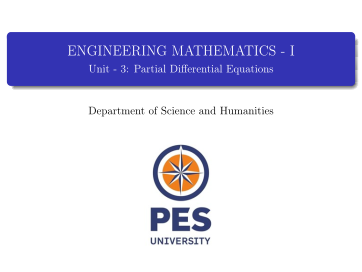
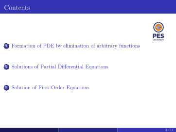
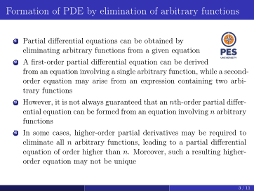
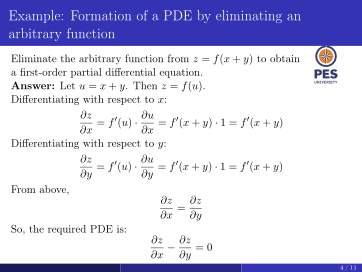
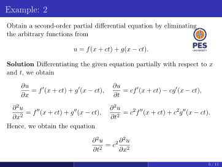
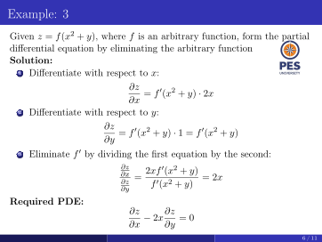
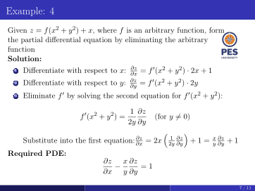
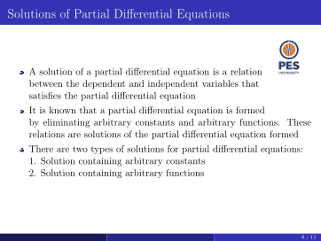
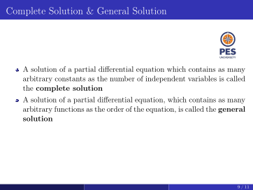
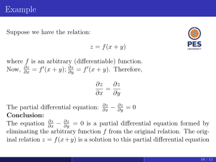
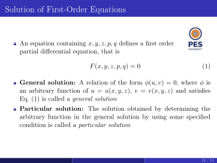
Important points and why
- Source slide page 1 (extracted text): ENGINEERING MATHEMATICS - I Unit - 3: Partial Differential Equations Department of Science and Humanities EV0000174 · EV0000175 · EV0000176
- Source slide page 2 (extracted text): Contents 1 Formation of PDE by elimination of arbitrary functions 2 Solutions of Partial Differential Equations 3 Solution of First-Order Equations 2 / 11 EV0000177 · EV0000178 · EV0000179
- Source slide page 3 (extracted text): Formation of PDE by elimination of arbitrary functions 1 Partial differential equations can be obtained by eliminating arbitrary functions from a given equation 2 A first-order partial differential equation can be derived from an equation involving a single arbitrary function, while a second- order equation may arise from an expression containing two arbi- trary functions 3 However, it is not always guaranteed that an nth-order partial differ- ential equation can be formed from an equation involving n arbitrary functions 4 In some cases, higher-order partial derivatives may be required to eliminate all n arbitrary functions, leading to a partial differential equation of order higher than n. Moreover, such a resulting higher- order equation may not be unique 3 / 11 EV0000180 · EV0000181 · EV0000182
- Source slide page 4 (extracted text): Example: Formation of a PDE by eliminating an arbitrary function Eliminate the arbitrary function from z = f(x + y) to obtain a first-order partial differential equation. Answer: Let u = x + y. Then z = f(u). Differentiating with respect to x: ∂z ∂u = f′(u) · = f′(x + y) · 1 = f′(x + y) ∂x ∂x Differentiating with respect to y: ∂z ∂u = f′(u) · = f′(x + y) · 1 = f′(x + y) ∂y ∂y From above, ∂z ∂z = ∂x ∂y So, the required PDE is: ∂z −∂z = 0 ∂x ∂y 4 / 11 EV0000183 · EV0000184 · EV0000185
- Source slide page 5 (extracted text): Example: 2 Obtain a second-order partial differential equation by eliminating the arbitrary functions from u = f(x + ct) + g(x −ct). Solution Differentiating the given equation partially with respect to x and t, we obtain ∂u ∂u = f′(x + ct) + g′(x −ct), = cf′(x + ct) −cg′(x −ct), ∂x ∂t ∂2u ∂2u = f′′(x + ct) + g′′(x −ct), = c2f′′(x + ct) + c2g′′(x −ct). ∂x2 ∂t2 Hence, we obtain the equation ∂2u ∂2u = c2 ∂t2 ∂x2 5 / 11 EV0000186 · EV0000187 · EV0000188
- Source slide page 6 (extracted text): Example: 3 Given z = f(x2 + y), where f is an arbitrary function, form the partial differential equation by eliminating the arbitrary function Solution: 1 Differentiate with respect to x: ∂z = f′(x2 + y) · 2x ∂x 2 Differentiate with respect to y: ∂z = f′(x2 + y) · 1 = f′(x2 + y) ∂y 3 Eliminate f′ by dividing the first equation by the second: ∂z 2xf′(x2 + y) ∂x = = 2x ∂z f′(x2 + y) ∂y Required PDE: ∂z −2x∂z = 0 ∂x ∂y 6 / 11 EV0000189 · EV0000190 · EV0000191
- Source slide page 7 (extracted text): Example: 4 Given z = f(x2 + y2) + x, where f is an arbitrary function, form the partial differential equation by eliminating the arbitrary function Solution: 1 Differentiate with respect to x: ∂z = f′(x2 + y2) · 2x + 1 ∂x 2 Differentiate with respect to y: ∂z = f′(x2 + y2) · 2y ∂y 3 Eliminate f′ by solving the second equation for f′(x2 + y2): 1 ∂z f′(x2 + y2) = (for y̸ = 0) 2y ∂y Substitute into the first equation: ∂z = 2x 1 ∂z + 1 = x ∂z + 1 ∂x 2y ∂y y ∂y Required PDE: ∂z −x ∂z = 1 ∂x y ∂y 7 / 11 EV0000192 · EV0000193 · EV0000194
- Source slide page 8 (extracted text): Solutions of Partial Differential Equations A solution of a partial differential equation is a relation between the dependent and independent variables that satisfies the partial differential equation It is known that a partial differential equation is formed by eliminating arbitrary constants and arbitrary functions. These relations are solutions of the partial differential equation formed There are two types of solutions for partial differential equations: 1. Solution containing arbitrary constants 2. Solution containing arbitrary functions 8 / 11 EV0000195 · EV0000196 · EV0000197
- Source slide page 9 (extracted text): Complete Solution & General Solution A solution of a partial differential equation which contains as many arbitrary constants as the number of independent variables is called the complete solution A solution of a partial differential equation, which contains as many arbitrary functions as the order of the equation, is called the general solution 9 / 11 EV0000198 · EV0000199 · EV0000200
- Source slide page 10 (extracted text): Example Suppose we have the relation: z = f(x + y) where f is an arbitrary (differentiable) function. Now, ∂z = f′(x + y); ∂z = f′(x + y). Therefore, ∂x ∂y ∂z ∂z = ∂x ∂y The partial differential equation: ∂z −∂z = 0 ∂x ∂y Conclusion: The equation ∂z −∂z = 0 is a partial differential equation formed by ∂x ∂y eliminating the arbitrary function f from the original relation. The orig- inal relation z = f(x+y) is a solution to this partial differential equation 10 / 11 EV0000201 · EV0000202 · EV0000203
- Source slide page 11 (extracted text): Solution of First-Order Equations An equation containing x, y, z, p, q defines a first order partial differential equation, that is F(x, y, z, p, q) = 0 (1) General solution: A relation of the form ϕ(u, v) = 0, where ϕ is an arbitrary function of u = u(x, y, z), v = v(x, y, z) and satisfies Eq. (1) is called a general solution Particular solution: The solution obtained by determining the arbitrary function in the general solution by using some specified condition is called a particular solution 11 / 11 EV0000204 · EV0000205 · EV0000206
3Introduction
This lesson is indexed from the source video titled Introduction. Its complete timestamped transcript is preserved below in segment order. The original video path and content hash are recorded in datasets/lecture-corpus.json. Transcript text is source wording; it has not been silently corrected or rewritten. A candidate slide deck is grouped here according to the current matching score; the exact path and page locators are listed in the source evidence. EV0000014 · EV0000015
Graphs and diagrams
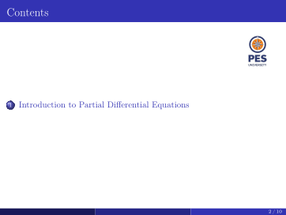
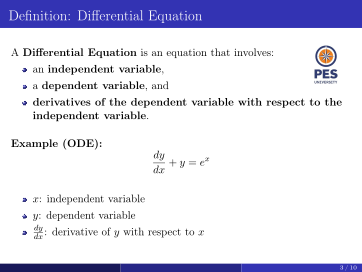
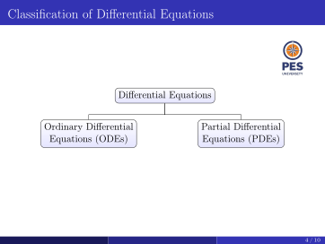
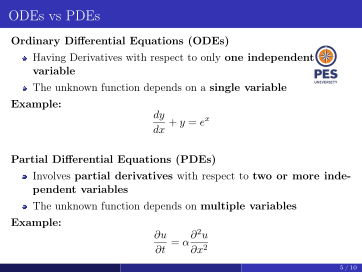
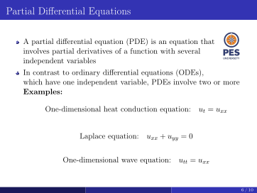
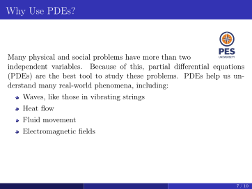
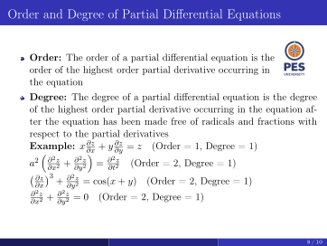
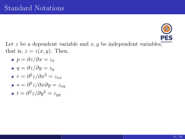
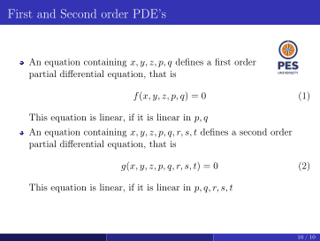
Important points and why
- Source slide page 1 (extracted text): ENGINEERING MATHEMATICS - I Unit - 3: Partial Differential Equations Department of Science and Humanities EV0000207 · EV0000208 · EV0000209
- Source slide page 2 (extracted text): Contents 1 Introduction to Partial Differential Equations 2 / 10 EV0000210 · EV0000211 · EV0000212
- Source slide page 3 (extracted text): Definition: Differential Equation A Differential Equation is an equation that involves: an independent variable, a dependent variable, and derivatives of the dependent variable with respect to the independent variable. Example (ODE): dy + y = ex dx x: independent variable y: dependent variable dx:dy derivative of y with respect to x 3 / 10 EV0000213 · EV0000214 · EV0000215
- Source slide page 4 (extracted text): Classification of Differential Equations Differential Equations Ordinary Differential Partial Differential Equations (ODEs) Equations (PDEs) 4 / 10 EV0000216 · EV0000217 · EV0000218
- Source slide page 5 (extracted text): ODEs vs PDEs Ordinary Differential Equations (ODEs) Having Derivatives with respect to only one independent variable The unknown function depends on a single variable Example: dy + y = ex dx Partial Differential Equations (PDEs) Involves partial derivatives with respect to two or more inde- pendent variables The unknown function depends on multiple variables Example: ∂u = α∂2u ∂t ∂x2 5 / 10 EV0000219 · EV0000220 · EV0000221
- Source slide page 6 (extracted text): Partial Differential Equations A partial differential equation (PDE) is an equation that involves partial derivatives of a function with several independent variables In contrast to ordinary differential equations (ODEs), which have one independent variable, PDEs involve two or more Examples: One-dimensional heat conduction equation: ut = uxx Laplace equation: uxx + uyy = 0 One-dimensional wave equation: utt = uxx 6 / 10 EV0000222 · EV0000223 · EV0000224
- Source slide page 7 (extracted text): Why Use PDEs? Many physical and social problems have more than two independent variables. Because of this, partial differential equations (PDEs) are the best tool to study these problems. PDEs help us un- derstand many real-world phenomena, including: Waves, like those in vibrating strings Heat flow Fluid movement Electromagnetic fields 7 / 10 EV0000225 · EV0000226 · EV0000227
- Source slide page 8 (extracted text): Order and Degree of Partial Differential Equations Order: The order of a partial differential equation is the order of the highest order partial derivative occurring in the equation Degree: The degree of a partial differential equation is the degree of the highest order partial derivative occurring in the equation af- ter the equation has been made free of radicals and fractions with respect to the partial derivatives Example: x ∂z + y ∂z = z (Order = 1, Degree = 1) ∂x ∂y a2 ∂2z + ∂2z = ∂2z (Order = 2, Degree = 1) ∂x2 ∂y2 ∂t2 ∂z 3 ∂2z + = cos(x + y) (Order = 2, Degree = 1) ∂x ∂y2 ∂2z ∂2z + = 0 (Order = 2, Degree = 1) ∂x2 ∂y2 8 / 10 EV0000228 · EV0000229 · EV0000230
- Source slide page 9 (extracted text): Standard Notations Let z be a dependent variable and x, y be independent variables, that is, z = z(x, y). Then, p = ∂z/∂x = zx q = ∂z/∂y = zy r = ∂2z/∂x2 = zxx s = ∂2z/∂x∂y = zxy t = ∂2z/∂y2 = zyy 9 / 10 EV0000231 · EV0000232 · EV0000233
- Source slide page 10 (extracted text): First and Second order PDE’s An equation containing x, y, z, p, q defines a first order partial differential equation, that is f(x, y, z, p, q) = 0 (1) This equation is linear, if it is linear in p, q An equation containing x, y, z, p, q, r, s, t defines a second order partial differential equation, that is g(x, y, z, p, q, r, s, t) = 0 (2) This equation is linear, if it is linear in p, q, r, s, t 10 / 10 EV0000234 · EV0000235 · EV0000236
4Problems on formation of PDE by eliminating arbitrary functions
This lesson is indexed from the source video titled Problems on formation of PDE by eliminating arbitrary functions. Its complete timestamped transcript is preserved below in segment order. The original video path and content hash are recorded in datasets/lecture-corpus.json. Transcript text is source wording; it has not been silently corrected or rewritten. A candidate slide deck is grouped here according to the current matching score; the exact path and page locators are listed in the source evidence. EV0000022 · EV0000023
Graphs and diagrams
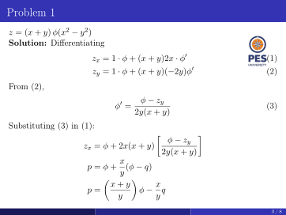
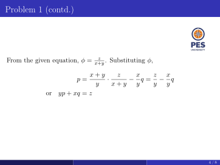
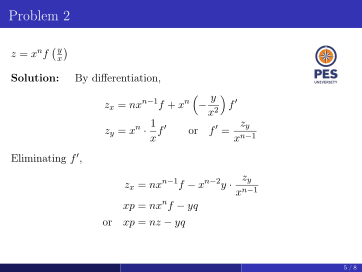
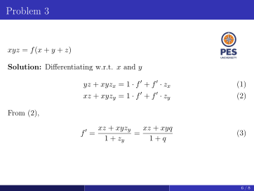
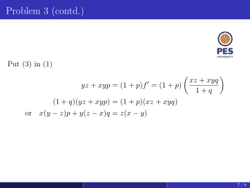
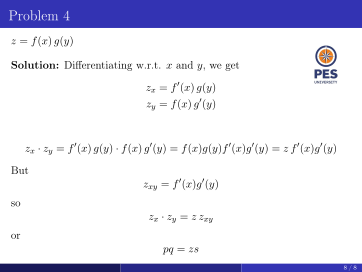
Important points and why
- Source slide page 1 (extracted text): ENGINEERING MATHEMATICS - I Unit - 3: Partial Differential Equations Department of Science and Humanities EV0000237 · EV0000238 · EV0000239
- Source slide page 2 (extracted text): Contents 1 Problems on formation of PDE by eliminating arbitrary functions 2 / 8 EV0000240 · EV0000241 · EV0000242
- Source slide page 3 (extracted text): Problem 1 z = (x + y) ϕ(x2 −y2) Solution: Differentiating zx = 1 · ϕ + (x + y)2x · ϕ′ (1) zy = 1 · ϕ + (x + y)(−2y)ϕ′ (2) From (2), ϕ −zy ϕ′ = (3) 2y(x + y) Substituting (3) in (1): ϕ −zy zx = ϕ + 2x(x + y) 2y(x + y) x p = ϕ + (ϕ −q) y x + y p = ϕ −x q y y 3 / 8 EV0000243 · EV0000244 · EV0000245
- Source slide page 4 (extracted text): Problem 1 (contd.) From the given equation, ϕ = x+y.z Substituting ϕ, x + y z z p = · −x q = −x q y x + y y y y or yp + xq = z 4 / 8 EV0000246 · EV0000247 · EV0000248
- Source slide page 5 (extracted text): Problem 2 z = xnf y x Solution: By differentiation, zx = nxn−1f + xn −y f′ x2 1 zy zy = xn · xf′ or f′ = xn−1 Eliminating f′, zy zx = nxn−1f −xn−2y · xn−1 xp = nxnf −yq or xp = nz −yq 5 / 8 EV0000249 · EV0000250 · EV0000251
- Source slide page 6 (extracted text): Problem 3 xyz = f(x + y + z) Solution: Differentiating w.r.t. x and y yz + xyzx = 1 · f′ + f′ · zx (1) xz + xyzy = 1 · f′ + f′ · zy (2) From (2), xz + xyzy xz + xyq f′ = = (3) 1 + zy 1 + q 6 / 8 EV0000252 · EV0000253 · EV0000254
- Source slide page 7 (extracted text): Problem 3 (contd.) Put (3) in (1) xz + xyq yz + xyp = (1 + p)f′ = (1 + p) 1 + q (1 + q)(yz + xyp) = (1 + p)(xz + xyq) or x(y −z)p + y(z −x)q = z(x −y) 7 / 8 EV0000255 · EV0000256 · EV0000257
- Source slide page 8 (extracted text): Problem 4 z = f(x) g(y) Solution: Differentiating w.r.t. x and y, we get zx = f′(x) g(y) zy = f(x) g′(y) zx · zy = f′(x) g(y) · f(x) g′(y) = f(x)g(y)f′(x)g′(y) = z f′(x)g′(y) But zxy = f′(x)g′(y) so zx · zy = z zxy or pq = zs 8 / 8 EV0000258 · EV0000259 · EV0000260
5Session-3
This lesson is indexed from the source video titled Session-3. Its complete timestamped transcript is preserved below in segment order. The original video path and content hash are recorded in datasets/lecture-corpus.json. Transcript text is source wording; it has not been silently corrected or rewritten. No slide deck is assigned to this video; candidate slide sources remain separate in the unit master. EV0000034 · EV0000035
6Lagranges Linear equation_continued
This lesson is indexed from the source video titled Lagranges Linear equation_continued. Its complete timestamped transcript is preserved below in segment order. The original video path and content hash are recorded in datasets/lecture-corpus.json. Transcript text is source wording; it has not been silently corrected or rewritten. A candidate slide deck is grouped here according to the current matching score; the exact path and page locators are listed in the source evidence. EV0000046 · EV0000047
Graphs and diagrams
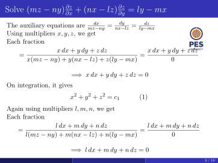
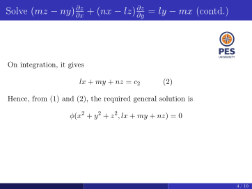
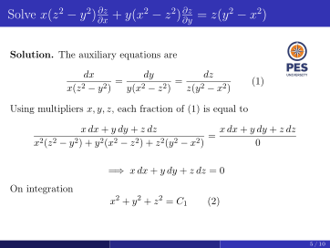
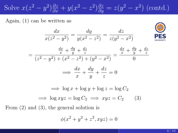
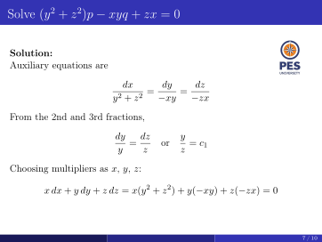
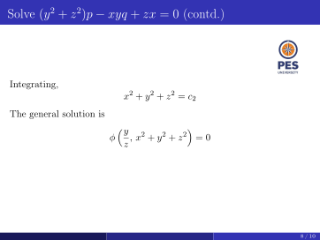
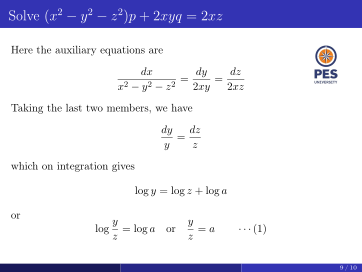
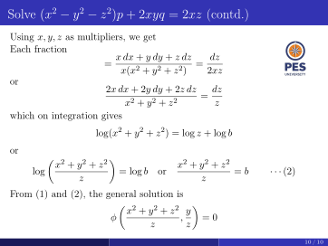
Important points and why
- Source slide page 1 (extracted text): ENGINEERING MATHEMATICS - I Unit - 3: Partial Differential Equations Department of Science and Humanities EV0000312 · EV0000313 · EV0000314
- Source slide page 2 (extracted text): Contents 1 Problems on Lagrange’s Linear Equation 2 / 10 EV0000315 · EV0000316 · EV0000317
- Source slide page 3 (extracted text): Solve (mz −ny) ∂z + (nx −lz)∂z = ly −mx ∂x ∂y The auxiliary equations are dx = dy = dz mz−ny nx−lz ly−mx Using multipliers x, y, z, we get Each fraction x dx + y dy + z dz x dx + y dy + z dz = = x(mz −ny) + y(nx −lz) + z(ly −mx) 0 =⇒x dx + y dy + z dz = 0 On integration, it gives x2 + y2 + z2 = c1 (1) Again using multipliers l, m, n, we get Each fraction l dx + m dy + n dz l dx + m dy + n dz = = l(mz −ny) + m(nx −lz) + n(ly −mx) 0 =⇒l dx + m dy + n dz = 0 3 / 10 EV0000318 · EV0000319 · EV0000320
- Source slide page 4 (extracted text): Solve (mz −ny) ∂z + (nx −lz)∂z = ly −mx (contd.) ∂x ∂y On integration, it gives lx + my + nz = c2 (2) Hence, from (1) and (2), the required general solution is ϕ(x2 + y2 + z2, lx + my + nz) = 0 4 / 10 EV0000321 · EV0000322 · EV0000323
- Source slide page 5 (extracted text): Solve x(z2 −y2) ∂z + y(x2 −z2)∂z = z(y2 −x2) ∂x ∂y Solution. The auxiliary equations are dx dy dz = = (1) x(z2 −y2) y(x2 −z2) z(y2 −x2) Using multipliers x, y, z, each fraction of (1) is equal to x dx + y dy + z dz x dx + y dy + z dz = x2(z2 −y2) + y2(x2 −z2) + z2(y2 −x2) 0 =⇒x dx + y dy + z dz = 0 On integration x2 + y2 + z2 = C1 (2) 5 / 10 EV0000324 · EV0000325 · EV0000326
- Source slide page 6 (extracted text): Solve x(z2 −y2) ∂z + y(x2 −z2)∂z = z(y2 −x2) (contd.) ∂x ∂y Again, (1) can be written as dx dy dz = = x(z2 −y2) y(x2 −z2) z(y2 −x2) dx + dy + dz dx + dy + dz x y z x y z = = (z2 −y2) + (x2 −z2) + (y2 −x2) 0 =⇒dx + dy + dz = 0 x y z =⇒log x + log y + log z = log C2 =⇒log xyz = log C2 =⇒xyz = C2 (3) From (2) and (3), the general solution is ϕ(x2 + y2 + z2, xyz) = 0 6 / 10 EV0000327 · EV0000328 · EV0000329
- Source slide page 7 (extracted text): Solve (y2 + z2)p −xyq + zx = 0 Solution: Auxiliary equations are dx dy dz = = y2 + z2 −xy −zx From the 2nd and 3rd fractions, dy dz y = or = c1 y z z Choosing multipliers as x, y, z: x dx + y dy + z dz = x(y2 + z2) + y(−xy) + z(−zx) = 0 7 / 10 EV0000330 · EV0000331 · EV0000332
- Source slide page 8 (extracted text): Solve (y2 + z2)p −xyq + zx = 0 (contd.) Integrating, x2 + y2 + z2 = c2 The general solution is y ϕ , x2 + y2 + z2 = 0 z 8 / 10 EV0000333 · EV0000334 · EV0000335
- Source slide page 9 (extracted text): Solve (x2 −y2 −z2)p + 2xyq = 2xz Here the auxiliary equations are dx dy dz = = x2 −y2 −z2 2xy 2xz Taking the last two members, we have dy dz = y z which on integration gives log y = log z + log a or y y log = log a or = a · · · (1) z z 9 / 10 EV0000336 · EV0000337 · EV0000338
- Source slide page 10 (extracted text): Solve (x2 −y2 −z2)p + 2xyq = 2xz (contd.) Using x, y, z as multipliers, we get Each fraction x dx + y dy + z dz dz = = x(x2 + y2 + z2) 2xz or 2x dx + 2y dy + 2z dz dz = x2 + y2 + z2 z which on integration gives log(x2 + y2 + z2) = log z + log b or x2 + y2 + z2 x2 + y2 + z2 log = log b or = b · · · (2) z z From (1) and (2), the general solution is x2 + y2 + z2 y ϕ , = 0 z z 10 / 10 EV0000339 · EV0000340 · EV0000341
7Lagranges Linear equation_continued
This lesson is indexed from the source video titled Lagranges Linear equation_continued. Its complete timestamped transcript is preserved below in segment order. The original video path and content hash are recorded in datasets/lecture-corpus.json. Transcript text is source wording; it has not been silently corrected or rewritten. A candidate slide deck is grouped here according to the current matching score; the exact path and page locators are listed in the source evidence. EV0000058 · EV0000059
8Method of separation of variables
This lesson is indexed from the source video titled Method of separation of variables. Its complete timestamped transcript is preserved below in segment order. The original video path and content hash are recorded in datasets/lecture-corpus.json. Transcript text is source wording; it has not been silently corrected or rewritten. A candidate slide deck is grouped here according to the current matching score; the exact path and page locators are listed in the source evidence. EV0000074 · EV0000075
Graphs and diagrams
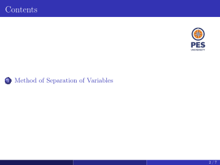
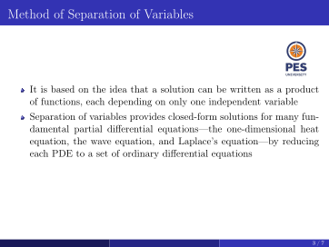
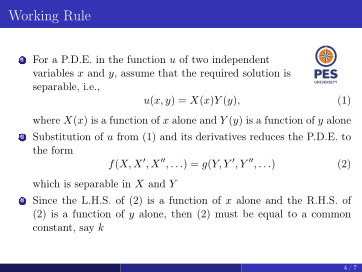
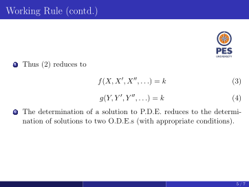
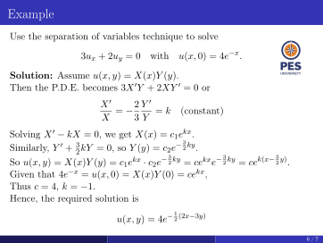
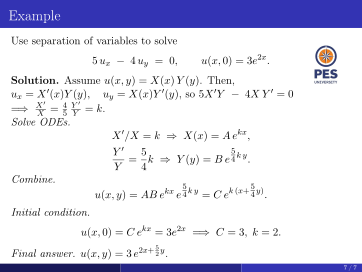
Important points and why
- Source slide page 1 (extracted text): ENGINEERING MATHEMATICS - I Unit - 3: Partial Differential Equations Department of Science and Humanities EV0000342 · EV0000343 · EV0000344
- Source slide page 2 (extracted text): Contents 1 Method of Separation of Variables 2 / 7 EV0000345 · EV0000346 · EV0000347
- Source slide page 3 (extracted text): Method of Separation of Variables It is based on the idea that a solution can be written as a product of functions, each depending on only one independent variable Separation of variables provides closed-form solutions for many fun- damental partial differential equations—the one-dimensional heat equation, the wave equation, and Laplace’s equation—by reducing each PDE to a set of ordinary differential equations 3 / 7 EV0000348 · EV0000349 · EV0000350
- Source slide page 4 (extracted text): Working Rule 1 For a P.D.E. in the function u of two independent variables x and y, assume that the required solution is separable, i.e., u(x, y) = X(x)Y (y), (1) where X(x) is a function of x alone and Y (y) is a function of y alone 2 Substitution of u from (1) and its derivatives reduces the P.D.E. to the form f(X, X′, X′′, . . .) = g(Y, Y ′, Y ′′, . . .) (2) which is separable in X and Y 3 Since the L.H.S. of (2) is a function of x alone and the R.H.S. of (2) is a function of y alone, then (2) must be equal to a common constant, say k 4 / 7 EV0000351 · EV0000352 · EV0000353
- Source slide page 5 (extracted text): Working Rule (contd.) 1 Thus (2) reduces to f(X, X′, X′′, . . .) = k (3) g(Y, Y ′, Y ′′, . . .) = k (4) 2 The determination of a solution to P.D.E. reduces to the determi- nation of solutions to two O.D.E.s (with appropriate conditions). 5 / 7 EV0000354 · EV0000355 · EV0000356
- Source slide page 6 (extracted text): Example Use the separation of variables technique to solve 3ux + 2uy = 0 with u(x, 0) = 4e−x. Solution: Assume u(x, y) = X(x)Y (y). Then the P.D.E. becomes 3X′Y + 2XY ′ = 0 or X′ = −2 Y ′ = k (constant) X 3 Y Solving X′ −kX = 0, we get X(x) = c1ekx. 2 ky. Similarly, Y ′ + 32kY = 0, so Y (y) = c2e−3 2 ky = cekxe−32 ky = cek(x−32 y).So u(x, y) = X(x)Y (y) = c1ekx · c2e−3 Given that 4e−x = u(x, 0) = X(x)Y (0) = cekx, Thus c = 4, k = −1. Hence, the required solution is u(x, y) = 4e−12 (2x−3y) 6 / 7 EV0000357 · EV0000358 · EV0000359
- Source slide page 7 (extracted text): Example Use separation of variables to solve 5 ux −4 uy = 0, u(x, 0) = 3e2x. Solution. Assume u(x, y) = X(x) Y (y). Then, ux = X′(x)Y (y), uy = X(x)Y ′(y), so 5X′Y −4X Y ′ = 0 X′ 4 Y ′=⇒ = = k. X 5 Y Solve ODEs. X′/X = k ⇒X(x) = A ekx, Y ′ 5 5 k = ⇒Y (y) = B e 4 y. Y 4k Combine. 5 5 u(x, y) = AB ekx e 4 k y = C ek (x+ 4 y). Initial condition. u(x, 0) = C ekx = 3e2x =⇒C = 3, k = 2. 5 Final answer. u(x, y) = 3 e2x+ 2 y. 7 / 7 EV0000360 · EV0000361 · EV0000362
9Modeling of One dimensional Heat equation
This lesson is indexed from the source video titled Modeling of One dimensional Heat equation. Its complete timestamped transcript is preserved below in segment order. The original video path and content hash are recorded in datasets/lecture-corpus.json. Transcript text is source wording; it has not been silently corrected or rewritten. A candidate slide deck is grouped here according to the current matching score; the exact path and page locators are listed in the source evidence. EV0000090 · EV0000091
Graphs and diagrams
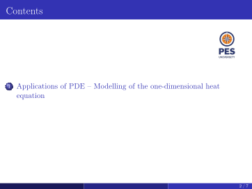
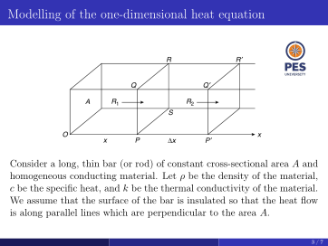
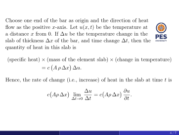
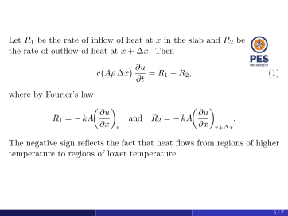
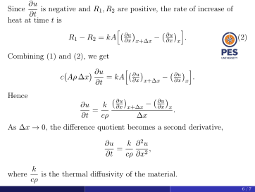
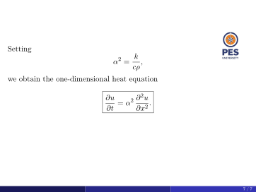
Important points and why
- Source slide page 1 (extracted text): ENGINEERING MATHEMATICS - I Unit - 3: Partial Differential Equations Department of Science and Humanities EV0000384 · EV0000385 · EV0000386
- Source slide page 2 (extracted text): Contents 1 Applications of PDE – Modelling of the one-dimensional heat equation 2 / 7 EV0000387 · EV0000388 · EV0000389
- Source slide page 3 (extracted text): Modelling of the one-dimensional heat equation Consider a long, thin bar (or rod) of constant cross-sectional area A and homogeneous conducting material. Let ρ be the density of the material, c be the specific heat, and k be the thermal conductivity of the material. We assume that the surface of the bar is insulated so that the heat flow is along parallel lines which are perpendicular to the area A. 3 / 7 EV0000390 · EV0000391 · EV0000392
- Source slide page 4 (extracted text): Choose one end of the bar as origin and the direction of heat flow as the positive x-axis. Let u(x, t) be the temperature at a distance x from 0. If ∆u be the temperature change in the slab of thickness ∆x of the bar, and time change ∆t, then the quantity of heat in this slab is (specific heat) × (mass of the element slab) × (change in temperature) = c A ρ ∆x ∆u. Hence, the rate of change (i.e., increase) of heat in the slab at time t is ∆u ∂u c Aρ ∆x lim = c Aρ ∆x . ∆t→0 ∆t ∂t 4 / 7 EV0000393 · EV0000394 · EV0000395
- Source slide page 5 (extracted text): Let R1 be the rate of inflow of heat at x in the slab and R2 be the rate of outflow of heat at x + ∆x. Then ∂u c Aρ ∆x = R1 −R2, (1) ∂t where by Fourier’s law ∂u ∂u R1 = −kA and R2 = −kA . ∂x x ∂x x+∆x The negative sign reflects the fact that heat flows from regions of higher temperature to regions of lower temperature. 5 / 7 EV0000396 · EV0000397 · EV0000398
- Source slide page 6 (extracted text): ∂u Since is negative and R1, R2 are positive, the rate of increase of ∂t heat at time t is h ∂u ∂u i R1 −R2 = kA ∂x x+∆x − ∂x x . (2) Combining (1) and (2), we get ∂u h ∂u ∂u i c Aρ ∆x = kA − . ∂t ∂x x+∆x ∂x x Hence ∂u − ∂u ∂u k ∂x x+∆x ∂x x = . ∂t cρ ∆x As ∆x →0, the difference quotient becomes a second derivative, ∂u k ∂2u = , ∂t cρ ∂x2 k where is the thermal diffusivity of the material. cρ 6 / 7 EV0000399 · EV0000400 · EV0000401
- Source slide page 7 (extracted text): Setting k α2 = cρ, we obtain the one-dimensional heat equation ∂u ∂2u = α2 . ∂t ∂x2 7 / 7 EV0000402 · EV0000403 · EV0000404
10Solution of one dimensional heat equation
This lesson is indexed from the source video titled Solution of one dimensional heat equation. Its complete timestamped transcript is preserved below in segment order. The original video path and content hash are recorded in datasets/lecture-corpus.json. Transcript text is source wording; it has not been silently corrected or rewritten. A candidate slide deck is grouped here according to the current matching score; the exact path and page locators are listed in the source evidence. EV0000102 · EV0000103
Graphs and diagrams
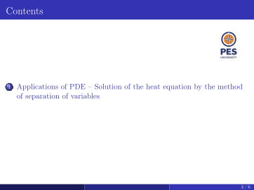
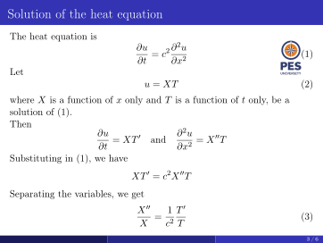
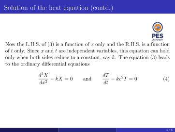
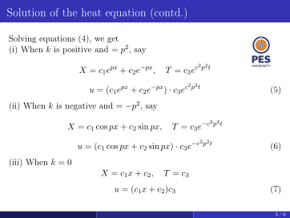
Important points and why
- Source slide page 1 (extracted text): ENGINEERING MATHEMATICS - I Unit - 3: Partial Differential Equations Department of Science and Humanities EV0000405 · EV0000406 · EV0000407
- Source slide page 2 (extracted text): Contents 1 Applications of PDE – Solution of the heat equation by the method of separation of variables 2 / 6 EV0000408 · EV0000409 · EV0000410
- Source slide page 3 (extracted text): Solution of the heat equation The heat equation is ∂u ∂2u = c2 (1) ∂t ∂x2 Let u = XT (2) where X is a function of x only and T is a function of t only, be a solution of (1). Then ∂u ′ ∂2u = XT and = X′′T ∂t ∂x2 Substituting in (1), we have XT ′ = c2X′′T Separating the variables, we get X′′ 1 T ′ = (3) X c2 T 3 / 6 EV0000411 · EV0000412 · EV0000413
- Source slide page 4 (extracted text): Solution of the heat equation (contd.) Now the L.H.S. of (3) is a function of x only and the R.H.S. is a function of t only. Since x and t are independent variables, this equation can hold only when both sides reduce to a constant, say k. The equation (3) leads to the ordinary differential equations d2X dT −kX = 0 and −kc2T = 0 (4) dx2 dt 4 / 6 EV0000414 · EV0000415 · EV0000416
- Source slide page 5 (extracted text): Solution of the heat equation (contd.) Solving equations (4), we get (i) When k is positive and = p2, say X = c1epx + c2e−px, T = c3ec2p2t u = (c1epx + c2e−px) · c3ec2p2t (5) (ii) When k is negative and = −p2, say X = c1 cos px + c2 sin px, T = c3e−c2p2t u = (c1 cos px + c2 sin px) · c3e−c2p2t (6) (iii) When k = 0 X = c1x + c2, T = c3 u = (c1x + c2)c3 (7) 5 / 6 EV0000417 · EV0000418 · EV0000419
- Source slide page 6 (extracted text): Solution of the heat equation (contd.) Thus the various possible solutions of the heat equation (1) are: u = (c1epx + c2e−px) · c3ec2p2t (5) u = (c1 cos px + c2 sin px) · c3e−c2p2t (6) u = (c1x + c2)c3 (7) Of these three solutions, we have to choose that solution which is consis- tent with the physical nature of the problem. Since u decreases as time t increases, the only suitable solution of the heat equation is u = (c1 cos px + c2 sin px)c3e−c2p2t 6 / 6 EV0000420 · EV0000421 · EV0000422
11Higher order PDE
This lesson is indexed from the source video titled Higher order PDE. Its complete timestamped transcript is preserved below in segment order. The original video path and content hash are recorded in datasets/lecture-corpus.json. Transcript text is source wording; it has not been silently corrected or rewritten. A candidate slide deck is grouped here according to the current matching score; the exact path and page locators are listed in the source evidence. EV0000118 · EV0000119
Graphs and diagrams
Important points and why
- Source slide page 1 (extracted text): ENGINEERING MATHEMATICS - I Unit - 3: Partial Differential Equations Department of Science and Humanities EV0000423 · EV0000424 · EV0000425
- Source slide page 2 (extracted text): Contents 1 Solution of higher order Linear Partial Differential Equations with constant coefficients 2 / 16 EV0000426 · EV0000427 · EV0000428
- Source slide page 3 (extracted text): Higher-Order Linear Equations with Constant Coefficients We have already learned how to solve higher-order linear ordinary differential equations with constant coefficients. These same meth- ods can also be used to solve higher-order linear partial differential equations with constant coefficients For example, consider the following partial differential equation ∂nz ∂nz ∂nz A0 + A1 n−1 + A2 n−2 + · · · ∂xn ∂x ∂y ∂x ∂y2 (1) ∂nz ∂nz · · · + An−1 n−1 + An = f(x, y) . ∂x ∂y ∂yn where Ai, i = 0, 1, . . . , n are constants. 3 / 16 EV0000429 · EV0000430 · EV0000431
- Source slide page 4 (extracted text): Higher-Order Linear Equations with Constant Coefficients (contd.) Denote ∂z ∂z ∂2z ∂2z p = = Dz, q = = D′z, D2z = , DD′z = ∂x ∂y ∂x2 ∂x∂y etc. Then, Eq. (1) can be written as n F(D, D′)z = X ArDn−r(D′)rz = f(x, y). (2) r=0 4 / 16 EV0000432 · EV0000433 · EV0000434
- Source slide page 5 (extracted text): Higher-Order Linear Equations with Constant Coefficients (contd.) As in the case of ordinary differential equations, the general solution of Eq. (2) can be written as z = (complementary function) + (particular integral), where the complementary function is the solution of the homogeneous equation F(D, D′)z = 0 and the particular integral is a solution satisfying the non-homogeneous equation (2) and does not contain any arbitrary constants. 5 / 16 EV0000435 · EV0000436 · EV0000437
- Source slide page 6 (extracted text): Complementary Function Consider the linear, homogeneous equation F(D, D′)z = 0. (3) If F(D, D′) can be factorised into linear factors of the form (aiD + biD′ + ci), then F(D, D′) is said to be reducible. Otherwise, it is said to be irre- ducible 6 / 16 EV0000438 · EV0000439 · EV0000440
- Source slide page 7 (extracted text): Complementary Function (contd.) F(D, D′) may contain some reducible and some irreducible factors. We have the following examples. (D2 −D′2)z = (D −D′)(D + D′)z = 0 (4) (D3−6D2D′+11DD′2−6D′3)z = (D−D′)(D−2D′)(D−3D′)z = 0 (5) (2D2 −D′)z = 0 (6) (D3 + D2D′ + D′3)z = 0 (7) (D3 −D2D′ + DD′ −D′2)z = (D −D′)(D2 + D′2)z = 0 (8) Eqs. (4) and (5) are the reducible forms, Eqs. (6) and (7) are irreducible forms and Eq. (8) has one reducible and one irreducible factor. Note that we will discuss only the equations which are in “re- ducible form”. 7 / 16 EV0000441 · EV0000442 · EV0000443
- Source slide page 8 (extracted text): Distinct Roots Consider the solution of the partial differential equation with one linear factor, that is, the solution of (aiD + biD′ + ci)z = 0, or aip + biq = −ciz. (9) The solution of Eq. (9) is given by z = e−(cix)/ai ϕi(bix −aiy) (10) 8 / 16 EV0000444 · EV0000445 · EV0000446
- Source slide page 9 (extracted text): Distinct Roots (contd.) Some particular cases: a) If the linear factor is of the form (aiD + biD′), then Eq.(10) simplifies to z = ϕi(bix −aiy) (11) (b) If the linear factor is of the form (biD′ + ci), then we have the differential equation as (biD′ + ci)z = 0 or biqi + ciz = 0. The solutions of the auxiliary equations are bix = k1 and z = k2e−(ciy)/bi Hence, the solution of Eq. (9), when ai = 0, is given by k2 = ϕi(k1), or ze(ciy)/bi = ϕi(bix) or z = e−(ciy)/bi ϕi(bix) (12) 9 / 16 EV0000447 · EV0000448 · EV0000449
- Source slide page 10 (extracted text): Distinct Roots (contd.) (c) Similarly, if the linear factor is of the form (aiD + ci), then the solution of Eq.(9), when bi = 0, is given by z = e−cixai ϕi aiy (13) The complementary function is given by z = e−c1xa1 ϕ1 b1x −a1y + e−c2x a2 ϕ2 b2x −a2y + · · · + e−cnx an ϕn bnx −any Similarly, the complementary function in the other cases can be written. 10 / 16 EV0000450 · EV0000451 · EV0000452
- Source slide page 11 (extracted text): Distinct Roots (contd.) Note: If all terms in F(D, D′) have the same total degree, then we can set m = D/D′ and look for factors of the equation using m. Example: Find the solutions of the following PDE’s (i) (D2 −D′2)z = 0, (ii) (D3 −6D2D′ + 11DD′2 −6D′3)z = 0, (iii) 3r + 7s + 2t + 7p + 4q + 2z = 0, (iv) 2r −s −t −p + q = 0. (i) We have (D2 −D′2)z = (D + D′)(D −D′)z = 0. For the factor D −D′, we have a1 = 1, b1 = −1. For the factor D + D′, we have a2 = 1, b2 = 1. Therefore, using Eq. (11), we obtain the solution as z = ϕ∗1(−x −y) + ϕ2(x −y) = ϕ1(x + y) + ϕ2(x −y). 11 / 16 EV0000453 · EV0000454 · EV0000455
- Source slide page 12 (extracted text): Distinct Roots (contd.) (ii) We have (D3 −6D2D′ + 11DD′2 −6D′3)z ⇒(D −D′)(D −2D′)(D −3D′)z = 0. For the factor D −D′, we have a1 = 1, b1 = −1. For the factor D −2D′, we have a2 = 1, b2 = −2. For the factor D −3D′, we have a3 = 1, b3 = −3. If we set (D/D′) = m, we get the equation as m3 −6m2 + 11m −6 = 0, whose roots are m = 1, 2, 3. Hence, the factors are D −D′, D −2D′, D −3D′. Using Eq. (11), the solution can be written as z = ϕ∗1(−x −y) + ϕ∗2(−2x −y) + ϕ∗3(−3x −y) = ϕ1(x + y) + ϕ2(2x + y) + ϕ3(3x + y). 12 / 16 EV0000456 · EV0000457 · EV0000458
- Source slide page 13 (extracted text): Distinct Roots (contd.) The aforementioned note does not apply to the following two problems. (iii) We have (3D2+7DD′+2D′2+7D+4D′+2)z = (3D+D′+1)(D+2D′+2)z = 0. For the factor 3D + D′ + 1, we have a1 = 3, b1 = 1, c1 = 1. For the factor D + 2D′ + 2, we have a2 = 1, b2 = 2, c2 = 2. Using Eq. (10), the solution can be written as z = e−x/3ϕ1(x −3y) + e−2xϕ2(2x −y). 13 / 16 EV0000459 · EV0000460 · EV0000461
- Source slide page 14 (extracted text): Distinct Roots (contd.) (iv) We have (2D2 −DD′ −D′2 −D + D′)z = (D −D′)(2D + D′ −1)z = 0. For the factor D −D′, we have a1 = 1, b1 = −1, c1 = 0. For the factor 2D + D′ −1, we have a2 = 2, b2 = 1, c2 = −1. Using Eqs. (10) and (11), the solution can be written as z = ϕ∗1(−x −y) + ex/2ϕ2(x −2y) = ϕ1(x + y) + ex/2ϕ2(x −2y). 14 / 16 EV0000462 · EV0000463 · EV0000464
- Source slide page 15 (extracted text): Multiple Factors Let a factor be of multiplicity 2, that is, we have either of the factors (aiD + biD′ + ci)2, or (aiD + ci)2, or (biD′ + ci)2. 1 For the equation (aiD + biD′ + ci)2z = 0, the general solution is given by z = e−(cix)/ai [x ϕi(bix −aiy) + ψi(bix −aiy)] 2 For the equation (aiD + ci)2z = 0, the general solution is given by z = e−(cix)/ai [x ϕi(aiy) + ψi(aiy)] 15 / 16 EV0000465 · EV0000466 · EV0000467
- Source slide page 16 (extracted text): Multiple Factors (contd.) 1 For the equation (biD′ + ci)2z = 0, the general solution is z = e−(ciy)/bi [y ϕi(bix) + ψi(bix)] 2 If the factor is of multiplicity m, say (a1D + b1D′ + c1)m, then the general solution is z = e−c1xa1 ψ1(b1x −a1y) + x ψ2(b1x −a1y) + . . . + xm−1 ψm(b1x −a1y) Similarly, we can write the general solution in the other cases. 16 / 16 EV0000468 · EV0000469 · EV0000470
12Particular integral of type 1 and 2
This lesson is indexed from the source video titled Particular integral of type 1 and 2. Its complete timestamped transcript is preserved below in segment order. The original video path and content hash are recorded in datasets/lecture-corpus.json. Transcript text is source wording; it has not been silently corrected or rewritten. A candidate slide deck is grouped here according to the current matching score; the exact path and page locators are listed in the source evidence. EV0000138 · EV0000139
Graphs and diagrams
Important points and why
- Source slide page 1 (extracted text): ENGINEERING MATHEMATICS - I Unit - 3: Partial Differential Equations Department of Science and Humanities EV0000471 · EV0000472 · EV0000473
- Source slide page 2 (extracted text): Contents 1 Particular Integral when f(x, y) = eax+by 2 Particular Integral when f(x, y) = sin(ax + b) or cos(ax + b) 2 / 11 EV0000474 · EV0000475 · EV0000476
- Source slide page 3 (extracted text): Particular Integral when f(x, y) = eax+by Consider the non-homogeneous equation F(D, D′)z = f(x, y) The particular integral is now written as z = [F(D, D′)−1]f(x, y) 3 / 11 EV0000477 · EV0000478 · EV0000479
- Source slide page 4 (extracted text): When f(x, y) = eax+by The particular integral in this case is 1 z = [F(D, D′)−1]eax+by = if F(a, b)̸ = 0. F(a, b)eax+by, If F(a, b) = 0, then we write the particular integral as z = ϕ(x, y)eax+by, where ϕ(x, y) = [F(D + a, D′ + b)]−1(1). We expand the operator [F(D+a, D′ +b)]−1 in an infinite series symbol- ically, and determine ϕ(x, y). Then, the particular integral is given by z = ϕ(x, y)eax+by. Note that D−1 and (D′)−1 mean integral with respect to x and y respectively, keeping the other variable as constant 4 / 11 EV0000480 · EV0000481 · EV0000482
- Source slide page 5 (extracted text): Problem Find the general solution of the partial differential equation [2D2 −DD′ −(D′)2 + D −D′]z = e2x+3y. Solution: We write F(D, D′) z = 2D2 −D D′ −(D′)2 + D −D′ z = (2D + D′ + 1)(D −D′) z = e2x+3y . The homogeneous equation is (2D + D′ + 1)(D −D′)z = 0 For the factor D −D′, we have a1 = 1, b1 = −1, c1 = 0. For the factor 2D + D′ + 1, we have a2 = 2, b2 = 1, c2 = 1. Therefore, the complementary function as z = e−x/2ϕ1(x −2y) + ϕ2(x + y) 5 / 11 EV0000483 · EV0000484 · EV0000485
- Source slide page 6 (extracted text): Problem (contd.) Since F(2, 3) = (4 + 3 + 1)(2 −3) = 8 × (−1) = −8̸ = 0, we obtain the particular integral as 1 z = = −1 F(2, 3)e2x+3y 8e2x+3y. Therefore, the general solution of the given differential equation is given by z = e−x/2ϕ1(x −2y) + ϕ2(x + y) −1 8e2x+3y 6 / 11 EV0000486 · EV0000487 · EV0000488
- Source slide page 7 (extracted text): Problem Find a particular integral of the differential equation (4D2 + 3DD′ −D′2 −D −D′)z = 3e(x+2y)/2 Solution: We have F(D, D′) = 4D2 + 3DD′ −D′2 −D −D′ and 1 1 1 1 = 4 + 3 (1) −1 −1 −1 = 0. F 2, 4 2 2 We write the particular integral as z = ϕ(x, y)e(x+2y)/2, where ϕ(x, y) is a function to be determined. The given equation is: F(D, D′)[z] = 3e(x+2y)/2 ⇒F D + 2,1 D′ + 1 · ϕ(x, y)e(x+2y)/2 = 3e(x+2y)/2 ⇒F D + 12, D′ + 1 · ϕ(x, y) = 3 Therefore, −1 1 ϕ(x, y) = F D + 2, D′ + 1 (3) 7 / 11 EV0000489 · EV0000490 · EV0000491
- Source slide page 8 (extracted text): Problem (contd.) 1 1 2 1 F D + 2, D′ + 1 = 4 D + 2 + 3 D + 2 (D′ + 1) −(D′ + 1)2− 1 (D + 2) −(D′ + 1) = 6D −3 + 3DD′ + 4D2 −(D′)2 2D′ = 6D 1 −1 + 1 + 4D −D′(D′)2} 4D′D−1 6{3D′ 8 / 11 EV0000492 · EV0000493 · EV0000494
- Source slide page 9 (extracted text): Problem (contd.) Therefore, −1 1 ϕ(x, y) = F D + 2, D′ + 1 (3) becomes −1 1 ϕ(x, y) = 1 −1 + 1 + 4D −D′(D′)2} (1) 2D−1 4D′D−1 6{3D′ 1 x = 2D−1(1) = 2. Hence, the particular integral is given by x z = 2e(x+2y)/2 9 / 11 EV0000495 · EV0000496 · EV0000497
- Source slide page 10 (extracted text): P.I. when f(x, y) = sin(ax + by), or f(x, y) = cos(ax + by) The particular integral in this case is sin(ax + by) z = F D2, DD′, (D′)2 sin(ax + by) ⇒z = if F(−a2, −ab, −b2)̸ = 0. F(−a2, −ab, −b2), Similarly, if f(x, y) = cos(ax + by), we get the particular integral as cos(ax + by) z = if F(−a2, −ab, −b2)̸ = 0. F(−a2, −ab, −b2), If F(−a2, −ab, −b2) = 0, then the particular integral is found by using Case 4. 10 / 11 EV0000498 · EV0000499 · EV0000500
- Source slide page 11 (extracted text): Problem Find the particular integral of the differential equation 2∂2z −3 ∂2z + ∂2z = sin(x −2y) ∂x2 ∂x∂y ∂y2 Solution We have F(D2, DD′, (D′)2)z = [2D2 −3DD′ + (D′)2]z = sin(x −2y) We have the right hand side as sin(ax + by), where a = 1, b = −2 Hence, F(D2, DD′, (D′)2) sin(x −2y) = [2(−1) −3(2) + (−4)] sin(x −2y) = −12 sin(x −2y) The particular integral is given by sin(x −2y) z = = −1 sin(x −2y) F(−a2, −ab, −b2) 12 11 / 11 EV0000501 · EV0000502 · EV0000503
13Problems on finding the solution when RHS=0
This lesson is indexed from the source video titled Problems on finding the solution when RHS=0. Its complete timestamped transcript is preserved below in segment order. The original video path and content hash are recorded in datasets/lecture-corpus.json. Transcript text is source wording; it has not been silently corrected or rewritten. A candidate slide deck is grouped here according to the current matching score; the exact path and page locators are listed in the source evidence. EV0000150 · EV0000151
Graphs and diagrams
Important points and why
- Source slide page 1 (extracted text): ENGINEERING MATHEMATICS - I Unit - 3: Partial Differential Equations Department of Science and Humanities EV0000504 · EV0000505 · EV0000506
- Source slide page 2 (extracted text): Contents 1 Problems on finding the solution when RHS=0 2 / 7 EV0000507 · EV0000508 · EV0000509
- Source slide page 3 (extracted text): Problems on finding the solution when RHS=0 Find the solutions of the following partial differential equations (i) (D4 −2D2D′2 + D′4)z = 0, (ii) (4D3 −3DD′2 + D′3)z = 0. Solution (i) We have (D4 −2D2D′2 + D′4)z = (D2 −D′2)2z = (D −D′)2(D + D′)2z = 0. For the factor (D −D′)2, we have a1 = 1, b1 = −1, c1 = 0. For the factor (D + D′)2, we have a2 = 1, b2 = 1, c2 = 0. If we set m = D/D′, we get m4 −2m2 + 1 = 0. The roots are m2 = 1, or m = ±1 which are double roots. Hence, the factors are (D −D′)2 and (D + D′)2. Therefore, the general solution as z = [xϕ∗1(−x −y) + ϕ∗2(−x −y)] + [xψ1(x −y) + ψ2(x −y)] or z = xϕ1(x + y) + ϕ2(x + y) + xψ1(x −y) + ψ2(x −y). 3 / 7 EV0000510 · EV0000511 · EV0000512
- Source slide page 4 (extracted text): Problems (contd.) (ii) We have (4D3 −3DD′2 + D′3)z = (D + D′)(4D2 −4DD′ + D′2)z = (D + D′)(2D −D′)2z = 0. For the factor D + D′, we have a1 = 1, b1 = 1, c1 = 0. For the factor (2D −D′)2, we have a2 = 2, b2 = −1, c2 = 0. The general solution as z = ϕ1(x −y) + xψ∗1(−x −2y) + ψ∗2(−x −2y) or z = ϕ1(x −y) + xψ1(x + 2y) + ψ2(x + 2y). 4 / 7 EV0000513 · EV0000514 · EV0000515
- Source slide page 5 (extracted text): Problems (contd.) 3. Find the solutions of the following partial differential equation (D2 −DD′ −6D′2)z = 0 Solution: Let m = D . Then the auxiliary equation becomes: D′ m2 −m −6 = 0. Solving: 1 ± √1 + 24 1 ± 5 m = = ⇒m = 3, −2. 2 2 For m = 3: a1 = 1, b1 = −3 ⇒characteristic variable −3x −y, For m = −2: a2 = 1, b2 = 2 ⇒characteristic variable 2x −y. Hence, the general solution is: z = ϕ∗1(−3x −y) + ϕ2(2x −y) = ϕ1(3x + y) + ϕ2(2x −y) 5 / 7 EV0000516 · EV0000517 · EV0000518
- Source slide page 6 (extracted text): Problems (contd.) 4. Find the solutions of the following partial differential equations (i) (D2 −2DD′ + D′2)2z = 0, (ii) (D3 −3D2D′ + 3DD′2 −D′3)z = 0. Solution: (i) We observe that (D2 −2DD′ + D′2)2z = (D −D′)4z = 0. So the repeated factor is (D −D′), four times. This corresponds to: a = 1, b = −1, (repeated root). Hence, the general solution is: z = x3ϕ1(x + y) + x2ϕ2(x + y) + xϕ3(x + y) + ϕ4(x + y) 6 / 7 EV0000519 · EV0000520 · EV0000521
- Source slide page 7 (extracted text): Problems (contd.) (ii) We notice that (D3 −3D2D′ + 3DD′2 −D′3)z = (D −D′)3z = 0. So the repeated factor is (D −D′), three times. Hence, the general solution is: z = x2ϕ1(x + y) + xϕ2(x + y) + ϕ3(x + y) 7 / 7 EV0000522 · EV0000523 · EV0000524
14Particular integral -Type 3 and Type 4
This lesson is indexed from the source video titled Particular integral -Type 3 and Type 4. Its complete timestamped transcript is preserved below in segment order. The original video path and content hash are recorded in datasets/lecture-corpus.json. Transcript text is source wording; it has not been silently corrected or rewritten. A candidate slide deck is grouped here according to the current matching score; the exact path and page locators are listed in the source evidence. EV0000158 · EV0000159
Graphs and diagrams


Important points and why
- Source slide page 1 (extracted text): ENGINEERING MATHEMATICS - I Unit - 3: Partial Differential Equations Department of Science and Humanities EV0000564 · EV0000565 · EV0000566
- Source slide page 2 (extracted text): Contents 1 P.I. when f(x, y) = xmyn, or a polynomial in x, y 2 P.I. when f(x, y) is not of the form eax+by or sin(ax + b) or cos(ax + b) or xmyn (a polynomial in x, y) 2 / 11 EV0000567 · EV0000568 · EV0000569
- Source slide page 3 (extracted text): P.I. when f(x, y) = xmyn, or a polynomial in x, y We write the particular integral as z = [F(D, D′)]−1xmyn We expand [F(D, D′)]−1 as an infinite series and operate on xmyn. If F(D, D′) does not contain the constant term, that is, a term independent of D and D′, then we expand [F(D, D′)]−1 in powers of (D′)−1D if m < n and in powers of D−1D′ if m > n 3 / 11 EV0000570 · EV0000571 · EV0000572
- Source slide page 4 (extracted text): Problem Find the particular integral of the partial differential equation ∂2z −∂2z = x2 + y2 ∂x2 ∂y2 Solution: We have [D2 −(D′)2]z = x2 + y2 We write [D2 −(D′)2] = D2 1 −(D−1)2(D′)2 ∴[D2 −(D′)2]−1 = D−2 1 −(D−1)2(D′)2 −1 ⇒[D2 −(D′)2]−1 = D−2 1 + (D−1)2(D′)2 + (D−1)4(D′)4 + . . . 4 / 11 EV0000573 · EV0000574 · EV0000575
- Source slide page 5 (extracted text): Problem (contd.) Therefore, the particular integral is given by PI = [D2 −(D′)2]−1(x2 + y2) = D−2 1 + (D−1)2(D′)2 + (D−1)4(D′)4 + . . . (x2 + y2) = D−2 (x2 + y2) + (D−1)2(D′)2(x2 + y2) = D−2 (x2 + y2) + (D−1)2(2) = D−2[x2 + y2 + x2] = D−2[2x2 + y2] x4 x2y2 = + . On integrating twice w.r.t. x 6 2 We may also write [D2 −(D′)2] = −(D′)2[1 −(D′)−2D2]. In this case, we obtain a different form of the particular integral as z = −y2 [3x2 + y2] 6 5 / 11 EV0000576 · EV0000577 · EV0000578
- Source slide page 6 (extracted text): Problem Find the particular integral of the partial differential equation [D2 + 2DD′ + (D′)2]z = 3x + 2y, or [D + D′]2z = 3x + 2y We write [D + D′]2 = [D(1 + D′D−1)]2 and [D + D′]2 = D2(1 + D′D−1)2 6 / 11 EV0000579 · EV0000580 · EV0000581
- Source slide page 7 (extracted text): Problem (contd.) The particular integral is given by z = D−2(1 + D′D−1)−2(3x + 2y) = D−2[1 −2D′D−1 + 3(D′D−1)2 −. . .](3x + 2y) = D−2[3x + 2y −2D′D−1(3x + 2y)] = D−2[3x + 2y −2D′(3x2 + 2xy)] 2 = D−2[3x + 2y −4x] = D−2[−x + 2y] = −x3 + x2y 6 7 / 11 EV0000582 · EV0000583 · EV0000584
- Source slide page 8 (extracted text): Problem (contd.) We may also write [D + D′]2 = [D′(1 + (D′)−1D)]2 The particular integral is given by PI = (D′)−2[1 + (D′)−1D]−2(3x + 2y) = (D′)−2[1 −2(D′)−1D + 3((D′)−1D)2 −. . .](3x + 2y) = (D′)−2[3x + 2y −2(D′)−1D(3x + 2y)] = (D′)−2[3x + 2y −2(D′)−1(3)] = (D′)−2[3x + 2y −6y] = (D′)−2[3x −4y] On integrating twice w.r.t. y 3xy2 −2y3 = 2 3 8 / 11 EV0000585 · EV0000586 · EV0000587
- Source slide page 9 (extracted text): Let f(x, y) be not of any one of the forms as given in the above cases or the case of failure in Case 2 We use the following procedure: Assume that F(D, D′) is reducible, that is, it can be factorized. Now consider one of the factors as (a1D + b1D′) z = a1p + b1q = f(x, y). Since this is a Lagrange’s equation, the auxiliary equations are dx dy dz = = a1 b1 f(x, y). The first two ratios give the solution b1 x −a1 y = c, c arbitrary constant. (1) 9 / 11 EV0000588 · EV0000589 · EV0000590
- Source slide page 10 (extracted text): (Contd.) Consider now the first and third ratios: dx dz dz = = , a1 f x, y f x, (b1x −c)/a1 or equivalently h i a1 dz = f x, (b1x −c)/a1 dx. Integrating, we get Z b1x−c a1 z = f x, a1 dx + c1 = F(x, c) + c1, where c1 is an arbitrary constant. After integration, we replace c by b1x −a1y as given in Eq. 1. Since a particular integral is required, we set c1 = 0. 10 / 11 EV0000591 · EV0000592 · EV0000593
- Source slide page 11 (extracted text): (Contd.) Therefore, 1 z = F x, b1x −a1y a1 We repeat the procedure for each factor to obtain the required particular integral. 11 / 11 EV0000594 · EV0000595 · EV0000596
15Source slide deck: Lagrange s Linear Equation
This entry preserves the complete slide deck titled Lagrange s Linear Equation as searchable extracted page text and page-faithful rendered images. Its association with a particular video is not confirmed; it remains a separate topic under Engineering Mathematics - I, Unit_03, to avoid an unsupported match. EV0000261 · EV0000262
Graphs and diagrams
Important points and why
- Source slide page 1 (extracted text): ENGINEERING MATHEMATICS - I Unit - 3: Partial Differential Equations Department of Science and Humanities EV0000261 · EV0000262 · EV0000263
- Source slide page 2 (extracted text): Contents 1 Lagrange’s Linear Equation 2 Working Rule to solve Lagrange’s Linear Equation 2 / 9 EV0000264 · EV0000265 · EV0000266
- Source slide page 3 (extracted text): Lagrange’s Linear Equation 1 The linear first-order partial differential equation of the form P(x, y, z) p + Q(x, y, z) q = R(x, y, z) (1) is called the Lagrange’s equation in two independent variables x, y 2 Theorem: The general solution of the equation Pp + Qq = R is given by ϕ(u, v) = 0, where ϕ is an arbitrary function and u(x, y, z) = c1, v(x, y, z) = c2 are two linearly independent solutions of the equa- tions dx dy dz = = (2) P Q R (These equations are called the auxiliary or subsidiary equations.) 3 / 9 EV0000267 · EV0000268 · EV0000269
- Source slide page 4 (extracted text): Working Rule to Solve Lagrange’s Linear Equation To solve the equation Pp + Qq = R 1 Form the auxiliary equations dx dy dz = = P Q R 2 Solve the auxiliary equations by the method of grouping or the method of multipliers or both to get two independent solutions u = a and v = b, where a, b are arbitrary constants 3 ϕ(u, v) = 0 is the general solution of the equation Pp + Qq = R 4 / 9 EV0000270 · EV0000271 · EV0000272
- Source slide page 5 (extracted text): Method of Grouping in Lagrange’s Equation 1 The method of grouping involves pairing two of these ratios at a time to form ordinary differential equations which can be integrated to find the solution 2 Group two ratios at a time: dx dy = P Q dy dz = Q R dx dz = P R 3 Integrate each group to obtain two independent solutions 4 The general solution is given by ϕ(u, v) = 0, where u and v are the two independent solutions obtained 5 / 9 EV0000273 · EV0000274 · EV0000275
- Source slide page 6 (extracted text): Example: Suppose the auxiliary equations are: dx dy dz = = x y z Grouping dx = dy : x y Z dx Z dy = =⇒ln x = ln y + c1 =⇒x = c2 x y y Grouping dx = dz : x z Z dx Z dz = =⇒ln x = ln z + c3 =⇒x = c4 x z z The general solution is: x x F , = 0 y z 6 / 9 EV0000276 · EV0000277 · EV0000278
- Source slide page 7 (extracted text): Method of Multipliers in Lagrange’s Equation 1 Let the auxiliary equations be dx = dy = dz p Q R 2 Let l, m, n be constants or functions of x, y, z. Then by the property of ratio and proportion, we have dx dy dz ldx + mdy + ndz Each Ratio = = = = p Q R lp + mQ + nR 3 l, m, n are chosen in such a way that lP + mQ + nR = 0. Thus ldx + mdy + ndz = 0 4 Solve this differential equation, and the solution is u = c1 5 Similarly, choose another set of multipliers (l1, m1, n1) and the second solution is v = C2 6 Required general solution is ϕ(u, v) = 0, where u and v are the two independent solutions 7 / 9 EV0000279 · EV0000280 · EV0000281
- Source slide page 8 (extracted text): Example: Suppose the auxiliary equations are: dx dy dz = = y −z z −x x −y Choose multipliers l = 1, m = 1, n = 1. Then, dx + dy + dz dx + dy + dz Each Ratio = = y −z + z −x + x −y 0 This gives dx + dy + dz = 0. On integration, it gives x + y + z = C1. 8 / 9 EV0000282 · EV0000283 · EV0000284
- Source slide page 9 (extracted text): Differential Concept in Lagrange’s Equation 1 Given the auxiliary equations: dx = dy = dz P Q R 2 Sometimes, instead of grouping or using multipliers directly, we use the differential concept to form a linear combination of differentials that is easier to integrate 3 It is essentially the same as the method of multipliers, but empha- sizes the use of differentials and their integration 4 Multipliers may be chosen (more than once) such that the numerator ldx + mdy + ndz is an exact differential of the denominator lP + mQ + nR 5 Finally, ldx+mdy+ndz is combined with a fraction of dx = dy = dz to lP+mQ+nR P Q R get an integral 9 / 9 EV0000285 · EV0000286 · EV0000287
16Source slide deck: Problems of Lagranges equation
This entry preserves the complete slide deck titled Problems of Lagranges equation as searchable extracted page text and page-faithful rendered images. Its association with a particular video is not confirmed; it remains a separate topic under Engineering Mathematics - I, Unit_03, to avoid an unsupported match. EV0000288 · EV0000289
Graphs and diagrams
Important points and why
- Source slide page 1 (extracted text): ENGINEERING MATHEMATICS - I Unit - 3: Partial Differential Equations Department of Science and Humanities EV0000288 · EV0000289 · EV0000290
- Source slide page 2 (extracted text): Contents 1 Problems on Lagrange’s Linear Equation 2 / 8 EV0000291 · EV0000292 · EV0000293
- Source slide page 3 (extracted text): y2z Solve p + xz q = y2 x Given: y2z p + xz q = y2 x This is Lagrange’s equation Pp + Qq = R. Here, y2z P = , Q = xz, R = y2 x The subsidiary equations are: dx = dy = dz P Q R dx dy dz dx dy dz = = =⇒x = = y2z/x xz y2 y2z xz y2 Considering the first two ratios: x dx dy = =⇒x2dx = y2dy y2z xz 3 / 8 EV0000294 · EV0000295 · EV0000296
- Source slide page 4 (extracted text): y2z Solve p + xz q = y2 (contd.) x Integrating, Z Z y3 x2dx = y2dy =⇒x3 = + c =⇒x3 −y3 = 3c 3 3 =⇒x3 −y3 = a (1) Considering the first and last ratios: x dx dz = =⇒x dx = z dz y2z y2 Integrating, Z Z z2 x dx = z dz =⇒x2 = + c =⇒x2 −z2 = 2c =⇒x2 −z2 = b 2 2 (2) General solution: ∴ Φ(x3 −y3, x2 −z2) = 0 where Φ is arbitrary. 4 / 8 EV0000297 · EV0000298 · EV0000299
- Source slide page 5 (extracted text): Solve yzp −xzq = xy Solution: Auxiliary equations are dx dy dz = = yz −xz xy From first and second fractions, we get dx dy = y −x or x dx + y dy = 0 Integrating, x2 + y2 = c1 From first and third fractions, dx dz = yz xy 5 / 8 EV0000300 · EV0000301 · EV0000302
- Source slide page 6 (extracted text): Solve yzp −xzq = xy (contd.) or dx dz = z x Integrating, x2 −z2 = c2 Thus the general solution is ϕ(x2 + y2, x2 −z2) = 0 6 / 8 EV0000303 · EV0000304 · EV0000305
- Source slide page 7 (extracted text): Solve z(z2 + xy)(px −qy) = x4 Solution: Auxiliary equations are dx dy dz = = xz(z2 + xy) −yz(z2 + xy) x4 From first and second fractions, we get dx dy = x −y On integration, xy = c1 7 / 8 EV0000306 · EV0000307 · EV0000308
- Source slide page 8 (extracted text): Solve z(z2 + xy)(px −qy) = x4 (contd.) From first and third fractions, x3dx = (z3 + xyz)dz Using xy = c1, x3dx = (z3 + c1z)dz Integrating, Z Z x3dx = (z3 + c1z)dz x4 z4 z2 = + c1 + c2 4 4 2 or x4 −z4 −2c1z2 = c2 Substituting for c1, x4 −z4 −2(xy)z2 = c2 The general solution is ϕ(xy, x4 −z4 −2xyz2) = 0 8 / 8 EV0000309 · EV0000310 · EV0000311
17Source slide deck: Method of separation of variables continued
This entry preserves the complete slide deck titled Method of separation of variables continued as searchable extracted page text and page-faithful rendered images. Its association with a particular video is not confirmed; it remains a separate topic under Engineering Mathematics - I, Unit_03, to avoid an unsupported match. EV0000363 · EV0000364
Graphs and diagrams
Important points and why
- Source slide page 1 (extracted text): ENGINEERING MATHEMATICS - I Unit - 3: Partial Differential Equations Department of Science and Humanities EV0000363 · EV0000364 · EV0000365
- Source slide page 2 (extracted text): Contents 1 Method of Separation of Variables 2 / 7 EV0000366 · EV0000367 · EV0000368
- Source slide page 3 (extracted text): Method of Separation of Variables The method of separation of variables is a powerful and widely used technique to solve certain types of Partial Differential Equations (PDEs), especially when the PDE and boundary conditions are defined over a rectangular or regular domain It is based on the idea that a solution can be written as a product of functions, each depending on only one independent variable Separation of variables provides closed-form solutions for many fun- damental partial differential equations—the one-dimensional heat equation, the wave equation, and Laplace’s equation—by reducing each PDE to a set of ordinary differential equations 3 / 7 EV0000369 · EV0000370 · EV0000371
- Source slide page 4 (extracted text): Working Rule 1 For a P.D.E. in the function u of two independent variables x and y, assume that the required solution is separable, i.e., u(x, y) = X(x)Y (y), (1) where X(x) is a function of x alone and Y (y) is a function of y alone 2 Substitution of u from (1) and its derivatives reduces the P.D.E. to the form f(X, X′, X′′, . . .) = g(Y, Y ′, Y ′′, . . .) (2) which is separable in X and Y 3 Since the L.H.S. of (2) is a function of x alone and the R.H.S. of (2) is a function of y alone, then (2) must be equal to a common constant, say k 4 / 7 EV0000372 · EV0000373 · EV0000374
- Source slide page 5 (extracted text): Working Rule (contd.) 1 Thus (2) reduces to f(X, X′, X′′, . . .) = k (3) g(Y, Y ′, Y ′′, . . .) = k (4) 2 The determination of a solution to P.D.E. reduces to the determi- nation of solutions to two O.D.E.s (with appropriate conditions). 5 / 7 EV0000375 · EV0000376 · EV0000377
- Source slide page 6 (extracted text): Example Use the separation of variables technique to solve 3ux + 2uy = 0 with u(x, 0) = 4e−x. Solution: Assume u(x, y) = X(x)Y (y). Then the P.D.E. becomes 3X′Y + 2XY ′ = 0 or X′ = −2 Y ′ = k (constant) X 3 Y Solving X′ −kX = 0, we get X(x) = c1ekx. 2 ky. Similarly, Y ′ + 32kY = 0, so Y (y) = c2e−3 2 ky = cekxe−32 ky = cek(x−32 y).So u(x, y) = X(x)Y (y) = c1ekx · c2e−3 Given that 4e−x = u(x, 0) = X(x)Y (0) = cekx, Thus c = 4, k = −1. Hence, the required solution is u(x, y) = 4e−12 (2x−3y) 6 / 7 EV0000378 · EV0000379 · EV0000380
- Source slide page 7 (extracted text): Example Use separation of variables to solve 5 ux −4 uy = 0, u(x, 0) = 3e2x. Solution. Assume u(x, y) = X(x) Y (y). Then, ux = X′(x)Y (y), uy = X(x)Y ′(y), so 5X′Y −4X Y ′ = 0 X′ 4 Y ′=⇒ = = k. X 5 Y Solve ODEs. X′/X = k ⇒X(x) = A ekx, Y ′ 5 5 k = ⇒Y (y) = B e 4 y. Y 4k Combine. 5 5 u(x, y) = AB ekx e 4 k y = C ek (x+ 4 y). Initial condition. u(x, 0) = C ekx = 3e2x =⇒C = 3, k = 2. 5 Final answer. u(x, y) = 3 e2x+ 2 y. 7 / 7 EV0000381 · EV0000382 · EV0000383
18Source slide deck: Particular integral of Type 1 and 2 Continued
This entry preserves the complete slide deck titled Particular integral of Type 1 and 2 Continued as searchable extracted page text and page-faithful rendered images. Its association with a particular video is not confirmed; it remains a separate topic under Engineering Mathematics - I, Unit_03, to avoid an unsupported match. EV0000525 · EV0000526
Graphs and diagrams
Important points and why
- Source slide page 1 (extracted text): ENGINEERING MATHEMATICS - I Unit - 3: Partial Differential Equations Department of Science and Humanities EV0000525 · EV0000526 · EV0000527
- Source slide page 2 (extracted text): Contents 1 Problems when f(x, y) = eax+by, or f(x, y) = sin(ax + by) = cos(ax + by) 2 / 13 EV0000528 · EV0000529 · EV0000530
- Source slide page 3 (extracted text): Problem Solve the partial differential equation: D2 + DD′ −2(D′)2 z = 5ex+2y To find CF: The factors are: D2 + DD′ −2(D′)2 = (D + 2D′)(D −D′) For (D + 2D′), a = 1, b = 2 (D −D′) = 0, a = 1, b = −1 Therefore, CF = ϕ1(2x −y) + ϕ2(−x −y) = ϕ1(2x −y) + ϕ2(x + y) 3 / 13 EV0000531 · EV0000532 · EV0000533
- Source slide page 4 (extracted text): Problem (contd.) We now solve: 1 P.I. = ex+2y D2 + DD′ −2(D′)2 1 ⇒P.I. = 5 ex+2y 12 + (1)(2) −2(2)2 Hence, the particular integral is: PI = −ex+2y General Solution is: z = ϕ1(2x −y) + ϕ2(x + y) −ex+2y 4 / 13 EV0000534 · EV0000535 · EV0000536
- Source slide page 5 (extracted text): Problem Solve the partial differential equation (3D2 −2DD′ −D′2 + 4D′ −3D) z = 5 e(2x+y)/3 To find CF: The factors are: 3D2 −2DD′ −D′2 + 4D′ −3D = (3D + D′ −3) (D −D′) For D −D′, a = 1, b = −1, c = 0. For 3D + D′ −3, a = 3, b = 1, c = −1 Thus, CF is z = ϕ1(−x −y) + e−x 3 ϕ2(x −3y) ⇒z = ϕ1(x + y) + e−x 3 ϕ2(x −3y) 5 / 13 EV0000537 · EV0000538 · EV0000539
- Source slide page 6 (extracted text): Problem (contd.) We set F(D, D′) = 3D2 −2 DD′ −D′2 + 4D′ −3D. Since the RHS is 5e(2x+y)/3, we evaluate 2 2 2 1 2 2 1 1 1 2 1 F 3, 3 = 3 3 −2 3 3 − 3 + 4 3 −3 3 = 9 6 / 13 EV0000540 · EV0000541 · EV0000542
- Source slide page 7 (extracted text): Problem (contd.) 1 1 PI = · 5e(2x+y)/3 = · 5e(2x+y)/3 = 45e(2x+y)/3 F 23, 13 19 7 / 13 EV0000543 · EV0000544 · EV0000545
- Source slide page 8 (extracted text): Problem Solve the PDE (4D2 + 3DD′ −D′2 −D −D′)z = 3e(x+2y)/2 Solution: To find DF: The factors are: 4D2 + 3DD′ −D′2 −D −D′ = D + D′ 4D −D′ −1 For D + D′, a = b = 1. For 4D −D′ −1, a = 4, b = −1, c = −1. Hence, CF is x x z = ϕ1(x −y) + e 4 ϕ2(−x −4y) = ϕ1(x −y) + e 4 ϕ2(x + 4y) 8 / 13 EV0000546 · EV0000547 · EV0000548
- Source slide page 9 (extracted text): Problem (contd.) We have F(D, D′) = 4D2 + 3DD′ −D′2 −D −D′ and 1 1 1 F 1 = 4 + 3 (1) −1 −1 −1 = 0. 2, 4 2 2 We write the particular integral as z = ϕ(x, y)e(x+2y)/2, where ϕ(x, y) is a function to be determined. The given equation is: F(D, D′)[z] = 3e(x+2y)/2 ⇒F D + 2,1 D′ + 1 · ϕ(x, y)e(x+2y)/2 = 3e(x+2y)/2 ⇒F D + 12, D′ + 1 · ϕ(x, y) = 3 Therefore, −1 1 ϕ(x, y) = F D + 2, D′ + 1 (3) 9 / 13 EV0000549 · EV0000550 · EV0000551
- Source slide page 10 (extracted text): Problem (contd.) 1 1 2 1 F D + 2, D′ + 1 = 4 D + 2 + 3 D + 2 (D′ + 1) −(D′ + 1)2− 1 (D + 2) −(D′ + 1) = 6D −3 + 3DD′ + 4D2 −(D′)2 2D′ = 6D 1 −1 + 1 + 4D −D′(D′)2} 4D′D−1 6{3D′ 10 / 13 EV0000552 · EV0000553 · EV0000554
- Source slide page 11 (extracted text): Problem (contd.) Therefore, −1 1 ϕ(x, y) = F D + 2, D′ + 1 (3) becomes −1 1 ϕ(x, y) = 1 −1 + 1 + 4D −D′(D′)2} (1) 2D−1 4D′D−1 6{3D′ 1 x = 2D−1(1) = 2. Hence, the particular integral is given by x z = 2e(x+2y)/2 11 / 13 EV0000555 · EV0000556 · EV0000557
- Source slide page 12 (extracted text): Problem Solve the PDE (2D2 + 5DD′ −3D′2) z = sin 2x −y . To find CF: The factors are 2D2 + 5DD′ −3D′2 = 2D −D′ D + 3D′ . For 2D −D′, a = 2, b = −1. For D + 3D′, a = 1, b = 3. Therefore, CF is z = ϕ1(−x −2y) + ϕ2(3x −y) = ϕ1(x + 2y) + ϕ2(3x −y) 12 / 13 EV0000558 · EV0000559 · EV0000560
- Source slide page 13 (extracted text): Problem (contd.) We have the right hand side as sin(ax + by), where a = 2, b = -1 Hence, F(D2, DD′, (D′)2) sin(2x −y) = [2(−4) + 5(2) −3(−1)] sin(2x −y) = 5 sin(2x −y) The particular integral is given by sin(2x −y) 1 z = = sin(2x −y) F(−a2, −ab, −b2) 5 13 / 13 EV0000561 · EV0000562 · EV0000563
19Source slide deck: Particular integral of type 3 and 4 continued
This entry preserves the complete slide deck titled Particular integral of type 3 and 4 continued as searchable extracted page text and page-faithful rendered images. Its association with a particular video is not confirmed; it remains a separate topic under Engineering Mathematics - I, Unit_03, to avoid an unsupported match. EV0000597 · EV0000598
Graphs and diagrams
Important points and why
- Source slide page 1 (extracted text): ENGINEERING MATHEMATICS - I Unit - 3: Partial Differential Equations Department of Science and Humanities EV0000597 · EV0000598 · EV0000599
- Source slide page 2 (extracted text): Contents 1 Problems on Case 3 and Case 4 2 / 11 EV0000600 · EV0000601 · EV0000602
- Source slide page 3 (extracted text): Problem Solve the PDE ∂3z ∂3z ∂3z 4 −3 + = 6 x2y2 ∂x3 ∂x ∂y2 ∂y3 To find CF: The factors are 4D3 −3D(D′)2 + (D′)3 = (D −2D′)2 (D + D′). For D + D′, a = b = 1. For D −2D′, a = 1, b = −2. Hence, the complementary function is z = ϕ1(x −y) + ϕ2(2x + y) + x ϕ3(2x + y) 3 / 11 EV0000603 · EV0000604 · EV0000605
- Source slide page 4 (extracted text): Problem (contd.) We write 4D3−3D(D′)2+(D′)3 = 4D3h 1−34D−2(D′)2+ 4D−3(D′)3i1 1 3 i−1The PI is given by z = 4D−3h 1− 4D−2(D′)2−14D−3(D′)3 (6x2y2) = 32D−3h 1 + 34D−2(D′)2 −14D−3(D′)3 + · · · i (x2y2) 3 3 i 3 1 1 1 = + 2D−3h x2y2 + 2D−2(x2) = 2D−3h x2y2 8x4i = 80x5y2 + 1120x7 Finally, the general solution is z = C.F + P.I 4 / 11 EV0000606 · EV0000607 · EV0000608
- Source slide page 5 (extracted text): Problem Solve the PDE: ∂2z ∂2z ∂2z ∂z ∂z 2 + 3 + + + = x −y ∂x2 ∂x ∂y ∂y2 ∂x ∂y To find CF: The factors are 2D2 + 3DD′ + D′2 + D + D′ = (2D2 + 3DD′ + D′2) + (D + D′) = (D + D′)(2D + D′) + (D + D′) = (D + D′) (2D + D′) + 1 = (D + D′)(2D + D′ + 1) For (D + D′), a = b = 1. For 2D + D′ + 1, a = 2, b = 1, c = 1. Hence, the complementary function is −x z = ϕ1(x −y) + e 2 ϕ2(x −2y) 5 / 11 EV0000609 · EV0000610 · EV0000611
- Source slide page 6 (extracted text): Problem (contd.) We write 2D2 + 3D D′ + (D′)2 + D + D′ h = D 1 + D−1D′ + 3D′ + 2D + D−1(D′)2i . The particular integral is given by i−1 z = D−1h 1 + {D−1D′ + 3D′ + 2D + D−1(D′)2} (x −y) = D−1 1 −{D−1D′ + 3D′ + 2D + D−1(D′)2} + · · · (x −y) = D−1 x −y −{ D−1(−1) + 3(−1) + 2(1)} = D−1[x −y + x + 1] = x2 + (1 −y) x Finally, the general solution is z = C.F + P.I 6 / 11 EV0000612 · EV0000613 · EV0000614
- Source slide page 7 (extracted text): Problem Solve the PDE D2 −DD′ −2(D′)2 z = 16x e2y To find CF: The factors are D2 −D D′ −2 (D′)2 = D −2 D′ D + D′ For D −2 D′, a = 1, b = −2. For D + D′, a = b = 1. Hence, the complementary function is z = ϕ1(−2x −y) + ϕ2(x −y) = ϕ1(2x + y) + ϕ2(x −y) 7 / 11 EV0000615 · EV0000616 · EV0000617
- Source slide page 8 (extracted text): Problem (contd.) The Particular integral is given by z = D −2 D′ D + D′ 16xe2y We first obtain (D + D′)−1(16xe2y). Denote u = (D + D′)−1(16xe2y), or (D + D′) u = 16xe2y 8 / 11 EV0000618 · EV0000619 · EV0000620
- Source slide page 9 (extracted text): Problem (contd.) dx dy du The auxiliary equations are = = . 1 1 16xe2y The first two terms give y = x + c Using the first and third terms, we get dx du = 1 16x(e2ce2x) Z Hence u = 16 e2c x e2x dx Now, R x e2x dx = x e2x − 1 e2x = x −1 e2x 2 4 2 4 Hence, u = 8 x −1 e2(x+c) = (8x −4)e2y 2 9 / 11 EV0000621 · EV0000622 · EV0000623
- Source slide page 10 (extracted text): Problem (contd.) Now, denote z = (D −D′)−1u = (D −D′)−1 (8x −4)e2y or (D −D′) z = (8x −4)e2y dx dy dz The auxiliary equations are = = 1 −1 (8x −4)e2y The first two terms give x + y = C 10 / 11 EV0000624 · EV0000625 · EV0000626
- Source slide page 11 (extracted text): Problem (contd.) Next, the first and third equations give dz dx = =⇒dz = (8x −4) e2Ce−2x dx, (8x −4) e2y 1 since y = C −x Z ∴z = e2C (8x −4)e−2x dx But, Z (8x −4)e−2x dx = −4x e−2x −2 e−2x + 2 e−2x = −4x e−2x. ⇒z = e2C −4x e−2x = −4x e2C−2x = −4x e2(C−x) = −4x ey, which is the particular integral. 11 / 11 EV0000627 · EV0000628 · EV0000629
20Source slide deck: Particular integral when X is any other form
This entry preserves the complete slide deck titled Particular integral when X is any other form as searchable extracted page text and page-faithful rendered images. Its association with a particular video is not confirmed; it remains a separate topic under Engineering Mathematics - I, Unit_03, to avoid an unsupported match. EV0000630 · EV0000631
Graphs and diagrams


Important points and why
- Source slide page 1 (extracted text): ENGINEERING MATHEMATICS - I Unit - 3: Partial Differential Equations Department of Science and Humanities EV0000630 · EV0000631 · EV0000632
- Source slide page 2 (extracted text): Contents 1 P.I. when f(x, y) = xmyn, or a polynomial in x, y 2 P.I. when f(x, y) is not of the form eax+by or sin(ax + b) or cos(ax + b) or xmyn (a polynomial in x, y) 2 / 11 EV0000633 · EV0000634 · EV0000635
- Source slide page 3 (extracted text): P.I. when f(x, y) = xmyn, or a polynomial in x, y We write the particular integral as z = [F(D, D′)]−1xmyn We expand [F(D, D′)]−1 as an infinite series and operate on xmyn. If F(D, D′) does not contain the constant term, that is, a term independent of D and D′, then we expand [F(D, D′)]−1 in powers of (D′)−1D if m < n and in powers of D−1D′ if m > n 3 / 11 EV0000636 · EV0000637 · EV0000638
- Source slide page 4 (extracted text): Problem Find the particular integral of the partial differential equation ∂2z −∂2z = x2 + y2 ∂x2 ∂y2 Solution: We have [D2 −(D′)2]z = x2 + y2 We write [D2 −(D′)2] = D2 1 −(D−1)2(D′)2 ∴[D2 −(D′)2]−1 = D−2 1 −(D−1)2(D′)2 −1 ⇒[D2 −(D′)2]−1 = D−2 1 + (D−1)2(D′)2 + (D−1)4(D′)4 + . . . 4 / 11 EV0000639 · EV0000640 · EV0000641
- Source slide page 5 (extracted text): Problem (contd.) Therefore, the particular integral is given by PI = [D2 −(D′)2]−1(x2 + y2) = D−2 1 + (D−1)2(D′)2 + (D−1)4(D′)4 + . . . (x2 + y2) = D−2 (x2 + y2) + (D−1)2(D′)2(x2 + y2) = D−2 (x2 + y2) + (D−1)2(2) = D−2[x2 + y2 + x2] = D−2[2x2 + y2] x4 x2y2 = + . On integrating twice w.r.t. x 6 2 We may also write [D2 −(D′)2] = −(D′)2[1 −(D′)−2D2]. In this case, we obtain a different form of the particular integral as z = −y2 [3x2 + y2] 6 5 / 11 EV0000642 · EV0000643 · EV0000644
- Source slide page 6 (extracted text): Problem Find the particular integral of the partial differential equation [D2 + 2DD′ + (D′)2]z = 3x + 2y, or [D + D′]2z = 3x + 2y We write [D + D′]2 = [D(1 + D′D−1)]2 and [D + D′]2 = D2(1 + D′D−1)2 6 / 11 EV0000645 · EV0000646 · EV0000647
- Source slide page 7 (extracted text): Problem (contd.) The particular integral is given by z = D−2(1 + D′D−1)−2(3x + 2y) = D−2[1 −2D′D−1 + 3(D′D−1)2 −. . .](3x + 2y) = D−2[3x + 2y −2D′D−1(3x + 2y)] = D−2[3x + 2y −2D′(3x2 + 2xy)] 2 = D−2[3x + 2y −4x] = D−2[−x + 2y] = −x3 + x2y 6 7 / 11 EV0000648 · EV0000649 · EV0000650
- Source slide page 8 (extracted text): Problem (contd.) We may also write [D + D′]2 = [D′(1 + (D′)−1D)]2 The particular integral is given by PI = (D′)−2[1 + (D′)−1D]−2(3x + 2y) = (D′)−2[1 −2(D′)−1D + 3((D′)−1D)2 −. . .](3x + 2y) = (D′)−2[3x + 2y −2(D′)−1D(3x + 2y)] = (D′)−2[3x + 2y −2(D′)−1(3)] = (D′)−2[3x + 2y −6y] = (D′)−2[3x −4y] On integrating twice w.r.t. y 3xy2 −2y3 = 2 3 8 / 11 EV0000651 · EV0000652 · EV0000653
- Source slide page 9 (extracted text): Let f(x, y) be not of any one of the forms as given in the above cases or the case of failure in Case 2 We use the following procedure: Assume that F(D, D′) is reducible, that is, it can be factorized. Now consider one of the factors as (a1D + b1D′) z = a1p + b1q = f(x, y). Since this is a Lagrange’s equation, the auxiliary equations are dx dy dz = = a1 b1 f(x, y). The first two ratios give the solution b1 x −a1 y = c, c arbitrary constant. (1) 9 / 11 EV0000654 · EV0000655 · EV0000656
- Source slide page 10 (extracted text): (Contd.) Consider now the first and third ratios: dx dz dz = = , a1 f x, y f x, (b1x −c)/a1 or equivalently h i a1 dz = f x, (b1x −c)/a1 dx. Integrating, we get Z b1x−c a1 z = f x, a1 dx + c1 = F(x, c) + c1, where c1 is an arbitrary constant. After integration, we replace c by b1x −a1y as given in Eq. 1. Since a particular integral is required, we set c1 = 0. 10 / 11 EV0000657 · EV0000658 · EV0000659
- Source slide page 11 (extracted text): (Contd.) Therefore, 1 z = F x, b1x −a1y a1 We repeat the procedure for each factor to obtain the required particular integral. 11 / 11 EV0000660 · EV0000661 · EV0000662
21Source slide deck: Particular integral when X is any other form continued
This entry preserves the complete slide deck titled Particular integral when X is any other form continued as searchable extracted page text and page-faithful rendered images. Its association with a particular video is not confirmed; it remains a separate topic under Engineering Mathematics - I, Unit_03, to avoid an unsupported match. EV0000663 · EV0000664
Graphs and diagrams
Important points and why
- Source slide page 1 (extracted text): ENGINEERING MATHEMATICS - I Unit - 3: Partial Differential Equations Department of Science and Humanities EV0000663 · EV0000664 · EV0000665
- Source slide page 2 (extracted text): Contents 1 Problems on special case 2 / 13 EV0000666 · EV0000667 · EV0000668
- Source slide page 3 (extracted text): Problems Find the solution of the differential equation [2D2 + 5DD′ + 3(D′)2]z = yex. Solution We write [2D2 + 5DD′ + 3(D′)2]z = (2D + 3D′)(D + D′)z = yex. The complementary function as z = ϕ1(3x −2y) + ϕ2(x −y). The particular integral is given by z = (2D + 3D′)−1(D + D′)−1(yex). We first obtain (D + D′)−1(yex) as in case 4. For the sake of completeness, we repeat the procedure used in this case. Denote u = (D + D′)−1(yex) or (D + D′)u = yex. 3 / 13 EV0000669 · EV0000670 · EV0000671
- Source slide page 4 (extracted text): Problem (contd.) The auxiliary equations are dx dy du = = . 1 1 yex The first two terms give y = x + c. Using the first and third terms, we get dx du = 1 (x + c)ex and Z u = (x + c)exdx = (x + c −1)ex = (y −1)ex. Now, denote z = (2D + 3D′)−1u = (2D + 3D′)−1(y −1)ex or (2D + 3D′)z = (y −1)ex. 4 / 13 EV0000672 · EV0000673 · EV0000674
- Source slide page 5 (extracted text): Problem (contd.) The auxiliary equations are dx dy dz = = . 2 3 (y −1)ex The first two terms give 2y = 3x + c1. The first and third terms give dx dz = 2 [(3x + c1)/2 −1]ex and 1 Z 1 1 z = (3x + c1 −2)exdx = + c1 −5)ex = −5)ex 4 4(3x 4(2y which is the required particular integral. The general solution of the differential equation is 1 z = ϕ1(3x −2y) + ϕ2(x −y) + 4(2y −5)ex. 5 / 13 EV0000675 · EV0000676 · EV0000677
- Source slide page 6 (extracted text): Problem Find the solution of the differential equation D2 + D D′ −2(D′)2 z = 8 ln x + 5y Solution: We write D2 + D D′ −2(D′)2 z = (D + 2D′)(D −D′) z = 8 ln x + 5y . The complementary function as z = ϕ1(2x −y) + ϕ2(x + y) 6 / 13 EV0000678 · EV0000679 · EV0000680
- Source slide page 7 (extracted text): Problem (contd.) The particular integral is given by z = (D + 2D′)−1 (D −D′)−1 8 ln(x + 5y) Denote u = (D −D′)−1 8 ln(x + 5y) , or (D −D′) u = 8 ln(x + 5y). The auxiliary equations are dx dy du = = 1 −1 8 ln x + 5y 7 / 13 EV0000681 · EV0000682 · EV0000683
- Source slide page 8 (extracted text): Problem (contd.) The first and second terms give x + y = c. dx du The first and third terms give = 1 8 ln 5c −4x Thus, " # Z Z 4x u = 8 ln 5c −4x dx = 8 x ln 5c −4x + dx 5c −4x 8 / 13 EV0000684 · EV0000685 · EV0000686
- Source slide page 9 (extracted text): Problem (contd.) " # Z Z 4x ⇒u = 8 ln 5c −4x dx = 8 x ln 5c −4x − dx 4x −5c " # Z Z 5c ⇒u = 8 ln 5c −4x dx = 8 x ln 5c −4x − 1 + dx 4x −5c " # Z 5c ⇒u = 8 x ln 5c −4x −x − dx 4x −5c " # Z 5c ⇒u = 8 x ln 5c −4x −x + dx 5c −4x 9 / 13 EV0000687 · EV0000688 · EV0000689
- Source slide page 10 (extracted text): Problem (contd.) " # ⇒u = 8 x ln 5c −4x −x −5c ln(5c −4x) 4 h ⇒u = 8 x −5c ln 5c −4x −xi 4 ⇒u = −2(x + 5y) ln(x + 5y) −8x 10 / 13 EV0000690 · EV0000691 · EV0000692
- Source slide page 11 (extracted text): Problem (contd.) Now, denote z = (D + 2D′)−1u or (D + 2D′) z = u = − 8x + 2(x + 5y) ln(x + 5y) dx dy dz The auxiliary equations are = = 1 2 − 8x + 2(x + 5y) ln(x + 5y) The first two terms give 2x −y = c1 11 / 13 EV0000693 · EV0000694 · EV0000695
- Source slide page 12 (extracted text): Problem (contd.) dx dz The I and III terms give = 1 − 8x + 2(11x −5c1) ln(11x −5c1) Z z = − 8x + 2(11x −5c1) ln(11x −5c1) dx Integrate w.r.t. x by taking 11x −5c1 = t. Then 2 1 1 i h z = − 4x2 + 2 (11x −5c1)2 ln(11x −5c1) − 4 (11x −5c1)2 11 1 1 h ⇒z = − 4x2 + (11x −5c1)2 ln(11x −5c1) − 22 (11x −5c1)2i 11 12 / 13 EV0000696 · EV0000697 · EV0000698
- Source slide page 13 (extracted text): Problem (contd.) 1 h i ⇒z = − 4x2 + (11x −5c1)2 {2 ln(11x −5c1) −1} 22 Since 2x −y = c1, 5c1 = 10x −5y. Then 11x −5c1 becomes x + 5y. Hence, 1 h i z = − 4x2 + (x + 5y)2 {2 ln(x + 5y) −1} 22 This is the required particular integral. The general solution of the differential equation is 1 h i z = ϕ1(2x−y) + ϕ2(x+y) − 4x2 + 22(x+ 5y)2 2 ln(x+5y) −1 13 / 13 EV0000699 · EV0000700 · EV0000701
ASymbol glossary
| Symbol | Name | Meaning | Appears in |
|---|
BSources, coverage and gaps
| Source | Path | Use |
|---|---|---|
| Official unit catalogue | https://huggingface.co/buckets/alvin3y10/data/tree/pesuc/PESU_Materials/units.json | Official course/unit title and index. |
| Formation of PDE transcript (JSON) | https://huggingface.co/buckets/alvin3y10/data/tree/pesuc/PESU_Materials/Sem-1/UE26MA141A_Engineering_Mathematics_-_I/Unit_03/AV_Summaries/001_Formation_of_PDE__d6967667ca1ebee8.transcript.json | Full JSON sidecar. Normalized text similarity to canonical JSON: 1.0000; only the JSON segmentation supplies the displayed timestamps. |
| Formation of PDE transcript (Markdown) | https://huggingface.co/buckets/alvin3y10/data/tree/pesuc/PESU_Materials/Sem-1/UE26MA141A_Engineering_Mathematics_-_I/Unit_03/AV_Summaries/001_Formation_of_PDE__d6967667ca1ebee8.transcript.md | Full Markdown sidecar. Normalized text similarity to canonical JSON: 1.0000; only the JSON segmentation supplies the displayed timestamps. |
| Formation of PDE transcript (plain text) | https://huggingface.co/buckets/alvin3y10/data/tree/pesuc/PESU_Materials/Sem-1/UE26MA141A_Engineering_Mathematics_-_I/Unit_03/AV_Summaries/001_Formation_of_PDE__d6967667ca1ebee8.transcript.txt | Full plain text sidecar. Normalized text similarity to canonical JSON: 0.9991; only the JSON segmentation supplies the displayed timestamps. |
| Formation of PDE transcript (SRT) | https://huggingface.co/buckets/alvin3y10/data/tree/pesuc/PESU_Materials/Sem-1/UE26MA141A_Engineering_Mathematics_-_I/Unit_03/AV_Summaries/001_Formation_of_PDE__d6967667ca1ebee8.srt | Full SRT sidecar. Normalized text similarity to canonical JSON: 1.0000; only the JSON segmentation supplies the displayed timestamps. |
| Introduction transcript (JSON) | https://huggingface.co/buckets/alvin3y10/data/tree/pesuc/PESU_Materials/Sem-1/UE26MA141A_Engineering_Mathematics_-_I/Unit_03/AV_Summaries/001_Introduction__9ffc6e5f7e376549.transcript.json | Full JSON sidecar. Normalized text similarity to canonical JSON: 1.0000; only the JSON segmentation supplies the displayed timestamps. |
| Introduction transcript (Markdown) | https://huggingface.co/buckets/alvin3y10/data/tree/pesuc/PESU_Materials/Sem-1/UE26MA141A_Engineering_Mathematics_-_I/Unit_03/AV_Summaries/001_Introduction__9ffc6e5f7e376549.transcript.md | Full Markdown sidecar. Normalized text similarity to canonical JSON: 1.0000; only the JSON segmentation supplies the displayed timestamps. |
| Introduction transcript (plain text) | https://huggingface.co/buckets/alvin3y10/data/tree/pesuc/PESU_Materials/Sem-1/UE26MA141A_Engineering_Mathematics_-_I/Unit_03/AV_Summaries/001_Introduction__9ffc6e5f7e376549.transcript.txt | Full plain text sidecar. Normalized text similarity to canonical JSON: 0.9993; only the JSON segmentation supplies the displayed timestamps. |
| Introduction transcript (SRT) | https://huggingface.co/buckets/alvin3y10/data/tree/pesuc/PESU_Materials/Sem-1/UE26MA141A_Engineering_Mathematics_-_I/Unit_03/AV_Summaries/001_Introduction__9ffc6e5f7e376549.srt | Full SRT sidecar. Normalized text similarity to canonical JSON: 1.0000; only the JSON segmentation supplies the displayed timestamps. |
| Problems on formation of PDE by eliminating arbitrary functions transcript (JSON) | https://huggingface.co/buckets/alvin3y10/data/tree/pesuc/PESU_Materials/Sem-1/UE26MA141A_Engineering_Mathematics_-_I/Unit_03/AV_Summaries/001_Problems_on_formation_of_PDE_by_eliminating_arbitrary_functions__9ce94de93a3b3017.transcript.json | Full JSON sidecar. Normalized text similarity to canonical JSON: 1.0000; only the JSON segmentation supplies the displayed timestamps. |
| Problems on formation of PDE by eliminating arbitrary functions transcript (Markdown) | https://huggingface.co/buckets/alvin3y10/data/tree/pesuc/PESU_Materials/Sem-1/UE26MA141A_Engineering_Mathematics_-_I/Unit_03/AV_Summaries/001_Problems_on_formation_of_PDE_by_eliminating_arbitrary_functions__9ce94de93a3b3017.transcript.md | Full Markdown sidecar. Normalized text similarity to canonical JSON: 1.0000; only the JSON segmentation supplies the displayed timestamps. |
| Problems on formation of PDE by eliminating arbitrary functions transcript (plain text) | https://huggingface.co/buckets/alvin3y10/data/tree/pesuc/PESU_Materials/Sem-1/UE26MA141A_Engineering_Mathematics_-_I/Unit_03/AV_Summaries/001_Problems_on_formation_of_PDE_by_eliminating_arbitrary_functions__9ce94de93a3b3017.transcript.txt | Full plain text sidecar. Normalized text similarity to canonical JSON: 0.9976; only the JSON segmentation supplies the displayed timestamps. |
| Problems on formation of PDE by eliminating arbitrary functions transcript (SRT) | https://huggingface.co/buckets/alvin3y10/data/tree/pesuc/PESU_Materials/Sem-1/UE26MA141A_Engineering_Mathematics_-_I/Unit_03/AV_Summaries/001_Problems_on_formation_of_PDE_by_eliminating_arbitrary_functions__9ce94de93a3b3017.srt | Full SRT sidecar. Normalized text similarity to canonical JSON: 1.0000; only the JSON segmentation supplies the displayed timestamps. |
| Session-3 transcript (JSON) | https://huggingface.co/buckets/alvin3y10/data/tree/pesuc/PESU_Materials/Sem-1/UE26MA141A_Engineering_Mathematics_-_I/Unit_03/AV_Summaries/002_Session-3__9680cfc6ed04da14.transcript.json | Full JSON sidecar. Normalized text similarity to canonical JSON: 1.0000; only the JSON segmentation supplies the displayed timestamps. |
| Session-3 transcript (Markdown) | https://huggingface.co/buckets/alvin3y10/data/tree/pesuc/PESU_Materials/Sem-1/UE26MA141A_Engineering_Mathematics_-_I/Unit_03/AV_Summaries/002_Session-3__9680cfc6ed04da14.transcript.md | Full Markdown sidecar. Normalized text similarity to canonical JSON: 1.0000; only the JSON segmentation supplies the displayed timestamps. |
| Session-3 transcript (plain text) | https://huggingface.co/buckets/alvin3y10/data/tree/pesuc/PESU_Materials/Sem-1/UE26MA141A_Engineering_Mathematics_-_I/Unit_03/AV_Summaries/002_Session-3__9680cfc6ed04da14.transcript.txt | Full plain text sidecar. Normalized text similarity to canonical JSON: 0.9994; only the JSON segmentation supplies the displayed timestamps. |
| Session-3 transcript (SRT) | https://huggingface.co/buckets/alvin3y10/data/tree/pesuc/PESU_Materials/Sem-1/UE26MA141A_Engineering_Mathematics_-_I/Unit_03/AV_Summaries/002_Session-3__9680cfc6ed04da14.srt | Full SRT sidecar. Normalized text similarity to canonical JSON: 1.0000; only the JSON segmentation supplies the displayed timestamps. |
| Lagranges Linear equation_continued transcript (JSON) | https://huggingface.co/buckets/alvin3y10/data/tree/pesuc/PESU_Materials/Sem-1/UE26MA141A_Engineering_Mathematics_-_I/Unit_03/AV_Summaries/003_Lagranges_Linear_equation_continued__dba217df524461e2.transcript.json | Full JSON sidecar. Normalized text similarity to canonical JSON: 1.0000; only the JSON segmentation supplies the displayed timestamps. |
| Lagranges Linear equation_continued transcript (Markdown) | https://huggingface.co/buckets/alvin3y10/data/tree/pesuc/PESU_Materials/Sem-1/UE26MA141A_Engineering_Mathematics_-_I/Unit_03/AV_Summaries/003_Lagranges_Linear_equation_continued__dba217df524461e2.transcript.md | Full Markdown sidecar. Normalized text similarity to canonical JSON: 1.0000; only the JSON segmentation supplies the displayed timestamps. |
| Lagranges Linear equation_continued transcript (plain text) | https://huggingface.co/buckets/alvin3y10/data/tree/pesuc/PESU_Materials/Sem-1/UE26MA141A_Engineering_Mathematics_-_I/Unit_03/AV_Summaries/003_Lagranges_Linear_equation_continued__dba217df524461e2.transcript.txt | Full plain text sidecar. Normalized text similarity to canonical JSON: 0.9989; only the JSON segmentation supplies the displayed timestamps. |
| Lagranges Linear equation_continued transcript (SRT) | https://huggingface.co/buckets/alvin3y10/data/tree/pesuc/PESU_Materials/Sem-1/UE26MA141A_Engineering_Mathematics_-_I/Unit_03/AV_Summaries/003_Lagranges_Linear_equation_continued__dba217df524461e2.srt | Full SRT sidecar. Normalized text similarity to canonical JSON: 1.0000; only the JSON segmentation supplies the displayed timestamps. |
| Lagranges Linear equation_continued transcript (JSON) | https://huggingface.co/buckets/alvin3y10/data/tree/pesuc/PESU_Materials/Sem-1/UE26MA141A_Engineering_Mathematics_-_I/Unit_03/AV_Summaries/004_Lagranges_Linear_equation_continued__7d0c7f14ab47b67a.transcript.json | Full JSON sidecar. Normalized text similarity to canonical JSON: 1.0000; only the JSON segmentation supplies the displayed timestamps. |
| Lagranges Linear equation_continued transcript (Markdown) | https://huggingface.co/buckets/alvin3y10/data/tree/pesuc/PESU_Materials/Sem-1/UE26MA141A_Engineering_Mathematics_-_I/Unit_03/AV_Summaries/004_Lagranges_Linear_equation_continued__7d0c7f14ab47b67a.transcript.md | Full Markdown sidecar. Normalized text similarity to canonical JSON: 1.0000; only the JSON segmentation supplies the displayed timestamps. |
| Lagranges Linear equation_continued transcript (plain text) | https://huggingface.co/buckets/alvin3y10/data/tree/pesuc/PESU_Materials/Sem-1/UE26MA141A_Engineering_Mathematics_-_I/Unit_03/AV_Summaries/004_Lagranges_Linear_equation_continued__7d0c7f14ab47b67a.transcript.txt | Full plain text sidecar. Normalized text similarity to canonical JSON: 0.9992; only the JSON segmentation supplies the displayed timestamps. |
| Lagranges Linear equation_continued transcript (SRT) | https://huggingface.co/buckets/alvin3y10/data/tree/pesuc/PESU_Materials/Sem-1/UE26MA141A_Engineering_Mathematics_-_I/Unit_03/AV_Summaries/004_Lagranges_Linear_equation_continued__7d0c7f14ab47b67a.srt | Full SRT sidecar. Normalized text similarity to canonical JSON: 1.0000; only the JSON segmentation supplies the displayed timestamps. |
| Method of separation of variables transcript (JSON) | https://huggingface.co/buckets/alvin3y10/data/tree/pesuc/PESU_Materials/Sem-1/UE26MA141A_Engineering_Mathematics_-_I/Unit_03/AV_Summaries/005_Method_of_separation_of_variables__40649d5bab207a80.transcript.json | Full JSON sidecar. Normalized text similarity to canonical JSON: 1.0000; only the JSON segmentation supplies the displayed timestamps. |
| Method of separation of variables transcript (Markdown) | https://huggingface.co/buckets/alvin3y10/data/tree/pesuc/PESU_Materials/Sem-1/UE26MA141A_Engineering_Mathematics_-_I/Unit_03/AV_Summaries/005_Method_of_separation_of_variables__40649d5bab207a80.transcript.md | Full Markdown sidecar. Normalized text similarity to canonical JSON: 1.0000; only the JSON segmentation supplies the displayed timestamps. |
| Method of separation of variables transcript (plain text) | https://huggingface.co/buckets/alvin3y10/data/tree/pesuc/PESU_Materials/Sem-1/UE26MA141A_Engineering_Mathematics_-_I/Unit_03/AV_Summaries/005_Method_of_separation_of_variables__40649d5bab207a80.transcript.txt | Full plain text sidecar. Normalized text similarity to canonical JSON: 0.9989; only the JSON segmentation supplies the displayed timestamps. |
| Method of separation of variables transcript (SRT) | https://huggingface.co/buckets/alvin3y10/data/tree/pesuc/PESU_Materials/Sem-1/UE26MA141A_Engineering_Mathematics_-_I/Unit_03/AV_Summaries/005_Method_of_separation_of_variables__40649d5bab207a80.srt | Full SRT sidecar. Normalized text similarity to canonical JSON: 1.0000; only the JSON segmentation supplies the displayed timestamps. |
| Modeling of One dimensional Heat equation transcript (JSON) | https://huggingface.co/buckets/alvin3y10/data/tree/pesuc/PESU_Materials/Sem-1/UE26MA141A_Engineering_Mathematics_-_I/Unit_03/AV_Summaries/006_Modeling_of_One_dimensional_Heat_equation__32959d21562f5943.transcript.json | Full JSON sidecar. Normalized text similarity to canonical JSON: 1.0000; only the JSON segmentation supplies the displayed timestamps. |
| Modeling of One dimensional Heat equation transcript (Markdown) | https://huggingface.co/buckets/alvin3y10/data/tree/pesuc/PESU_Materials/Sem-1/UE26MA141A_Engineering_Mathematics_-_I/Unit_03/AV_Summaries/006_Modeling_of_One_dimensional_Heat_equation__32959d21562f5943.transcript.md | Full Markdown sidecar. Normalized text similarity to canonical JSON: 1.0000; only the JSON segmentation supplies the displayed timestamps. |
| Modeling of One dimensional Heat equation transcript (plain text) | https://huggingface.co/buckets/alvin3y10/data/tree/pesuc/PESU_Materials/Sem-1/UE26MA141A_Engineering_Mathematics_-_I/Unit_03/AV_Summaries/006_Modeling_of_One_dimensional_Heat_equation__32959d21562f5943.transcript.txt | Full plain text sidecar. Normalized text similarity to canonical JSON: 0.9974; only the JSON segmentation supplies the displayed timestamps. |
| Modeling of One dimensional Heat equation transcript (SRT) | https://huggingface.co/buckets/alvin3y10/data/tree/pesuc/PESU_Materials/Sem-1/UE26MA141A_Engineering_Mathematics_-_I/Unit_03/AV_Summaries/006_Modeling_of_One_dimensional_Heat_equation__32959d21562f5943.srt | Full SRT sidecar. Normalized text similarity to canonical JSON: 1.0000; only the JSON segmentation supplies the displayed timestamps. |
| Solution of one dimensional heat equation transcript (JSON) | https://huggingface.co/buckets/alvin3y10/data/tree/pesuc/PESU_Materials/Sem-1/UE26MA141A_Engineering_Mathematics_-_I/Unit_03/AV_Summaries/006_Solution_of_one_dimensional_heat_equation__77df3e42fb2d3295.transcript.json | Full JSON sidecar. Normalized text similarity to canonical JSON: 1.0000; only the JSON segmentation supplies the displayed timestamps. |
| Solution of one dimensional heat equation transcript (Markdown) | https://huggingface.co/buckets/alvin3y10/data/tree/pesuc/PESU_Materials/Sem-1/UE26MA141A_Engineering_Mathematics_-_I/Unit_03/AV_Summaries/006_Solution_of_one_dimensional_heat_equation__77df3e42fb2d3295.transcript.md | Full Markdown sidecar. Normalized text similarity to canonical JSON: 1.0000; only the JSON segmentation supplies the displayed timestamps. |
| Solution of one dimensional heat equation transcript (plain text) | https://huggingface.co/buckets/alvin3y10/data/tree/pesuc/PESU_Materials/Sem-1/UE26MA141A_Engineering_Mathematics_-_I/Unit_03/AV_Summaries/006_Solution_of_one_dimensional_heat_equation__77df3e42fb2d3295.transcript.txt | Full plain text sidecar. Normalized text similarity to canonical JSON: 0.9985; only the JSON segmentation supplies the displayed timestamps. |
| Solution of one dimensional heat equation transcript (SRT) | https://huggingface.co/buckets/alvin3y10/data/tree/pesuc/PESU_Materials/Sem-1/UE26MA141A_Engineering_Mathematics_-_I/Unit_03/AV_Summaries/006_Solution_of_one_dimensional_heat_equation__77df3e42fb2d3295.srt | Full SRT sidecar. Normalized text similarity to canonical JSON: 1.0000; only the JSON segmentation supplies the displayed timestamps. |
| Higher order PDE transcript (JSON) | https://huggingface.co/buckets/alvin3y10/data/tree/pesuc/PESU_Materials/Sem-1/UE26MA141A_Engineering_Mathematics_-_I/Unit_03/AV_Summaries/007_Higher_order_PDE__d750329ea5ff8f74.transcript.json | Full JSON sidecar. Normalized text similarity to canonical JSON: 1.0000; only the JSON segmentation supplies the displayed timestamps. |
| Higher order PDE transcript (Markdown) | https://huggingface.co/buckets/alvin3y10/data/tree/pesuc/PESU_Materials/Sem-1/UE26MA141A_Engineering_Mathematics_-_I/Unit_03/AV_Summaries/007_Higher_order_PDE__d750329ea5ff8f74.transcript.md | Full Markdown sidecar. Normalized text similarity to canonical JSON: 1.0000; only the JSON segmentation supplies the displayed timestamps. |
| Higher order PDE transcript (plain text) | https://huggingface.co/buckets/alvin3y10/data/tree/pesuc/PESU_Materials/Sem-1/UE26MA141A_Engineering_Mathematics_-_I/Unit_03/AV_Summaries/007_Higher_order_PDE__d750329ea5ff8f74.transcript.txt | Full plain text sidecar. Normalized text similarity to canonical JSON: 0.9995; only the JSON segmentation supplies the displayed timestamps. |
| Higher order PDE transcript (SRT) | https://huggingface.co/buckets/alvin3y10/data/tree/pesuc/PESU_Materials/Sem-1/UE26MA141A_Engineering_Mathematics_-_I/Unit_03/AV_Summaries/007_Higher_order_PDE__d750329ea5ff8f74.srt | Full SRT sidecar. Normalized text similarity to canonical JSON: 1.0000; only the JSON segmentation supplies the displayed timestamps. |
| Particular integral of type 1 and 2 transcript (JSON) | https://huggingface.co/buckets/alvin3y10/data/tree/pesuc/PESU_Materials/Sem-1/UE26MA141A_Engineering_Mathematics_-_I/Unit_03/AV_Summaries/007_Particular_integral_of_type_1_and_2__265cba67cfcb2e18.transcript.json | Full JSON sidecar. Normalized text similarity to canonical JSON: 1.0000; only the JSON segmentation supplies the displayed timestamps. |
| Particular integral of type 1 and 2 transcript (Markdown) | https://huggingface.co/buckets/alvin3y10/data/tree/pesuc/PESU_Materials/Sem-1/UE26MA141A_Engineering_Mathematics_-_I/Unit_03/AV_Summaries/007_Particular_integral_of_type_1_and_2__265cba67cfcb2e18.transcript.md | Full Markdown sidecar. Normalized text similarity to canonical JSON: 1.0000; only the JSON segmentation supplies the displayed timestamps. |
| Particular integral of type 1 and 2 transcript (plain text) | https://huggingface.co/buckets/alvin3y10/data/tree/pesuc/PESU_Materials/Sem-1/UE26MA141A_Engineering_Mathematics_-_I/Unit_03/AV_Summaries/007_Particular_integral_of_type_1_and_2__265cba67cfcb2e18.transcript.txt | Full plain text sidecar. Normalized text similarity to canonical JSON: 0.9981; only the JSON segmentation supplies the displayed timestamps. |
| Particular integral of type 1 and 2 transcript (SRT) | https://huggingface.co/buckets/alvin3y10/data/tree/pesuc/PESU_Materials/Sem-1/UE26MA141A_Engineering_Mathematics_-_I/Unit_03/AV_Summaries/007_Particular_integral_of_type_1_and_2__265cba67cfcb2e18.srt | Full SRT sidecar. Normalized text similarity to canonical JSON: 1.0000; only the JSON segmentation supplies the displayed timestamps. |
| Problems on finding the solution when RHS=0 transcript (JSON) | https://huggingface.co/buckets/alvin3y10/data/tree/pesuc/PESU_Materials/Sem-1/UE26MA141A_Engineering_Mathematics_-_I/Unit_03/AV_Summaries/007_Problems_on_finding_the_solution_when_RHS_0__0bbcd9c646bfb2ec.transcript.json | Full JSON sidecar. Normalized text similarity to canonical JSON: 1.0000; only the JSON segmentation supplies the displayed timestamps. |
| Problems on finding the solution when RHS=0 transcript (Markdown) | https://huggingface.co/buckets/alvin3y10/data/tree/pesuc/PESU_Materials/Sem-1/UE26MA141A_Engineering_Mathematics_-_I/Unit_03/AV_Summaries/007_Problems_on_finding_the_solution_when_RHS_0__0bbcd9c646bfb2ec.transcript.md | Full Markdown sidecar. Normalized text similarity to canonical JSON: 1.0000; only the JSON segmentation supplies the displayed timestamps. |
| Problems on finding the solution when RHS=0 transcript (plain text) | https://huggingface.co/buckets/alvin3y10/data/tree/pesuc/PESU_Materials/Sem-1/UE26MA141A_Engineering_Mathematics_-_I/Unit_03/AV_Summaries/007_Problems_on_finding_the_solution_when_RHS_0__0bbcd9c646bfb2ec.transcript.txt | Full plain text sidecar. Normalized text similarity to canonical JSON: 0.9965; only the JSON segmentation supplies the displayed timestamps. |
| Problems on finding the solution when RHS=0 transcript (SRT) | https://huggingface.co/buckets/alvin3y10/data/tree/pesuc/PESU_Materials/Sem-1/UE26MA141A_Engineering_Mathematics_-_I/Unit_03/AV_Summaries/007_Problems_on_finding_the_solution_when_RHS_0__0bbcd9c646bfb2ec.srt | Full SRT sidecar. Normalized text similarity to canonical JSON: 1.0000; only the JSON segmentation supplies the displayed timestamps. |
| Particular integral -Type 3 and Type 4 transcript (JSON) | https://huggingface.co/buckets/alvin3y10/data/tree/pesuc/PESU_Materials/Sem-1/UE26MA141A_Engineering_Mathematics_-_I/Unit_03/AV_Summaries/010_Particular_integral_-Type_3_and_Type_4__8bacb290bb4f1c00.transcript.json | Full JSON sidecar. Normalized text similarity to canonical JSON: 1.0000; only the JSON segmentation supplies the displayed timestamps. |
| Particular integral -Type 3 and Type 4 transcript (Markdown) | https://huggingface.co/buckets/alvin3y10/data/tree/pesuc/PESU_Materials/Sem-1/UE26MA141A_Engineering_Mathematics_-_I/Unit_03/AV_Summaries/010_Particular_integral_-Type_3_and_Type_4__8bacb290bb4f1c00.transcript.md | Full Markdown sidecar. Normalized text similarity to canonical JSON: 1.0000; only the JSON segmentation supplies the displayed timestamps. |
| Particular integral -Type 3 and Type 4 transcript (plain text) | https://huggingface.co/buckets/alvin3y10/data/tree/pesuc/PESU_Materials/Sem-1/UE26MA141A_Engineering_Mathematics_-_I/Unit_03/AV_Summaries/010_Particular_integral_-Type_3_and_Type_4__8bacb290bb4f1c00.transcript.txt | Full plain text sidecar. Normalized text similarity to canonical JSON: 0.9986; only the JSON segmentation supplies the displayed timestamps. |
| Particular integral -Type 3 and Type 4 transcript (SRT) | https://huggingface.co/buckets/alvin3y10/data/tree/pesuc/PESU_Materials/Sem-1/UE26MA141A_Engineering_Mathematics_-_I/Unit_03/AV_Summaries/010_Particular_integral_-Type_3_and_Type_4__8bacb290bb4f1c00.srt | Full SRT sidecar. Normalized text similarity to canonical JSON: 1.0000; only the JSON segmentation supplies the displayed timestamps. |
| Slide page text: Formation of PDE | https://huggingface.co/buckets/alvin3y10/data/tree/pesuc/PESU_Materials/Sem-1/UE26MA141A_Engineering_Mathematics_-_I/Unit_03/Slides/001_Formation_of_PDE__b03c4069a1ba54fb.slides.md | Complete extracted page text from the bucket's .slides.md sidecar. |
| Alternate extracted slide page text: Formation of PDE | https://huggingface.co/buckets/alvin3y10/data/tree/pesuc/PESU_Materials/Sem-1/UE26MA141A_Engineering_Mathematics_-_I/Unit_03/Slides/001_Formation_of_PDE__b03c4069a1ba54fb.slides.txt | The bucket's alternate .slides.txt text sidecar; content differences are kept as separate page points. |
| Page-render source for Formation of PDE (converted PDF; original hash 6b7579603cfb0efd48bd28bfbf4ef0e5efc3f852b845e4c5d58726437cc5d251) | https://huggingface.co/buckets/alvin3y10/data/tree/pesuc/PESU_Materials/Sem-1/UE26MA141A_Engineering_Mathematics_-_I/Unit_03/Slides/001_Formation_of_PDE__b03c4069a1ba54fb.pdf | Page inventory and visual source for the rendered original deck; figure pages are derived from this local PDF. The original bucket path/hash are retained in datasets/content-index.json. |
| Slide page text: Introduction to Partial differentiation | https://huggingface.co/buckets/alvin3y10/data/tree/pesuc/PESU_Materials/Sem-1/UE26MA141A_Engineering_Mathematics_-_I/Unit_03/Slides/001_Introduction_to_Partial_differentiation__e5e8e9c449cbe3df.slides.md | Complete extracted page text from the bucket's .slides.md sidecar. |
| Alternate extracted slide page text: Introduction to Partial differentiation | https://huggingface.co/buckets/alvin3y10/data/tree/pesuc/PESU_Materials/Sem-1/UE26MA141A_Engineering_Mathematics_-_I/Unit_03/Slides/001_Introduction_to_Partial_differentiation__e5e8e9c449cbe3df.slides.txt | The bucket's alternate .slides.txt text sidecar; content differences are kept as separate page points. |
| Page-render source for Introduction to Partial differentiation (converted PDF; original hash 496c28b2e6072e7dd4a2fa45951cc9287e90f3476ebfad3c06ff26caad113eba) | https://huggingface.co/buckets/alvin3y10/data/tree/pesuc/PESU_Materials/Sem-1/UE26MA141A_Engineering_Mathematics_-_I/Unit_03/Slides/001_Introduction_to_Partial_differentiation__e5e8e9c449cbe3df.pdf | Page inventory and visual source for the rendered original deck; figure pages are derived from this local PDF. The original bucket path/hash are retained in datasets/content-index.json. |
| Slide page text: Problems on formation of PDE by eliminating arbitrary functions | https://huggingface.co/buckets/alvin3y10/data/tree/pesuc/PESU_Materials/Sem-1/UE26MA141A_Engineering_Mathematics_-_I/Unit_03/Slides/001_Problems_on_formation_of_PDE_by_eliminating_arbitrary_functions__c988f2952d1bcf9a.slides.md | Complete extracted page text from the bucket's .slides.md sidecar. |
| Alternate extracted slide page text: Problems on formation of PDE by eliminating arbitrary functions | https://huggingface.co/buckets/alvin3y10/data/tree/pesuc/PESU_Materials/Sem-1/UE26MA141A_Engineering_Mathematics_-_I/Unit_03/Slides/001_Problems_on_formation_of_PDE_by_eliminating_arbitrary_functions__c988f2952d1bcf9a.slides.txt | The bucket's alternate .slides.txt text sidecar; content differences are kept as separate page points. |
| Page-render source for Problems on formation of PDE by eliminating arbitrary functions (converted PDF; original hash 6088fd4554e5221d7231bb022216ee5422c61c5a8b21fea2359fb7442ae4649d) | https://huggingface.co/buckets/alvin3y10/data/tree/pesuc/PESU_Materials/Sem-1/UE26MA141A_Engineering_Mathematics_-_I/Unit_03/Slides/001_Problems_on_formation_of_PDE_by_eliminating_arbitrary_functions__c988f2952d1bcf9a.pdf | Page inventory and visual source for the rendered original deck; figure pages are derived from this local PDF. The original bucket path/hash are retained in datasets/content-index.json. |
| Slide page text: Lagrange s Linear Equation | https://huggingface.co/buckets/alvin3y10/data/tree/pesuc/PESU_Materials/Sem-1/UE26MA141A_Engineering_Mathematics_-_I/Unit_03/Slides/002_Lagrange_s_Linear_Equation__933d8890824a8e3c.slides.md | Complete extracted page text from the bucket's .slides.md sidecar. |
| Alternate extracted slide page text: Lagrange s Linear Equation | https://huggingface.co/buckets/alvin3y10/data/tree/pesuc/PESU_Materials/Sem-1/UE26MA141A_Engineering_Mathematics_-_I/Unit_03/Slides/002_Lagrange_s_Linear_Equation__933d8890824a8e3c.slides.txt | The bucket's alternate .slides.txt text sidecar; content differences are kept as separate page points. |
| Page-render source for Lagrange s Linear Equation (converted PDF; original hash 0f0d47015a775c00d5a2ef1c1ba0ad54770829f306f718a0ec8b0ae8aa28f548) | https://huggingface.co/buckets/alvin3y10/data/tree/pesuc/PESU_Materials/Sem-1/UE26MA141A_Engineering_Mathematics_-_I/Unit_03/Slides/002_Lagrange_s_Linear_Equation__933d8890824a8e3c.pdf | Page inventory and visual source for the rendered original deck; figure pages are derived from this local PDF. The original bucket path/hash are retained in datasets/content-index.json. |
| Slide page text: Problems of Lagranges equation | https://huggingface.co/buckets/alvin3y10/data/tree/pesuc/PESU_Materials/Sem-1/UE26MA141A_Engineering_Mathematics_-_I/Unit_03/Slides/003_Problems_of_Lagranges_equation__c98cf70dfb469813.slides.md | Complete extracted page text from the bucket's .slides.md sidecar. |
| Alternate extracted slide page text: Problems of Lagranges equation | https://huggingface.co/buckets/alvin3y10/data/tree/pesuc/PESU_Materials/Sem-1/UE26MA141A_Engineering_Mathematics_-_I/Unit_03/Slides/003_Problems_of_Lagranges_equation__c98cf70dfb469813.slides.txt | The bucket's alternate .slides.txt text sidecar; content differences are kept as separate page points. |
| Page-render source for Problems of Lagranges equation (converted PDF; original hash 45fa62ce35f0b306eab5a3f9dadf64d5e48dbbca35e38a017405d89268100242) | https://huggingface.co/buckets/alvin3y10/data/tree/pesuc/PESU_Materials/Sem-1/UE26MA141A_Engineering_Mathematics_-_I/Unit_03/Slides/003_Problems_of_Lagranges_equation__c98cf70dfb469813.pdf | Page inventory and visual source for the rendered original deck; figure pages are derived from this local PDF. The original bucket path/hash are retained in datasets/content-index.json. |
| Slide page text: Lagrange s Linear Equation Continued | https://huggingface.co/buckets/alvin3y10/data/tree/pesuc/PESU_Materials/Sem-1/UE26MA141A_Engineering_Mathematics_-_I/Unit_03/Slides/004_Lagrange_s_Linear_Equation_Continued__4d8f53e68af1b6b9.slides.md | Complete extracted page text from the bucket's .slides.md sidecar. |
| Alternate extracted slide page text: Lagrange s Linear Equation Continued | https://huggingface.co/buckets/alvin3y10/data/tree/pesuc/PESU_Materials/Sem-1/UE26MA141A_Engineering_Mathematics_-_I/Unit_03/Slides/004_Lagrange_s_Linear_Equation_Continued__4d8f53e68af1b6b9.slides.txt | The bucket's alternate .slides.txt text sidecar; content differences are kept as separate page points. |
| Page-render source for Lagrange s Linear Equation Continued (converted PDF; original hash 1629fb7dfc2d5895a175d48266cf8dcad23def6e219976b01adf7120e45ef814) | https://huggingface.co/buckets/alvin3y10/data/tree/pesuc/PESU_Materials/Sem-1/UE26MA141A_Engineering_Mathematics_-_I/Unit_03/Slides/004_Lagrange_s_Linear_Equation_Continued__4d8f53e68af1b6b9.pdf | Page inventory and visual source for the rendered original deck; figure pages are derived from this local PDF. The original bucket path/hash are retained in datasets/content-index.json. |
| Slide page text: Method of separation of variables | https://huggingface.co/buckets/alvin3y10/data/tree/pesuc/PESU_Materials/Sem-1/UE26MA141A_Engineering_Mathematics_-_I/Unit_03/Slides/005_Method_of_separation_of_variables__f60e784635a308f5.slides.md | Complete extracted page text from the bucket's .slides.md sidecar. |
| Alternate extracted slide page text: Method of separation of variables | https://huggingface.co/buckets/alvin3y10/data/tree/pesuc/PESU_Materials/Sem-1/UE26MA141A_Engineering_Mathematics_-_I/Unit_03/Slides/005_Method_of_separation_of_variables__f60e784635a308f5.slides.txt | The bucket's alternate .slides.txt text sidecar; content differences are kept as separate page points. |
| Page-render source for Method of separation of variables (converted PDF; original hash 78c0cbeb9322daba54ecea6092cb185fa60b5fa52d896ac35042c6c3e27988b7) | https://huggingface.co/buckets/alvin3y10/data/tree/pesuc/PESU_Materials/Sem-1/UE26MA141A_Engineering_Mathematics_-_I/Unit_03/Slides/005_Method_of_separation_of_variables__f60e784635a308f5.pdf | Page inventory and visual source for the rendered original deck; figure pages are derived from this local PDF. The original bucket path/hash are retained in datasets/content-index.json. |
| Slide page text: Method of separation of variables continued | https://huggingface.co/buckets/alvin3y10/data/tree/pesuc/PESU_Materials/Sem-1/UE26MA141A_Engineering_Mathematics_-_I/Unit_03/Slides/005_Method_of_separation_of_variables_continued__d6eae2962166f91d.slides.md | Complete extracted page text from the bucket's .slides.md sidecar. |
| Alternate extracted slide page text: Method of separation of variables continued | https://huggingface.co/buckets/alvin3y10/data/tree/pesuc/PESU_Materials/Sem-1/UE26MA141A_Engineering_Mathematics_-_I/Unit_03/Slides/005_Method_of_separation_of_variables_continued__d6eae2962166f91d.slides.txt | The bucket's alternate .slides.txt text sidecar; content differences are kept as separate page points. |
| Page-render source for Method of separation of variables continued (converted PDF; original hash 22c930a9df5e782fd0e32a2cc9faf75db1ff5cb668310cbd24d0412b87da02da) | https://huggingface.co/buckets/alvin3y10/data/tree/pesuc/PESU_Materials/Sem-1/UE26MA141A_Engineering_Mathematics_-_I/Unit_03/Slides/005_Method_of_separation_of_variables_continued__d6eae2962166f91d.pdf | Page inventory and visual source for the rendered original deck; figure pages are derived from this local PDF. The original bucket path/hash are retained in datasets/content-index.json. |
| Slide page text: Modeling of one dimensional heat equation | https://huggingface.co/buckets/alvin3y10/data/tree/pesuc/PESU_Materials/Sem-1/UE26MA141A_Engineering_Mathematics_-_I/Unit_03/Slides/006_Modeling_of_one_dimensional_heat_equation__1d8081c04c0b7180.slides.md | Complete extracted page text from the bucket's .slides.md sidecar. |
| Alternate extracted slide page text: Modeling of one dimensional heat equation | https://huggingface.co/buckets/alvin3y10/data/tree/pesuc/PESU_Materials/Sem-1/UE26MA141A_Engineering_Mathematics_-_I/Unit_03/Slides/006_Modeling_of_one_dimensional_heat_equation__1d8081c04c0b7180.slides.txt | The bucket's alternate .slides.txt text sidecar; content differences are kept as separate page points. |
| Page-render source for Modeling of one dimensional heat equation (converted PDF; original hash bf2d6d6926b3ddb1f00f641cefc01736225035f2f8799c95ed0da06bac5074a6) | https://huggingface.co/buckets/alvin3y10/data/tree/pesuc/PESU_Materials/Sem-1/UE26MA141A_Engineering_Mathematics_-_I/Unit_03/Slides/006_Modeling_of_one_dimensional_heat_equation__1d8081c04c0b7180.pdf | Page inventory and visual source for the rendered original deck; figure pages are derived from this local PDF. The original bucket path/hash are retained in datasets/content-index.json. |
| Slide page text: Solution of one dimensional heat equation | https://huggingface.co/buckets/alvin3y10/data/tree/pesuc/PESU_Materials/Sem-1/UE26MA141A_Engineering_Mathematics_-_I/Unit_03/Slides/006_Solution_of_one_dimensional_heat_equation__e48fe3b0f3f38d0f.slides.md | Complete extracted page text from the bucket's .slides.md sidecar. |
| Alternate extracted slide page text: Solution of one dimensional heat equation | https://huggingface.co/buckets/alvin3y10/data/tree/pesuc/PESU_Materials/Sem-1/UE26MA141A_Engineering_Mathematics_-_I/Unit_03/Slides/006_Solution_of_one_dimensional_heat_equation__e48fe3b0f3f38d0f.slides.txt | The bucket's alternate .slides.txt text sidecar; content differences are kept as separate page points. |
| Page-render source for Solution of one dimensional heat equation (converted PDF; original hash ae4bcbac05a2c15a9a250781a63db204cafb89f00bdb705917d9af11397ae05b) | https://huggingface.co/buckets/alvin3y10/data/tree/pesuc/PESU_Materials/Sem-1/UE26MA141A_Engineering_Mathematics_-_I/Unit_03/Slides/006_Solution_of_one_dimensional_heat_equation__e48fe3b0f3f38d0f.pdf | Page inventory and visual source for the rendered original deck; figure pages are derived from this local PDF. The original bucket path/hash are retained in datasets/content-index.json. |
| Slide page text: Higher order PDE | https://huggingface.co/buckets/alvin3y10/data/tree/pesuc/PESU_Materials/Sem-1/UE26MA141A_Engineering_Mathematics_-_I/Unit_03/Slides/007_Higher_order_PDE__c1bdbadec9aabc42.slides.md | Complete extracted page text from the bucket's .slides.md sidecar. |
| Alternate extracted slide page text: Higher order PDE | https://huggingface.co/buckets/alvin3y10/data/tree/pesuc/PESU_Materials/Sem-1/UE26MA141A_Engineering_Mathematics_-_I/Unit_03/Slides/007_Higher_order_PDE__c1bdbadec9aabc42.slides.txt | The bucket's alternate .slides.txt text sidecar; content differences are kept as separate page points. |
| Page-render source for Higher order PDE (converted PDF; original hash 2b96649655e0e57d5e1312ee2ae72dcc1948ceca02bd1d6edf53d0f772ee6a5d) | https://huggingface.co/buckets/alvin3y10/data/tree/pesuc/PESU_Materials/Sem-1/UE26MA141A_Engineering_Mathematics_-_I/Unit_03/Slides/007_Higher_order_PDE__c1bdbadec9aabc42.pdf | Page inventory and visual source for the rendered original deck; figure pages are derived from this local PDF. The original bucket path/hash are retained in datasets/content-index.json. |
| Slide page text: Particular integral of Type 1 and 2 | https://huggingface.co/buckets/alvin3y10/data/tree/pesuc/PESU_Materials/Sem-1/UE26MA141A_Engineering_Mathematics_-_I/Unit_03/Slides/007_Particular_integral_of_Type_1_and_2__b3554ce747c5c569.slides.md | Complete extracted page text from the bucket's .slides.md sidecar. |
| Alternate extracted slide page text: Particular integral of Type 1 and 2 | https://huggingface.co/buckets/alvin3y10/data/tree/pesuc/PESU_Materials/Sem-1/UE26MA141A_Engineering_Mathematics_-_I/Unit_03/Slides/007_Particular_integral_of_Type_1_and_2__b3554ce747c5c569.slides.txt | The bucket's alternate .slides.txt text sidecar; content differences are kept as separate page points. |
| Page-render source for Particular integral of Type 1 and 2 (converted PDF; original hash 3d506acd6683b2c621e0d15c9ca59f1065600dc4cc87198b47d515e6e31afee0) | https://huggingface.co/buckets/alvin3y10/data/tree/pesuc/PESU_Materials/Sem-1/UE26MA141A_Engineering_Mathematics_-_I/Unit_03/Slides/007_Particular_integral_of_Type_1_and_2__b3554ce747c5c569.pdf | Page inventory and visual source for the rendered original deck; figure pages are derived from this local PDF. The original bucket path/hash are retained in datasets/content-index.json. |
| Slide page text: solutions of PDE when RHS 0 | https://huggingface.co/buckets/alvin3y10/data/tree/pesuc/PESU_Materials/Sem-1/UE26MA141A_Engineering_Mathematics_-_I/Unit_03/Slides/007_solutions_of_PDE_when_RHS_0__0b6ef7e22c1b84bb.slides.md | Complete extracted page text from the bucket's .slides.md sidecar. |
| Alternate extracted slide page text: solutions of PDE when RHS 0 | https://huggingface.co/buckets/alvin3y10/data/tree/pesuc/PESU_Materials/Sem-1/UE26MA141A_Engineering_Mathematics_-_I/Unit_03/Slides/007_solutions_of_PDE_when_RHS_0__0b6ef7e22c1b84bb.slides.txt | The bucket's alternate .slides.txt text sidecar; content differences are kept as separate page points. |
| Page-render source for solutions of PDE when RHS 0 (converted PDF; original hash ce9d6509f0e7ebe5773e99c5c9758150bcc91a4cc9d770d5d396e9dd59b58680) | https://huggingface.co/buckets/alvin3y10/data/tree/pesuc/PESU_Materials/Sem-1/UE26MA141A_Engineering_Mathematics_-_I/Unit_03/Slides/007_solutions_of_PDE_when_RHS_0__0b6ef7e22c1b84bb.pdf | Page inventory and visual source for the rendered original deck; figure pages are derived from this local PDF. The original bucket path/hash are retained in datasets/content-index.json. |
| Slide page text: Particular integral of Type 1 and 2 Continued | https://huggingface.co/buckets/alvin3y10/data/tree/pesuc/PESU_Materials/Sem-1/UE26MA141A_Engineering_Mathematics_-_I/Unit_03/Slides/009_Particular_integral_of_Type_1_and_2_Continued__494127478d9b0a44.slides.md | Complete extracted page text from the bucket's .slides.md sidecar. |
| Alternate extracted slide page text: Particular integral of Type 1 and 2 Continued | https://huggingface.co/buckets/alvin3y10/data/tree/pesuc/PESU_Materials/Sem-1/UE26MA141A_Engineering_Mathematics_-_I/Unit_03/Slides/009_Particular_integral_of_Type_1_and_2_Continued__494127478d9b0a44.slides.txt | The bucket's alternate .slides.txt text sidecar; content differences are kept as separate page points. |
| Page-render source for Particular integral of Type 1 and 2 Continued (converted PDF; original hash 0675c88ff179ac22172f95bc9add1e205ebd6cc4ef187b2ed1404995555316e5) | https://huggingface.co/buckets/alvin3y10/data/tree/pesuc/PESU_Materials/Sem-1/UE26MA141A_Engineering_Mathematics_-_I/Unit_03/Slides/009_Particular_integral_of_Type_1_and_2_Continued__494127478d9b0a44.pdf | Page inventory and visual source for the rendered original deck; figure pages are derived from this local PDF. The original bucket path/hash are retained in datasets/content-index.json. |
| Slide page text: Particular integral of type 3 and 4 | https://huggingface.co/buckets/alvin3y10/data/tree/pesuc/PESU_Materials/Sem-1/UE26MA141A_Engineering_Mathematics_-_I/Unit_03/Slides/010_Particular_integral_of_type_3_and_4__d8db4b61abaf4d95.slides.md | Complete extracted page text from the bucket's .slides.md sidecar. |
| Alternate extracted slide page text: Particular integral of type 3 and 4 | https://huggingface.co/buckets/alvin3y10/data/tree/pesuc/PESU_Materials/Sem-1/UE26MA141A_Engineering_Mathematics_-_I/Unit_03/Slides/010_Particular_integral_of_type_3_and_4__d8db4b61abaf4d95.slides.txt | The bucket's alternate .slides.txt text sidecar; content differences are kept as separate page points. |
| Page-render source for Particular integral of type 3 and 4 (converted PDF; original hash a16d85b951f83cc4d5d75cfe114ee11333442d8e6eb035d99e177fbafcd65086) | https://huggingface.co/buckets/alvin3y10/data/tree/pesuc/PESU_Materials/Sem-1/UE26MA141A_Engineering_Mathematics_-_I/Unit_03/Slides/010_Particular_integral_of_type_3_and_4__d8db4b61abaf4d95.pdf | Page inventory and visual source for the rendered original deck; figure pages are derived from this local PDF. The original bucket path/hash are retained in datasets/content-index.json. |
| Slide page text: Particular integral of type 3 and 4 continued | https://huggingface.co/buckets/alvin3y10/data/tree/pesuc/PESU_Materials/Sem-1/UE26MA141A_Engineering_Mathematics_-_I/Unit_03/Slides/010_Particular_integral_of_type_3_and_4_continued__23bf4ab0a81ab3c7.slides.md | Complete extracted page text from the bucket's .slides.md sidecar. |
| Alternate extracted slide page text: Particular integral of type 3 and 4 continued | https://huggingface.co/buckets/alvin3y10/data/tree/pesuc/PESU_Materials/Sem-1/UE26MA141A_Engineering_Mathematics_-_I/Unit_03/Slides/010_Particular_integral_of_type_3_and_4_continued__23bf4ab0a81ab3c7.slides.txt | The bucket's alternate .slides.txt text sidecar; content differences are kept as separate page points. |
| Page-render source for Particular integral of type 3 and 4 continued (converted PDF; original hash 3bcb225c312ddc18cf5f74b2866c07d37c692b6ee7dd25b47d3355eda33f8359) | https://huggingface.co/buckets/alvin3y10/data/tree/pesuc/PESU_Materials/Sem-1/UE26MA141A_Engineering_Mathematics_-_I/Unit_03/Slides/010_Particular_integral_of_type_3_and_4_continued__23bf4ab0a81ab3c7.pdf | Page inventory and visual source for the rendered original deck; figure pages are derived from this local PDF. The original bucket path/hash are retained in datasets/content-index.json. |
| Slide page text: Particular integral when X is any other form | https://huggingface.co/buckets/alvin3y10/data/tree/pesuc/PESU_Materials/Sem-1/UE26MA141A_Engineering_Mathematics_-_I/Unit_03/Slides/016_Particular_integral_when_X_is_any_other_form__206fd1d9950921e9.slides.md | Complete extracted page text from the bucket's .slides.md sidecar. |
| Alternate extracted slide page text: Particular integral when X is any other form | https://huggingface.co/buckets/alvin3y10/data/tree/pesuc/PESU_Materials/Sem-1/UE26MA141A_Engineering_Mathematics_-_I/Unit_03/Slides/016_Particular_integral_when_X_is_any_other_form__206fd1d9950921e9.slides.txt | The bucket's alternate .slides.txt text sidecar; content differences are kept as separate page points. |
| Page-render source for Particular integral when X is any other form (converted PDF; original hash a16d85b951f83cc4d5d75cfe114ee11333442d8e6eb035d99e177fbafcd65086) | https://huggingface.co/buckets/alvin3y10/data/tree/pesuc/PESU_Materials/Sem-1/UE26MA141A_Engineering_Mathematics_-_I/Unit_03/Slides/016_Particular_integral_when_X_is_any_other_form__206fd1d9950921e9.pdf | Page inventory and visual source for the rendered original deck; figure pages are derived from this local PDF. The original bucket path/hash are retained in datasets/content-index.json. |
| Slide page text: Particular integral when X is any other form continued | https://huggingface.co/buckets/alvin3y10/data/tree/pesuc/PESU_Materials/Sem-1/UE26MA141A_Engineering_Mathematics_-_I/Unit_03/Slides/016_Particular_integral_when_X_is_any_other_form_continued__ea709a2f03dc5f0c.slides.md | Complete extracted page text from the bucket's .slides.md sidecar. |
| Alternate extracted slide page text: Particular integral when X is any other form continued | https://huggingface.co/buckets/alvin3y10/data/tree/pesuc/PESU_Materials/Sem-1/UE26MA141A_Engineering_Mathematics_-_I/Unit_03/Slides/016_Particular_integral_when_X_is_any_other_form_continued__ea709a2f03dc5f0c.slides.txt | The bucket's alternate .slides.txt text sidecar; content differences are kept as separate page points. |
| Page-render source for Particular integral when X is any other form continued (converted PDF; original hash 6ff6d8dbbbe10faa89598152440e66fd69fddf04c79cd701298c561fa443f4c4) | https://huggingface.co/buckets/alvin3y10/data/tree/pesuc/PESU_Materials/Sem-1/UE26MA141A_Engineering_Mathematics_-_I/Unit_03/Slides/016_Particular_integral_when_X_is_any_other_form_continued__ea709a2f03dc5f0c.pdf | Page inventory and visual source for the rendered original deck; figure pages are derived from this local PDF. The original bucket path/hash are retained in datasets/content-index.json. |
Historical question-source excerpts are shown only when a page has a strong text-based unit match. They are source references, not new solutions or exam predictions.
Known gaps, conflicts and corrections
- No historical archive question page met the unit-match candidate threshold; all subject-level and ambiguous pages remain in datasets/question-archive.json.
- 1 video-to-slide associations were not promoted to a match. Candidate rankings are listed in the transcript corpus and video-slide-matches.csv; the slide decks appear separately.
- 1 transcript segments have low ASR confidence; they are flagged with timestamps in the transcript blocks and indexed in the corpus.
- This is a visibly labelled source-preservation draft. Human page-level semantic and visual review is not complete; no unsupported subject summary or formula correction is claimed.
- The 19.26 GiB MP4 files remain hosted on Hugging Face; the full video path/hash and transcript coverage are indexed. The full audio/video was not watched end-to-end.
- Formula candidates are machine-extracted text with source locators; use the adjacent original slide page and the formula index before treating a candidate as an authoritative equation.
Coverage
Every inventoried source unit has an explicit coverage decision. Covered means reviewed and mapped to content; exclusions and gaps remain visible.
| Evidence | Source unit | Status | Decision |
|---|---|---|---|
| EV0000001 | SRC00001/catalogue | covered | Unit title and index copied from the official units.json catalogue; human content review is pending. |
| EV0000002 | SRC00002/t000000-000299 | covered | Timestamp interval t000000-000299; canonical segment IDs s0001 to s0019. Sidecar variants compare at similarity 1.0000; verbatim transcript text is included in the linked note. This is a source-coverage check, not an audiovisual fact check. |
| EV0000003 | SRC00003/t000000-000299 | covered | Timestamp interval t000000-000299; canonical segment IDs s0001 to s0019. Sidecar variants compare at similarity 1.0000; verbatim transcript text is included in the linked note. This is a source-coverage check, not an audiovisual fact check. |
| EV0000004 | SRC00004/t000000-000299 | covered | Timestamp interval t000000-000299; canonical segment IDs s0001 to s0019. Sidecar variants compare at similarity 0.9991; verbatim transcript text is included in the linked note. This is a source-coverage check, not an audiovisual fact check. |
| EV0000005 | SRC00005/t000000-000299 | covered | Timestamp interval t000000-000299; canonical segment IDs s0001 to s0019. Sidecar variants compare at similarity 1.0000; verbatim transcript text is included in the linked note. This is a source-coverage check, not an audiovisual fact check. |
| EV0000006 | SRC00002/t000300-000599 | covered | Timestamp interval t000300-000599; canonical segment IDs s0020 to s0037. Sidecar variants compare at similarity 1.0000; verbatim transcript text is included in the linked note. This is a source-coverage check, not an audiovisual fact check. |
| EV0000007 | SRC00003/t000300-000599 | covered | Timestamp interval t000300-000599; canonical segment IDs s0020 to s0037. Sidecar variants compare at similarity 1.0000; verbatim transcript text is included in the linked note. This is a source-coverage check, not an audiovisual fact check. |
| EV0000008 | SRC00004/t000300-000599 | covered | Timestamp interval t000300-000599; canonical segment IDs s0020 to s0037. Sidecar variants compare at similarity 0.9991; verbatim transcript text is included in the linked note. This is a source-coverage check, not an audiovisual fact check. |
| EV0000009 | SRC00005/t000300-000599 | covered | Timestamp interval t000300-000599; canonical segment IDs s0020 to s0037. Sidecar variants compare at similarity 1.0000; verbatim transcript text is included in the linked note. This is a source-coverage check, not an audiovisual fact check. |
| EV0000010 | SRC00002/t000600-000899 | covered | Timestamp interval t000600-000899; canonical segment IDs s0038 to s0052. Sidecar variants compare at similarity 1.0000; verbatim transcript text is included in the linked note. This is a source-coverage check, not an audiovisual fact check. |
| EV0000011 | SRC00003/t000600-000899 | covered | Timestamp interval t000600-000899; canonical segment IDs s0038 to s0052. Sidecar variants compare at similarity 1.0000; verbatim transcript text is included in the linked note. This is a source-coverage check, not an audiovisual fact check. |
| EV0000012 | SRC00004/t000600-000899 | covered | Timestamp interval t000600-000899; canonical segment IDs s0038 to s0052. Sidecar variants compare at similarity 0.9991; verbatim transcript text is included in the linked note. This is a source-coverage check, not an audiovisual fact check. |
| EV0000013 | SRC00005/t000600-000899 | covered | Timestamp interval t000600-000899; canonical segment IDs s0038 to s0052. Sidecar variants compare at similarity 1.0000; verbatim transcript text is included in the linked note. This is a source-coverage check, not an audiovisual fact check. |
| EV0000014 | SRC00006/t000000-000299 | covered | Timestamp interval t000000-000299; canonical segment IDs s0001 to s0020. Sidecar variants compare at similarity 1.0000; verbatim transcript text is included in the linked note. This is a source-coverage check, not an audiovisual fact check. |
| EV0000015 | SRC00007/t000000-000299 | covered | Timestamp interval t000000-000299; canonical segment IDs s0001 to s0020. Sidecar variants compare at similarity 1.0000; verbatim transcript text is included in the linked note. This is a source-coverage check, not an audiovisual fact check. |
| EV0000016 | SRC00008/t000000-000299 | covered | Timestamp interval t000000-000299; canonical segment IDs s0001 to s0020. Sidecar variants compare at similarity 0.9993; verbatim transcript text is included in the linked note. This is a source-coverage check, not an audiovisual fact check. |
| EV0000017 | SRC00009/t000000-000299 | covered | Timestamp interval t000000-000299; canonical segment IDs s0001 to s0020. Sidecar variants compare at similarity 1.0000; verbatim transcript text is included in the linked note. This is a source-coverage check, not an audiovisual fact check. |
| EV0000018 | SRC00006/t000300-000599 | covered | Timestamp interval t000300-000599; canonical segment IDs s0021 to s0029. Sidecar variants compare at similarity 1.0000; verbatim transcript text is included in the linked note. This is a source-coverage check, not an audiovisual fact check. |
| EV0000019 | SRC00007/t000300-000599 | covered | Timestamp interval t000300-000599; canonical segment IDs s0021 to s0029. Sidecar variants compare at similarity 1.0000; verbatim transcript text is included in the linked note. This is a source-coverage check, not an audiovisual fact check. |
| EV0000020 | SRC00008/t000300-000599 | covered | Timestamp interval t000300-000599; canonical segment IDs s0021 to s0029. Sidecar variants compare at similarity 0.9993; verbatim transcript text is included in the linked note. This is a source-coverage check, not an audiovisual fact check. |
| EV0000021 | SRC00009/t000300-000599 | covered | Timestamp interval t000300-000599; canonical segment IDs s0021 to s0029. Sidecar variants compare at similarity 1.0000; verbatim transcript text is included in the linked note. This is a source-coverage check, not an audiovisual fact check. |
| EV0000022 | SRC00010/t000000-000299 | covered | Timestamp interval t000000-000299; canonical segment IDs s0001 to s0018. Sidecar variants compare at similarity 1.0000; verbatim transcript text is included in the linked note. This is a source-coverage check, not an audiovisual fact check. |
| EV0000023 | SRC00011/t000000-000299 | covered | Timestamp interval t000000-000299; canonical segment IDs s0001 to s0018. Sidecar variants compare at similarity 1.0000; verbatim transcript text is included in the linked note. This is a source-coverage check, not an audiovisual fact check. |
| EV0000024 | SRC00012/t000000-000299 | covered | Timestamp interval t000000-000299; canonical segment IDs s0001 to s0018. Sidecar variants compare at similarity 0.9976; verbatim transcript text is included in the linked note. This is a source-coverage check, not an audiovisual fact check. |
| EV0000025 | SRC00013/t000000-000299 | covered | Timestamp interval t000000-000299; canonical segment IDs s0001 to s0018. Sidecar variants compare at similarity 1.0000; verbatim transcript text is included in the linked note. This is a source-coverage check, not an audiovisual fact check. |
| EV0000026 | SRC00010/t000300-000599 | covered | Timestamp interval t000300-000599; canonical segment IDs s0019 to s0036. Sidecar variants compare at similarity 1.0000; verbatim transcript text is included in the linked note. This is a source-coverage check, not an audiovisual fact check. |
| EV0000027 | SRC00011/t000300-000599 | covered | Timestamp interval t000300-000599; canonical segment IDs s0019 to s0036. Sidecar variants compare at similarity 1.0000; verbatim transcript text is included in the linked note. This is a source-coverage check, not an audiovisual fact check. |
| EV0000028 | SRC00012/t000300-000599 | covered | Timestamp interval t000300-000599; canonical segment IDs s0019 to s0036. Sidecar variants compare at similarity 0.9976; verbatim transcript text is included in the linked note. This is a source-coverage check, not an audiovisual fact check. |
| EV0000029 | SRC00013/t000300-000599 | covered | Timestamp interval t000300-000599; canonical segment IDs s0019 to s0036. Sidecar variants compare at similarity 1.0000; verbatim transcript text is included in the linked note. This is a source-coverage check, not an audiovisual fact check. |
| EV0000030 | SRC00010/t000600-000899 | covered | Timestamp interval t000600-000899; canonical segment IDs s0037 to s0050. Sidecar variants compare at similarity 1.0000; verbatim transcript text is included in the linked note. This is a source-coverage check, not an audiovisual fact check. |
| EV0000031 | SRC00011/t000600-000899 | covered | Timestamp interval t000600-000899; canonical segment IDs s0037 to s0050. Sidecar variants compare at similarity 1.0000; verbatim transcript text is included in the linked note. This is a source-coverage check, not an audiovisual fact check. |
| EV0000032 | SRC00012/t000600-000899 | covered | Timestamp interval t000600-000899; canonical segment IDs s0037 to s0050. Sidecar variants compare at similarity 0.9976; verbatim transcript text is included in the linked note. This is a source-coverage check, not an audiovisual fact check. |
| EV0000033 | SRC00013/t000600-000899 | covered | Timestamp interval t000600-000899; canonical segment IDs s0037 to s0050. Sidecar variants compare at similarity 1.0000; verbatim transcript text is included in the linked note. This is a source-coverage check, not an audiovisual fact check. |
| EV0000034 | SRC00014/t000000-000299 | covered | Timestamp interval t000000-000299; canonical segment IDs s0001 to s0019. Sidecar variants compare at similarity 1.0000; verbatim transcript text is included in the linked note. This is a source-coverage check, not an audiovisual fact check. |
| EV0000035 | SRC00015/t000000-000299 | covered | Timestamp interval t000000-000299; canonical segment IDs s0001 to s0019. Sidecar variants compare at similarity 1.0000; verbatim transcript text is included in the linked note. This is a source-coverage check, not an audiovisual fact check. |
| EV0000036 | SRC00016/t000000-000299 | covered | Timestamp interval t000000-000299; canonical segment IDs s0001 to s0019. Sidecar variants compare at similarity 0.9994; verbatim transcript text is included in the linked note. This is a source-coverage check, not an audiovisual fact check. |
| EV0000037 | SRC00017/t000000-000299 | covered | Timestamp interval t000000-000299; canonical segment IDs s0001 to s0019. Sidecar variants compare at similarity 1.0000; verbatim transcript text is included in the linked note. This is a source-coverage check, not an audiovisual fact check. |
| EV0000038 | SRC00014/t000300-000599 | covered | Timestamp interval t000300-000599; canonical segment IDs s0020 to s0036. Sidecar variants compare at similarity 1.0000; verbatim transcript text is included in the linked note. This is a source-coverage check, not an audiovisual fact check. |
| EV0000039 | SRC00015/t000300-000599 | covered | Timestamp interval t000300-000599; canonical segment IDs s0020 to s0036. Sidecar variants compare at similarity 1.0000; verbatim transcript text is included in the linked note. This is a source-coverage check, not an audiovisual fact check. |
| EV0000040 | SRC00016/t000300-000599 | covered | Timestamp interval t000300-000599; canonical segment IDs s0020 to s0036. Sidecar variants compare at similarity 0.9994; verbatim transcript text is included in the linked note. This is a source-coverage check, not an audiovisual fact check. |
| EV0000041 | SRC00017/t000300-000599 | covered | Timestamp interval t000300-000599; canonical segment IDs s0020 to s0036. Sidecar variants compare at similarity 1.0000; verbatim transcript text is included in the linked note. This is a source-coverage check, not an audiovisual fact check. |
| EV0000042 | SRC00014/t000600-000899 | covered | Timestamp interval t000600-000899; canonical segment IDs s0037 to s0047. Sidecar variants compare at similarity 1.0000; verbatim transcript text is included in the linked note. This is a source-coverage check, not an audiovisual fact check. |
| EV0000043 | SRC00015/t000600-000899 | covered | Timestamp interval t000600-000899; canonical segment IDs s0037 to s0047. Sidecar variants compare at similarity 1.0000; verbatim transcript text is included in the linked note. This is a source-coverage check, not an audiovisual fact check. |
| EV0000044 | SRC00016/t000600-000899 | covered | Timestamp interval t000600-000899; canonical segment IDs s0037 to s0047. Sidecar variants compare at similarity 0.9994; verbatim transcript text is included in the linked note. This is a source-coverage check, not an audiovisual fact check. |
| EV0000045 | SRC00017/t000600-000899 | covered | Timestamp interval t000600-000899; canonical segment IDs s0037 to s0047. Sidecar variants compare at similarity 1.0000; verbatim transcript text is included in the linked note. This is a source-coverage check, not an audiovisual fact check. |
| EV0000046 | SRC00018/t000000-000299 | covered | Timestamp interval t000000-000299; canonical segment IDs s0001 to s0019. Sidecar variants compare at similarity 1.0000; verbatim transcript text is included in the linked note. This is a source-coverage check, not an audiovisual fact check. |
| EV0000047 | SRC00019/t000000-000299 | covered | Timestamp interval t000000-000299; canonical segment IDs s0001 to s0019. Sidecar variants compare at similarity 1.0000; verbatim transcript text is included in the linked note. This is a source-coverage check, not an audiovisual fact check. |
| EV0000048 | SRC00020/t000000-000299 | covered | Timestamp interval t000000-000299; canonical segment IDs s0001 to s0019. Sidecar variants compare at similarity 0.9989; verbatim transcript text is included in the linked note. This is a source-coverage check, not an audiovisual fact check. |
| EV0000049 | SRC00021/t000000-000299 | covered | Timestamp interval t000000-000299; canonical segment IDs s0001 to s0019. Sidecar variants compare at similarity 1.0000; verbatim transcript text is included in the linked note. This is a source-coverage check, not an audiovisual fact check. |
| EV0000050 | SRC00018/t000300-000599 | covered | Timestamp interval t000300-000599; canonical segment IDs s0020 to s0037. Sidecar variants compare at similarity 1.0000; verbatim transcript text is included in the linked note. This is a source-coverage check, not an audiovisual fact check. |
| EV0000051 | SRC00019/t000300-000599 | covered | Timestamp interval t000300-000599; canonical segment IDs s0020 to s0037. Sidecar variants compare at similarity 1.0000; verbatim transcript text is included in the linked note. This is a source-coverage check, not an audiovisual fact check. |
| EV0000052 | SRC00020/t000300-000599 | covered | Timestamp interval t000300-000599; canonical segment IDs s0020 to s0037. Sidecar variants compare at similarity 0.9989; verbatim transcript text is included in the linked note. This is a source-coverage check, not an audiovisual fact check. |
| EV0000053 | SRC00021/t000300-000599 | covered | Timestamp interval t000300-000599; canonical segment IDs s0020 to s0037. Sidecar variants compare at similarity 1.0000; verbatim transcript text is included in the linked note. This is a source-coverage check, not an audiovisual fact check. |
| EV0000054 | SRC00018/t000600-000899 | covered | Timestamp interval t000600-000899; canonical segment IDs s0038 to s0040. Sidecar variants compare at similarity 1.0000; verbatim transcript text is included in the linked note. This is a source-coverage check, not an audiovisual fact check. |
| EV0000055 | SRC00019/t000600-000899 | covered | Timestamp interval t000600-000899; canonical segment IDs s0038 to s0040. Sidecar variants compare at similarity 1.0000; verbatim transcript text is included in the linked note. This is a source-coverage check, not an audiovisual fact check. |
| EV0000056 | SRC00020/t000600-000899 | covered | Timestamp interval t000600-000899; canonical segment IDs s0038 to s0040. Sidecar variants compare at similarity 0.9989; verbatim transcript text is included in the linked note. This is a source-coverage check, not an audiovisual fact check. |
| EV0000057 | SRC00021/t000600-000899 | covered | Timestamp interval t000600-000899; canonical segment IDs s0038 to s0040. Sidecar variants compare at similarity 1.0000; verbatim transcript text is included in the linked note. This is a source-coverage check, not an audiovisual fact check. |
| EV0000058 | SRC00022/t000000-000299 | covered | Timestamp interval t000000-000299; canonical segment IDs s0001 to s0018. Sidecar variants compare at similarity 1.0000; verbatim transcript text is included in the linked note. This is a source-coverage check, not an audiovisual fact check. |
| EV0000059 | SRC00023/t000000-000299 | covered | Timestamp interval t000000-000299; canonical segment IDs s0001 to s0018. Sidecar variants compare at similarity 1.0000; verbatim transcript text is included in the linked note. This is a source-coverage check, not an audiovisual fact check. |
| EV0000060 | SRC00024/t000000-000299 | covered | Timestamp interval t000000-000299; canonical segment IDs s0001 to s0018. Sidecar variants compare at similarity 0.9992; verbatim transcript text is included in the linked note. This is a source-coverage check, not an audiovisual fact check. |
| EV0000061 | SRC00025/t000000-000299 | covered | Timestamp interval t000000-000299; canonical segment IDs s0001 to s0018. Sidecar variants compare at similarity 1.0000; verbatim transcript text is included in the linked note. This is a source-coverage check, not an audiovisual fact check. |
| EV0000062 | SRC00022/t000300-000599 | covered | Timestamp interval t000300-000599; canonical segment IDs s0019 to s0036. Sidecar variants compare at similarity 1.0000; verbatim transcript text is included in the linked note. This is a source-coverage check, not an audiovisual fact check. |
| EV0000063 | SRC00023/t000300-000599 | covered | Timestamp interval t000300-000599; canonical segment IDs s0019 to s0036. Sidecar variants compare at similarity 1.0000; verbatim transcript text is included in the linked note. This is a source-coverage check, not an audiovisual fact check. |
| EV0000064 | SRC00024/t000300-000599 | covered | Timestamp interval t000300-000599; canonical segment IDs s0019 to s0036. Sidecar variants compare at similarity 0.9992; verbatim transcript text is included in the linked note. This is a source-coverage check, not an audiovisual fact check. |
| EV0000065 | SRC00025/t000300-000599 | covered | Timestamp interval t000300-000599; canonical segment IDs s0019 to s0036. Sidecar variants compare at similarity 1.0000; verbatim transcript text is included in the linked note. This is a source-coverage check, not an audiovisual fact check. |
| EV0000066 | SRC00022/t000600-000899 | covered | Timestamp interval t000600-000899; canonical segment IDs s0037 to s0054. Sidecar variants compare at similarity 1.0000; verbatim transcript text is included in the linked note. This is a source-coverage check, not an audiovisual fact check. |
| EV0000067 | SRC00023/t000600-000899 | covered | Timestamp interval t000600-000899; canonical segment IDs s0037 to s0054. Sidecar variants compare at similarity 1.0000; verbatim transcript text is included in the linked note. This is a source-coverage check, not an audiovisual fact check. |
| EV0000068 | SRC00024/t000600-000899 | covered | Timestamp interval t000600-000899; canonical segment IDs s0037 to s0054. Sidecar variants compare at similarity 0.9992; verbatim transcript text is included in the linked note. This is a source-coverage check, not an audiovisual fact check. |
| EV0000069 | SRC00025/t000600-000899 | covered | Timestamp interval t000600-000899; canonical segment IDs s0037 to s0054. Sidecar variants compare at similarity 1.0000; verbatim transcript text is included in the linked note. This is a source-coverage check, not an audiovisual fact check. |
| EV0000070 | SRC00022/t000900-001199 | covered | Timestamp interval t000900-001199; canonical segment IDs s0055 to s0055. Sidecar variants compare at similarity 1.0000; verbatim transcript text is included in the linked note. This is a source-coverage check, not an audiovisual fact check. |
| EV0000071 | SRC00023/t000900-001199 | covered | Timestamp interval t000900-001199; canonical segment IDs s0055 to s0055. Sidecar variants compare at similarity 1.0000; verbatim transcript text is included in the linked note. This is a source-coverage check, not an audiovisual fact check. |
| EV0000072 | SRC00024/t000900-001199 | covered | Timestamp interval t000900-001199; canonical segment IDs s0055 to s0055. Sidecar variants compare at similarity 0.9992; verbatim transcript text is included in the linked note. This is a source-coverage check, not an audiovisual fact check. |
| EV0000073 | SRC00025/t000900-001199 | covered | Timestamp interval t000900-001199; canonical segment IDs s0055 to s0055. Sidecar variants compare at similarity 1.0000; verbatim transcript text is included in the linked note. This is a source-coverage check, not an audiovisual fact check. |
| EV0000074 | SRC00026/t000000-000299 | covered | Timestamp interval t000000-000299; canonical segment IDs s0001 to s0021. Sidecar variants compare at similarity 1.0000; verbatim transcript text is included in the linked note. This is a source-coverage check, not an audiovisual fact check. |
| EV0000075 | SRC00027/t000000-000299 | covered | Timestamp interval t000000-000299; canonical segment IDs s0001 to s0021. Sidecar variants compare at similarity 1.0000; verbatim transcript text is included in the linked note. This is a source-coverage check, not an audiovisual fact check. |
| EV0000076 | SRC00028/t000000-000299 | covered | Timestamp interval t000000-000299; canonical segment IDs s0001 to s0021. Sidecar variants compare at similarity 0.9989; verbatim transcript text is included in the linked note. This is a source-coverage check, not an audiovisual fact check. |
| EV0000077 | SRC00029/t000000-000299 | covered | Timestamp interval t000000-000299; canonical segment IDs s0001 to s0021. Sidecar variants compare at similarity 1.0000; verbatim transcript text is included in the linked note. This is a source-coverage check, not an audiovisual fact check. |
| EV0000078 | SRC00026/t000300-000599 | covered | Timestamp interval t000300-000599; canonical segment IDs s0022 to s0039. Sidecar variants compare at similarity 1.0000; verbatim transcript text is included in the linked note. This is a source-coverage check, not an audiovisual fact check. |
| EV0000079 | SRC00027/t000300-000599 | covered | Timestamp interval t000300-000599; canonical segment IDs s0022 to s0039. Sidecar variants compare at similarity 1.0000; verbatim transcript text is included in the linked note. This is a source-coverage check, not an audiovisual fact check. |
| EV0000080 | SRC00028/t000300-000599 | covered | Timestamp interval t000300-000599; canonical segment IDs s0022 to s0039. Sidecar variants compare at similarity 0.9989; verbatim transcript text is included in the linked note. This is a source-coverage check, not an audiovisual fact check. |
| EV0000081 | SRC00029/t000300-000599 | covered | Timestamp interval t000300-000599; canonical segment IDs s0022 to s0039. Sidecar variants compare at similarity 1.0000; verbatim transcript text is included in the linked note. This is a source-coverage check, not an audiovisual fact check. |
| EV0000082 | SRC00026/t000600-000899 | covered | Timestamp interval t000600-000899; canonical segment IDs s0040 to s0056. Sidecar variants compare at similarity 1.0000; verbatim transcript text is included in the linked note. This is a source-coverage check, not an audiovisual fact check. |
| EV0000083 | SRC00027/t000600-000899 | covered | Timestamp interval t000600-000899; canonical segment IDs s0040 to s0056. Sidecar variants compare at similarity 1.0000; verbatim transcript text is included in the linked note. This is a source-coverage check, not an audiovisual fact check. |
| EV0000084 | SRC00028/t000600-000899 | covered | Timestamp interval t000600-000899; canonical segment IDs s0040 to s0056. Sidecar variants compare at similarity 0.9989; verbatim transcript text is included in the linked note. This is a source-coverage check, not an audiovisual fact check. |
| EV0000085 | SRC00029/t000600-000899 | covered | Timestamp interval t000600-000899; canonical segment IDs s0040 to s0056. Sidecar variants compare at similarity 1.0000; verbatim transcript text is included in the linked note. This is a source-coverage check, not an audiovisual fact check. |
| EV0000086 | SRC00026/t000900-001199 | covered | Timestamp interval t000900-001199; canonical segment IDs s0057 to s0071. Sidecar variants compare at similarity 1.0000; verbatim transcript text is included in the linked note. This is a source-coverage check, not an audiovisual fact check. |
| EV0000087 | SRC00027/t000900-001199 | covered | Timestamp interval t000900-001199; canonical segment IDs s0057 to s0071. Sidecar variants compare at similarity 1.0000; verbatim transcript text is included in the linked note. This is a source-coverage check, not an audiovisual fact check. |
| EV0000088 | SRC00028/t000900-001199 | covered | Timestamp interval t000900-001199; canonical segment IDs s0057 to s0071. Sidecar variants compare at similarity 0.9989; verbatim transcript text is included in the linked note. This is a source-coverage check, not an audiovisual fact check. |
| EV0000089 | SRC00029/t000900-001199 | covered | Timestamp interval t000900-001199; canonical segment IDs s0057 to s0071. Sidecar variants compare at similarity 1.0000; verbatim transcript text is included in the linked note. This is a source-coverage check, not an audiovisual fact check. |
| EV0000090 | SRC00030/t000000-000299 | covered | Timestamp interval t000000-000299; canonical segment IDs s0001 to s0019. Sidecar variants compare at similarity 1.0000; verbatim transcript text is included in the linked note. This is a source-coverage check, not an audiovisual fact check. |
| EV0000091 | SRC00031/t000000-000299 | covered | Timestamp interval t000000-000299; canonical segment IDs s0001 to s0019. Sidecar variants compare at similarity 1.0000; verbatim transcript text is included in the linked note. This is a source-coverage check, not an audiovisual fact check. |
| EV0000092 | SRC00032/t000000-000299 | covered | Timestamp interval t000000-000299; canonical segment IDs s0001 to s0019. Sidecar variants compare at similarity 0.9974; verbatim transcript text is included in the linked note. This is a source-coverage check, not an audiovisual fact check. |
| EV0000093 | SRC00033/t000000-000299 | covered | Timestamp interval t000000-000299; canonical segment IDs s0001 to s0019. Sidecar variants compare at similarity 1.0000; verbatim transcript text is included in the linked note. This is a source-coverage check, not an audiovisual fact check. |
| EV0000094 | SRC00030/t000300-000599 | covered | Timestamp interval t000300-000599; canonical segment IDs s0020 to s0037. Sidecar variants compare at similarity 1.0000; verbatim transcript text is included in the linked note. This is a source-coverage check, not an audiovisual fact check. |
| EV0000095 | SRC00031/t000300-000599 | covered | Timestamp interval t000300-000599; canonical segment IDs s0020 to s0037. Sidecar variants compare at similarity 1.0000; verbatim transcript text is included in the linked note. This is a source-coverage check, not an audiovisual fact check. |
| EV0000096 | SRC00032/t000300-000599 | covered | Timestamp interval t000300-000599; canonical segment IDs s0020 to s0037. Sidecar variants compare at similarity 0.9974; verbatim transcript text is included in the linked note. This is a source-coverage check, not an audiovisual fact check. |
| EV0000097 | SRC00033/t000300-000599 | covered | Timestamp interval t000300-000599; canonical segment IDs s0020 to s0037. Sidecar variants compare at similarity 1.0000; verbatim transcript text is included in the linked note. This is a source-coverage check, not an audiovisual fact check. |
| EV0000098 | SRC00030/t000600-000899 | covered | Timestamp interval t000600-000899; canonical segment IDs s0038 to s0038. Sidecar variants compare at similarity 1.0000; verbatim transcript text is included in the linked note. This is a source-coverage check, not an audiovisual fact check. |
| EV0000099 | SRC00031/t000600-000899 | covered | Timestamp interval t000600-000899; canonical segment IDs s0038 to s0038. Sidecar variants compare at similarity 1.0000; verbatim transcript text is included in the linked note. This is a source-coverage check, not an audiovisual fact check. |
| EV0000100 | SRC00032/t000600-000899 | covered | Timestamp interval t000600-000899; canonical segment IDs s0038 to s0038. Sidecar variants compare at similarity 0.9974; verbatim transcript text is included in the linked note. This is a source-coverage check, not an audiovisual fact check. |
| EV0000101 | SRC00033/t000600-000899 | covered | Timestamp interval t000600-000899; canonical segment IDs s0038 to s0038. Sidecar variants compare at similarity 1.0000; verbatim transcript text is included in the linked note. This is a source-coverage check, not an audiovisual fact check. |
| EV0000102 | SRC00034/t000000-000299 | covered | Timestamp interval t000000-000299; canonical segment IDs s0001 to s0018. Sidecar variants compare at similarity 1.0000; verbatim transcript text is included in the linked note. This is a source-coverage check, not an audiovisual fact check. |
| EV0000103 | SRC00035/t000000-000299 | covered | Timestamp interval t000000-000299; canonical segment IDs s0001 to s0018. Sidecar variants compare at similarity 1.0000; verbatim transcript text is included in the linked note. This is a source-coverage check, not an audiovisual fact check. |
| EV0000104 | SRC00036/t000000-000299 | covered | Timestamp interval t000000-000299; canonical segment IDs s0001 to s0018. Sidecar variants compare at similarity 0.9985; verbatim transcript text is included in the linked note. This is a source-coverage check, not an audiovisual fact check. |
| EV0000105 | SRC00037/t000000-000299 | covered | Timestamp interval t000000-000299; canonical segment IDs s0001 to s0018. Sidecar variants compare at similarity 1.0000; verbatim transcript text is included in the linked note. This is a source-coverage check, not an audiovisual fact check. |
| EV0000106 | SRC00034/t000300-000599 | covered | Timestamp interval t000300-000599; canonical segment IDs s0019 to s0035. Sidecar variants compare at similarity 1.0000; verbatim transcript text is included in the linked note. This is a source-coverage check, not an audiovisual fact check. |
| EV0000107 | SRC00035/t000300-000599 | covered | Timestamp interval t000300-000599; canonical segment IDs s0019 to s0035. Sidecar variants compare at similarity 1.0000; verbatim transcript text is included in the linked note. This is a source-coverage check, not an audiovisual fact check. |
| EV0000108 | SRC00036/t000300-000599 | covered | Timestamp interval t000300-000599; canonical segment IDs s0019 to s0035. Sidecar variants compare at similarity 0.9985; verbatim transcript text is included in the linked note. This is a source-coverage check, not an audiovisual fact check. |
| EV0000109 | SRC00037/t000300-000599 | covered | Timestamp interval t000300-000599; canonical segment IDs s0019 to s0035. Sidecar variants compare at similarity 1.0000; verbatim transcript text is included in the linked note. This is a source-coverage check, not an audiovisual fact check. |
| EV0000110 | SRC00034/t000600-000899 | covered | Timestamp interval t000600-000899; canonical segment IDs s0036 to s0053. Sidecar variants compare at similarity 1.0000; verbatim transcript text is included in the linked note. This is a source-coverage check, not an audiovisual fact check. |
| EV0000111 | SRC00035/t000600-000899 | covered | Timestamp interval t000600-000899; canonical segment IDs s0036 to s0053. Sidecar variants compare at similarity 1.0000; verbatim transcript text is included in the linked note. This is a source-coverage check, not an audiovisual fact check. |
| EV0000112 | SRC00036/t000600-000899 | covered | Timestamp interval t000600-000899; canonical segment IDs s0036 to s0053. Sidecar variants compare at similarity 0.9985; verbatim transcript text is included in the linked note. This is a source-coverage check, not an audiovisual fact check. |
| EV0000113 | SRC00037/t000600-000899 | covered | Timestamp interval t000600-000899; canonical segment IDs s0036 to s0053. Sidecar variants compare at similarity 1.0000; verbatim transcript text is included in the linked note. This is a source-coverage check, not an audiovisual fact check. |
| EV0000114 | SRC00034/t000900-001199 | covered | Timestamp interval t000900-001199; canonical segment IDs s0054 to s0065. Sidecar variants compare at similarity 1.0000; verbatim transcript text is included in the linked note. This is a source-coverage check, not an audiovisual fact check. |
| EV0000115 | SRC00035/t000900-001199 | covered | Timestamp interval t000900-001199; canonical segment IDs s0054 to s0065. Sidecar variants compare at similarity 1.0000; verbatim transcript text is included in the linked note. This is a source-coverage check, not an audiovisual fact check. |
| EV0000116 | SRC00036/t000900-001199 | covered | Timestamp interval t000900-001199; canonical segment IDs s0054 to s0065. Sidecar variants compare at similarity 0.9985; verbatim transcript text is included in the linked note. This is a source-coverage check, not an audiovisual fact check. |
| EV0000117 | SRC00037/t000900-001199 | covered | Timestamp interval t000900-001199; canonical segment IDs s0054 to s0065. Sidecar variants compare at similarity 1.0000; verbatim transcript text is included in the linked note. This is a source-coverage check, not an audiovisual fact check. |
| EV0000118 | SRC00038/t000000-000299 | covered | Timestamp interval t000000-000299; canonical segment IDs s0001 to s0019. Sidecar variants compare at similarity 1.0000; verbatim transcript text is included in the linked note. This is a source-coverage check, not an audiovisual fact check. |
| EV0000119 | SRC00039/t000000-000299 | covered | Timestamp interval t000000-000299; canonical segment IDs s0001 to s0019. Sidecar variants compare at similarity 1.0000; verbatim transcript text is included in the linked note. This is a source-coverage check, not an audiovisual fact check. |
| EV0000120 | SRC00040/t000000-000299 | covered | Timestamp interval t000000-000299; canonical segment IDs s0001 to s0019. Sidecar variants compare at similarity 0.9995; verbatim transcript text is included in the linked note. This is a source-coverage check, not an audiovisual fact check. |
| EV0000121 | SRC00041/t000000-000299 | covered | Timestamp interval t000000-000299; canonical segment IDs s0001 to s0019. Sidecar variants compare at similarity 1.0000; verbatim transcript text is included in the linked note. This is a source-coverage check, not an audiovisual fact check. |
| EV0000122 | SRC00038/t000300-000599 | covered | Timestamp interval t000300-000599; canonical segment IDs s0020 to s0038. Sidecar variants compare at similarity 1.0000; verbatim transcript text is included in the linked note. This is a source-coverage check, not an audiovisual fact check. |
| EV0000123 | SRC00039/t000300-000599 | covered | Timestamp interval t000300-000599; canonical segment IDs s0020 to s0038. Sidecar variants compare at similarity 1.0000; verbatim transcript text is included in the linked note. This is a source-coverage check, not an audiovisual fact check. |
| EV0000124 | SRC00040/t000300-000599 | covered | Timestamp interval t000300-000599; canonical segment IDs s0020 to s0038. Sidecar variants compare at similarity 0.9995; verbatim transcript text is included in the linked note. This is a source-coverage check, not an audiovisual fact check. |
| EV0000125 | SRC00041/t000300-000599 | covered | Timestamp interval t000300-000599; canonical segment IDs s0020 to s0038. Sidecar variants compare at similarity 1.0000; verbatim transcript text is included in the linked note. This is a source-coverage check, not an audiovisual fact check. |
| EV0000126 | SRC00038/t000600-000899 | covered | Timestamp interval t000600-000899; canonical segment IDs s0039 to s0055. Sidecar variants compare at similarity 1.0000; verbatim transcript text is included in the linked note. This is a source-coverage check, not an audiovisual fact check. |
| EV0000127 | SRC00039/t000600-000899 | covered | Timestamp interval t000600-000899; canonical segment IDs s0039 to s0055. Sidecar variants compare at similarity 1.0000; verbatim transcript text is included in the linked note. This is a source-coverage check, not an audiovisual fact check. |
| EV0000128 | SRC00040/t000600-000899 | covered | Timestamp interval t000600-000899; canonical segment IDs s0039 to s0055. Sidecar variants compare at similarity 0.9995; verbatim transcript text is included in the linked note. This is a source-coverage check, not an audiovisual fact check. |
| EV0000129 | SRC00041/t000600-000899 | covered | Timestamp interval t000600-000899; canonical segment IDs s0039 to s0055. Sidecar variants compare at similarity 1.0000; verbatim transcript text is included in the linked note. This is a source-coverage check, not an audiovisual fact check. |
| EV0000130 | SRC00038/t000900-001199 | covered | Timestamp interval t000900-001199; canonical segment IDs s0056 to s0073. Sidecar variants compare at similarity 1.0000; verbatim transcript text is included in the linked note. This is a source-coverage check, not an audiovisual fact check. |
| EV0000131 | SRC00039/t000900-001199 | covered | Timestamp interval t000900-001199; canonical segment IDs s0056 to s0073. Sidecar variants compare at similarity 1.0000; verbatim transcript text is included in the linked note. This is a source-coverage check, not an audiovisual fact check. |
| EV0000132 | SRC00040/t000900-001199 | covered | Timestamp interval t000900-001199; canonical segment IDs s0056 to s0073. Sidecar variants compare at similarity 0.9995; verbatim transcript text is included in the linked note. This is a source-coverage check, not an audiovisual fact check. |
| EV0000133 | SRC00041/t000900-001199 | covered | Timestamp interval t000900-001199; canonical segment IDs s0056 to s0073. Sidecar variants compare at similarity 1.0000; verbatim transcript text is included in the linked note. This is a source-coverage check, not an audiovisual fact check. |
| EV0000134 | SRC00038/t001200-001499 | covered | Timestamp interval t001200-001499; canonical segment IDs s0074 to s0089. Sidecar variants compare at similarity 1.0000; verbatim transcript text is included in the linked note. This is a source-coverage check, not an audiovisual fact check. |
| EV0000135 | SRC00039/t001200-001499 | covered | Timestamp interval t001200-001499; canonical segment IDs s0074 to s0089. Sidecar variants compare at similarity 1.0000; verbatim transcript text is included in the linked note. This is a source-coverage check, not an audiovisual fact check. |
| EV0000136 | SRC00040/t001200-001499 | covered | Timestamp interval t001200-001499; canonical segment IDs s0074 to s0089. Sidecar variants compare at similarity 0.9995; verbatim transcript text is included in the linked note. This is a source-coverage check, not an audiovisual fact check. |
| EV0000137 | SRC00041/t001200-001499 | covered | Timestamp interval t001200-001499; canonical segment IDs s0074 to s0089. Sidecar variants compare at similarity 1.0000; verbatim transcript text is included in the linked note. This is a source-coverage check, not an audiovisual fact check. |
| EV0000138 | SRC00042/t000000-000299 | covered | Timestamp interval t000000-000299; canonical segment IDs s0001 to s0020. Sidecar variants compare at similarity 1.0000; verbatim transcript text is included in the linked note. This is a source-coverage check, not an audiovisual fact check. |
| EV0000139 | SRC00043/t000000-000299 | covered | Timestamp interval t000000-000299; canonical segment IDs s0001 to s0020. Sidecar variants compare at similarity 1.0000; verbatim transcript text is included in the linked note. This is a source-coverage check, not an audiovisual fact check. |
| EV0000140 | SRC00044/t000000-000299 | covered | Timestamp interval t000000-000299; canonical segment IDs s0001 to s0020. Sidecar variants compare at similarity 0.9981; verbatim transcript text is included in the linked note. This is a source-coverage check, not an audiovisual fact check. |
| EV0000141 | SRC00045/t000000-000299 | covered | Timestamp interval t000000-000299; canonical segment IDs s0001 to s0020. Sidecar variants compare at similarity 1.0000; verbatim transcript text is included in the linked note. This is a source-coverage check, not an audiovisual fact check. |
| EV0000142 | SRC00042/t000300-000599 | covered | Timestamp interval t000300-000599; canonical segment IDs s0021 to s0040. Sidecar variants compare at similarity 1.0000; verbatim transcript text is included in the linked note. This is a source-coverage check, not an audiovisual fact check. |
| EV0000143 | SRC00043/t000300-000599 | covered | Timestamp interval t000300-000599; canonical segment IDs s0021 to s0040. Sidecar variants compare at similarity 1.0000; verbatim transcript text is included in the linked note. This is a source-coverage check, not an audiovisual fact check. |
| EV0000144 | SRC00044/t000300-000599 | covered | Timestamp interval t000300-000599; canonical segment IDs s0021 to s0040. Sidecar variants compare at similarity 0.9981; verbatim transcript text is included in the linked note. This is a source-coverage check, not an audiovisual fact check. |
| EV0000145 | SRC00045/t000300-000599 | covered | Timestamp interval t000300-000599; canonical segment IDs s0021 to s0040. Sidecar variants compare at similarity 1.0000; verbatim transcript text is included in the linked note. This is a source-coverage check, not an audiovisual fact check. |
| EV0000146 | SRC00042/t000600-000899 | covered | Timestamp interval t000600-000899; canonical segment IDs s0041 to s0054. Sidecar variants compare at similarity 1.0000; verbatim transcript text is included in the linked note. This is a source-coverage check, not an audiovisual fact check. |
| EV0000147 | SRC00043/t000600-000899 | covered | Timestamp interval t000600-000899; canonical segment IDs s0041 to s0054. Sidecar variants compare at similarity 1.0000; verbatim transcript text is included in the linked note. This is a source-coverage check, not an audiovisual fact check. |
| EV0000148 | SRC00044/t000600-000899 | covered | Timestamp interval t000600-000899; canonical segment IDs s0041 to s0054. Sidecar variants compare at similarity 0.9981; verbatim transcript text is included in the linked note. This is a source-coverage check, not an audiovisual fact check. |
| EV0000149 | SRC00045/t000600-000899 | covered | Timestamp interval t000600-000899; canonical segment IDs s0041 to s0054. Sidecar variants compare at similarity 1.0000; verbatim transcript text is included in the linked note. This is a source-coverage check, not an audiovisual fact check. |
| EV0000150 | SRC00046/t000000-000299 | covered | Timestamp interval t000000-000299; canonical segment IDs s0001 to s0020. Sidecar variants compare at similarity 1.0000; verbatim transcript text is included in the linked note. This is a source-coverage check, not an audiovisual fact check. |
| EV0000151 | SRC00047/t000000-000299 | covered | Timestamp interval t000000-000299; canonical segment IDs s0001 to s0020. Sidecar variants compare at similarity 1.0000; verbatim transcript text is included in the linked note. This is a source-coverage check, not an audiovisual fact check. |
| EV0000152 | SRC00048/t000000-000299 | covered | Timestamp interval t000000-000299; canonical segment IDs s0001 to s0020. Sidecar variants compare at similarity 0.9965; verbatim transcript text is included in the linked note. This is a source-coverage check, not an audiovisual fact check. |
| EV0000153 | SRC00049/t000000-000299 | covered | Timestamp interval t000000-000299; canonical segment IDs s0001 to s0020. Sidecar variants compare at similarity 1.0000; verbatim transcript text is included in the linked note. This is a source-coverage check, not an audiovisual fact check. |
| EV0000154 | SRC00046/t000300-000599 | covered | Timestamp interval t000300-000599; canonical segment IDs s0021 to s0037. Sidecar variants compare at similarity 1.0000; verbatim transcript text is included in the linked note. This is a source-coverage check, not an audiovisual fact check. |
| EV0000155 | SRC00047/t000300-000599 | covered | Timestamp interval t000300-000599; canonical segment IDs s0021 to s0037. Sidecar variants compare at similarity 1.0000; verbatim transcript text is included in the linked note. This is a source-coverage check, not an audiovisual fact check. |
| EV0000156 | SRC00048/t000300-000599 | covered | Timestamp interval t000300-000599; canonical segment IDs s0021 to s0037. Sidecar variants compare at similarity 0.9965; verbatim transcript text is included in the linked note. This is a source-coverage check, not an audiovisual fact check. |
| EV0000157 | SRC00049/t000300-000599 | covered | Timestamp interval t000300-000599; canonical segment IDs s0021 to s0037. Sidecar variants compare at similarity 1.0000; verbatim transcript text is included in the linked note. This is a source-coverage check, not an audiovisual fact check. |
| EV0000158 | SRC00050/t000000-000299 | covered | Timestamp interval t000000-000299; canonical segment IDs s0001 to s0017. Sidecar variants compare at similarity 1.0000; verbatim transcript text is included in the linked note. This is a source-coverage check, not an audiovisual fact check. |
| EV0000159 | SRC00051/t000000-000299 | covered | Timestamp interval t000000-000299; canonical segment IDs s0001 to s0017. Sidecar variants compare at similarity 1.0000; verbatim transcript text is included in the linked note. This is a source-coverage check, not an audiovisual fact check. |
| EV0000160 | SRC00052/t000000-000299 | covered | Timestamp interval t000000-000299; canonical segment IDs s0001 to s0017. Sidecar variants compare at similarity 0.9986; verbatim transcript text is included in the linked note. This is a source-coverage check, not an audiovisual fact check. |
| EV0000161 | SRC00053/t000000-000299 | covered | Timestamp interval t000000-000299; canonical segment IDs s0001 to s0017. Sidecar variants compare at similarity 1.0000; verbatim transcript text is included in the linked note. This is a source-coverage check, not an audiovisual fact check. |
| EV0000162 | SRC00050/t000300-000599 | covered | Timestamp interval t000300-000599; canonical segment IDs s0018 to s0035. Sidecar variants compare at similarity 1.0000; verbatim transcript text is included in the linked note. This is a source-coverage check, not an audiovisual fact check. |
| EV0000163 | SRC00051/t000300-000599 | covered | Timestamp interval t000300-000599; canonical segment IDs s0018 to s0035. Sidecar variants compare at similarity 1.0000; verbatim transcript text is included in the linked note. This is a source-coverage check, not an audiovisual fact check. |
| EV0000164 | SRC00052/t000300-000599 | covered | Timestamp interval t000300-000599; canonical segment IDs s0018 to s0035. Sidecar variants compare at similarity 0.9986; verbatim transcript text is included in the linked note. This is a source-coverage check, not an audiovisual fact check. |
| EV0000165 | SRC00053/t000300-000599 | covered | Timestamp interval t000300-000599; canonical segment IDs s0018 to s0035. Sidecar variants compare at similarity 1.0000; verbatim transcript text is included in the linked note. This is a source-coverage check, not an audiovisual fact check. |
| EV0000166 | SRC00050/t000600-000899 | covered | Timestamp interval t000600-000899; canonical segment IDs s0036 to s0052. Sidecar variants compare at similarity 1.0000; verbatim transcript text is included in the linked note. This is a source-coverage check, not an audiovisual fact check. |
| EV0000167 | SRC00051/t000600-000899 | covered | Timestamp interval t000600-000899; canonical segment IDs s0036 to s0052. Sidecar variants compare at similarity 1.0000; verbatim transcript text is included in the linked note. This is a source-coverage check, not an audiovisual fact check. |
| EV0000168 | SRC00052/t000600-000899 | covered | Timestamp interval t000600-000899; canonical segment IDs s0036 to s0052. Sidecar variants compare at similarity 0.9986; verbatim transcript text is included in the linked note. This is a source-coverage check, not an audiovisual fact check. |
| EV0000169 | SRC00053/t000600-000899 | covered | Timestamp interval t000600-000899; canonical segment IDs s0036 to s0052. Sidecar variants compare at similarity 1.0000; verbatim transcript text is included in the linked note. This is a source-coverage check, not an audiovisual fact check. |
| EV0000170 | SRC00050/t000900-001199 | covered | Timestamp interval t000900-001199; canonical segment IDs s0053 to s0066. Sidecar variants compare at similarity 1.0000; verbatim transcript text is included in the linked note. This is a source-coverage check, not an audiovisual fact check. |
| EV0000171 | SRC00051/t000900-001199 | covered | Timestamp interval t000900-001199; canonical segment IDs s0053 to s0066. Sidecar variants compare at similarity 1.0000; verbatim transcript text is included in the linked note. This is a source-coverage check, not an audiovisual fact check. |
| EV0000172 | SRC00052/t000900-001199 | covered | Timestamp interval t000900-001199; canonical segment IDs s0053 to s0066. Sidecar variants compare at similarity 0.9986; verbatim transcript text is included in the linked note. This is a source-coverage check, not an audiovisual fact check. |
| EV0000173 | SRC00053/t000900-001199 | covered | Timestamp interval t000900-001199; canonical segment IDs s0053 to s0066. Sidecar variants compare at similarity 1.0000; verbatim transcript text is included in the linked note. This is a source-coverage check, not an audiovisual fact check. |
| EV0000174 | SRC00054/p1 | covered | Extracted slide page 1 from pesuc/PESU_Materials/Sem-1/UE26MA141A_Engineering_Mathematics_-_I/Unit_03/Slides/001_Formation_of_PDE__b03c4069a1ba54fb.slides.md; original page is also embedded when the source render is available. Human subject review is pending. |
| EV0000175 | SRC00056/p1 | covered | Original slide page 1 rendered from pesuc/PESU_Materials/Sem-1/UE26MA141A_Engineering_Mathematics_-_I/Unit_03/Slides/001_Formation_of_PDE__b03c4069a1ba54fb.pdf; visual page included as vector figure. Human layout/content review is pending. |
| EV0000176 | SRC00055/p1 | covered | Alternate extracted slide text page 1; normalized text matches the .slides.md page. Human comparison is pending. |
| EV0000177 | SRC00054/p2 | covered | Extracted slide page 2 from pesuc/PESU_Materials/Sem-1/UE26MA141A_Engineering_Mathematics_-_I/Unit_03/Slides/001_Formation_of_PDE__b03c4069a1ba54fb.slides.md; original page is also embedded when the source render is available. Human subject review is pending. |
| EV0000178 | SRC00056/p2 | covered | Original slide page 2 rendered from pesuc/PESU_Materials/Sem-1/UE26MA141A_Engineering_Mathematics_-_I/Unit_03/Slides/001_Formation_of_PDE__b03c4069a1ba54fb.pdf; visual page included as vector figure. Human layout/content review is pending. |
| EV0000179 | SRC00055/p2 | covered | Alternate extracted slide text page 2; normalized text matches the .slides.md page. Human comparison is pending. |
| EV0000180 | SRC00054/p3 | covered | Extracted slide page 3 from pesuc/PESU_Materials/Sem-1/UE26MA141A_Engineering_Mathematics_-_I/Unit_03/Slides/001_Formation_of_PDE__b03c4069a1ba54fb.slides.md; original page is also embedded when the source render is available. Human subject review is pending. |
| EV0000181 | SRC00056/p3 | covered | Original slide page 3 rendered from pesuc/PESU_Materials/Sem-1/UE26MA141A_Engineering_Mathematics_-_I/Unit_03/Slides/001_Formation_of_PDE__b03c4069a1ba54fb.pdf; visual page included as vector figure. Human layout/content review is pending. |
| EV0000182 | SRC00055/p3 | covered | Alternate extracted slide text page 3; normalized text matches the .slides.md page. Human comparison is pending. |
| EV0000183 | SRC00054/p4 | covered | Extracted slide page 4 from pesuc/PESU_Materials/Sem-1/UE26MA141A_Engineering_Mathematics_-_I/Unit_03/Slides/001_Formation_of_PDE__b03c4069a1ba54fb.slides.md; original page is also embedded when the source render is available. Human subject review is pending. |
| EV0000184 | SRC00056/p4 | covered | Original slide page 4 rendered from pesuc/PESU_Materials/Sem-1/UE26MA141A_Engineering_Mathematics_-_I/Unit_03/Slides/001_Formation_of_PDE__b03c4069a1ba54fb.pdf; visual page included as vector figure. Human layout/content review is pending. |
| EV0000185 | SRC00055/p4 | covered | Alternate extracted slide text page 4; normalized text matches the .slides.md page. Human comparison is pending. |
| EV0000186 | SRC00054/p5 | covered | Extracted slide page 5 from pesuc/PESU_Materials/Sem-1/UE26MA141A_Engineering_Mathematics_-_I/Unit_03/Slides/001_Formation_of_PDE__b03c4069a1ba54fb.slides.md; original page is also embedded when the source render is available. Human subject review is pending. |
| EV0000187 | SRC00056/p5 | covered | Original slide page 5 rendered from pesuc/PESU_Materials/Sem-1/UE26MA141A_Engineering_Mathematics_-_I/Unit_03/Slides/001_Formation_of_PDE__b03c4069a1ba54fb.pdf; visual page included as vector figure. Human layout/content review is pending. |
| EV0000188 | SRC00055/p5 | covered | Alternate extracted slide text page 5; normalized text matches the .slides.md page. Human comparison is pending. |
| EV0000189 | SRC00054/p6 | covered | Extracted slide page 6 from pesuc/PESU_Materials/Sem-1/UE26MA141A_Engineering_Mathematics_-_I/Unit_03/Slides/001_Formation_of_PDE__b03c4069a1ba54fb.slides.md; original page is also embedded when the source render is available. Human subject review is pending. |
| EV0000190 | SRC00056/p6 | covered | Original slide page 6 rendered from pesuc/PESU_Materials/Sem-1/UE26MA141A_Engineering_Mathematics_-_I/Unit_03/Slides/001_Formation_of_PDE__b03c4069a1ba54fb.pdf; visual page included as vector figure. Human layout/content review is pending. |
| EV0000191 | SRC00055/p6 | covered | Alternate extracted slide text page 6; normalized text matches the .slides.md page. Human comparison is pending. |
| EV0000192 | SRC00054/p7 | covered | Extracted slide page 7 from pesuc/PESU_Materials/Sem-1/UE26MA141A_Engineering_Mathematics_-_I/Unit_03/Slides/001_Formation_of_PDE__b03c4069a1ba54fb.slides.md; original page is also embedded when the source render is available. Human subject review is pending. |
| EV0000193 | SRC00056/p7 | covered | Original slide page 7 rendered from pesuc/PESU_Materials/Sem-1/UE26MA141A_Engineering_Mathematics_-_I/Unit_03/Slides/001_Formation_of_PDE__b03c4069a1ba54fb.pdf; visual page included as vector figure. Human layout/content review is pending. |
| EV0000194 | SRC00055/p7 | covered | Alternate extracted slide text page 7; normalized text matches the .slides.md page. Human comparison is pending. |
| EV0000195 | SRC00054/p8 | covered | Extracted slide page 8 from pesuc/PESU_Materials/Sem-1/UE26MA141A_Engineering_Mathematics_-_I/Unit_03/Slides/001_Formation_of_PDE__b03c4069a1ba54fb.slides.md; original page is also embedded when the source render is available. Human subject review is pending. |
| EV0000196 | SRC00056/p8 | covered | Original slide page 8 rendered from pesuc/PESU_Materials/Sem-1/UE26MA141A_Engineering_Mathematics_-_I/Unit_03/Slides/001_Formation_of_PDE__b03c4069a1ba54fb.pdf; visual page included as vector figure. Human layout/content review is pending. |
| EV0000197 | SRC00055/p8 | covered | Alternate extracted slide text page 8; normalized text matches the .slides.md page. Human comparison is pending. |
| EV0000198 | SRC00054/p9 | covered | Extracted slide page 9 from pesuc/PESU_Materials/Sem-1/UE26MA141A_Engineering_Mathematics_-_I/Unit_03/Slides/001_Formation_of_PDE__b03c4069a1ba54fb.slides.md; original page is also embedded when the source render is available. Human subject review is pending. |
| EV0000199 | SRC00056/p9 | covered | Original slide page 9 rendered from pesuc/PESU_Materials/Sem-1/UE26MA141A_Engineering_Mathematics_-_I/Unit_03/Slides/001_Formation_of_PDE__b03c4069a1ba54fb.pdf; visual page included as vector figure. Human layout/content review is pending. |
| EV0000200 | SRC00055/p9 | covered | Alternate extracted slide text page 9; normalized text matches the .slides.md page. Human comparison is pending. |
| EV0000201 | SRC00054/p10 | covered | Extracted slide page 10 from pesuc/PESU_Materials/Sem-1/UE26MA141A_Engineering_Mathematics_-_I/Unit_03/Slides/001_Formation_of_PDE__b03c4069a1ba54fb.slides.md; original page is also embedded when the source render is available. Human subject review is pending. |
| EV0000202 | SRC00056/p10 | covered | Original slide page 10 rendered from pesuc/PESU_Materials/Sem-1/UE26MA141A_Engineering_Mathematics_-_I/Unit_03/Slides/001_Formation_of_PDE__b03c4069a1ba54fb.pdf; visual page included as vector figure. Human layout/content review is pending. |
| EV0000203 | SRC00055/p10 | covered | Alternate extracted slide text page 10; normalized text matches the .slides.md page. Human comparison is pending. |
| EV0000204 | SRC00054/p11 | covered | Extracted slide page 11 from pesuc/PESU_Materials/Sem-1/UE26MA141A_Engineering_Mathematics_-_I/Unit_03/Slides/001_Formation_of_PDE__b03c4069a1ba54fb.slides.md; original page is also embedded when the source render is available. Human subject review is pending. |
| EV0000205 | SRC00056/p11 | covered | Original slide page 11 rendered from pesuc/PESU_Materials/Sem-1/UE26MA141A_Engineering_Mathematics_-_I/Unit_03/Slides/001_Formation_of_PDE__b03c4069a1ba54fb.pdf; visual page included as vector figure. Human layout/content review is pending. |
| EV0000206 | SRC00055/p11 | covered | Alternate extracted slide text page 11; normalized text matches the .slides.md page. Human comparison is pending. |
| EV0000207 | SRC00057/p1 | covered | Extracted slide page 1 from pesuc/PESU_Materials/Sem-1/UE26MA141A_Engineering_Mathematics_-_I/Unit_03/Slides/001_Introduction_to_Partial_differentiation__e5e8e9c449cbe3df.slides.md; original page is also embedded when the source render is available. Human subject review is pending. |
| EV0000208 | SRC00059/p1 | covered | Original slide page 1 rendered from pesuc/PESU_Materials/Sem-1/UE26MA141A_Engineering_Mathematics_-_I/Unit_03/Slides/001_Introduction_to_Partial_differentiation__e5e8e9c449cbe3df.pdf; visual page included as vector figure. Human layout/content review is pending. |
| EV0000209 | SRC00058/p1 | covered | Alternate extracted slide text page 1; normalized text matches the .slides.md page. Human comparison is pending. |
| EV0000210 | SRC00057/p2 | covered | Extracted slide page 2 from pesuc/PESU_Materials/Sem-1/UE26MA141A_Engineering_Mathematics_-_I/Unit_03/Slides/001_Introduction_to_Partial_differentiation__e5e8e9c449cbe3df.slides.md; original page is also embedded when the source render is available. Human subject review is pending. |
| EV0000211 | SRC00059/p2 | covered | Original slide page 2 rendered from pesuc/PESU_Materials/Sem-1/UE26MA141A_Engineering_Mathematics_-_I/Unit_03/Slides/001_Introduction_to_Partial_differentiation__e5e8e9c449cbe3df.pdf; visual page included as vector figure. Human layout/content review is pending. |
| EV0000212 | SRC00058/p2 | covered | Alternate extracted slide text page 2; normalized text matches the .slides.md page. Human comparison is pending. |
| EV0000213 | SRC00057/p3 | covered | Extracted slide page 3 from pesuc/PESU_Materials/Sem-1/UE26MA141A_Engineering_Mathematics_-_I/Unit_03/Slides/001_Introduction_to_Partial_differentiation__e5e8e9c449cbe3df.slides.md; original page is also embedded when the source render is available. Human subject review is pending. |
| EV0000214 | SRC00059/p3 | covered | Original slide page 3 rendered from pesuc/PESU_Materials/Sem-1/UE26MA141A_Engineering_Mathematics_-_I/Unit_03/Slides/001_Introduction_to_Partial_differentiation__e5e8e9c449cbe3df.pdf; visual page included as vector figure. Human layout/content review is pending. |
| EV0000215 | SRC00058/p3 | covered | Alternate extracted slide text page 3; normalized text matches the .slides.md page. Human comparison is pending. |
| EV0000216 | SRC00057/p4 | covered | Extracted slide page 4 from pesuc/PESU_Materials/Sem-1/UE26MA141A_Engineering_Mathematics_-_I/Unit_03/Slides/001_Introduction_to_Partial_differentiation__e5e8e9c449cbe3df.slides.md; original page is also embedded when the source render is available. Human subject review is pending. |
| EV0000217 | SRC00059/p4 | covered | Original slide page 4 rendered from pesuc/PESU_Materials/Sem-1/UE26MA141A_Engineering_Mathematics_-_I/Unit_03/Slides/001_Introduction_to_Partial_differentiation__e5e8e9c449cbe3df.pdf; visual page included as vector figure. Human layout/content review is pending. |
| EV0000218 | SRC00058/p4 | covered | Alternate extracted slide text page 4; normalized text matches the .slides.md page. Human comparison is pending. |
| EV0000219 | SRC00057/p5 | covered | Extracted slide page 5 from pesuc/PESU_Materials/Sem-1/UE26MA141A_Engineering_Mathematics_-_I/Unit_03/Slides/001_Introduction_to_Partial_differentiation__e5e8e9c449cbe3df.slides.md; original page is also embedded when the source render is available. Human subject review is pending. |
| EV0000220 | SRC00059/p5 | covered | Original slide page 5 rendered from pesuc/PESU_Materials/Sem-1/UE26MA141A_Engineering_Mathematics_-_I/Unit_03/Slides/001_Introduction_to_Partial_differentiation__e5e8e9c449cbe3df.pdf; visual page included as vector figure. Human layout/content review is pending. |
| EV0000221 | SRC00058/p5 | covered | Alternate extracted slide text page 5; normalized text matches the .slides.md page. Human comparison is pending. |
| EV0000222 | SRC00057/p6 | covered | Extracted slide page 6 from pesuc/PESU_Materials/Sem-1/UE26MA141A_Engineering_Mathematics_-_I/Unit_03/Slides/001_Introduction_to_Partial_differentiation__e5e8e9c449cbe3df.slides.md; original page is also embedded when the source render is available. Human subject review is pending. |
| EV0000223 | SRC00059/p6 | covered | Original slide page 6 rendered from pesuc/PESU_Materials/Sem-1/UE26MA141A_Engineering_Mathematics_-_I/Unit_03/Slides/001_Introduction_to_Partial_differentiation__e5e8e9c449cbe3df.pdf; visual page included as vector figure. Human layout/content review is pending. |
| EV0000224 | SRC00058/p6 | covered | Alternate extracted slide text page 6; normalized text matches the .slides.md page. Human comparison is pending. |
| EV0000225 | SRC00057/p7 | covered | Extracted slide page 7 from pesuc/PESU_Materials/Sem-1/UE26MA141A_Engineering_Mathematics_-_I/Unit_03/Slides/001_Introduction_to_Partial_differentiation__e5e8e9c449cbe3df.slides.md; original page is also embedded when the source render is available. Human subject review is pending. |
| EV0000226 | SRC00059/p7 | covered | Original slide page 7 rendered from pesuc/PESU_Materials/Sem-1/UE26MA141A_Engineering_Mathematics_-_I/Unit_03/Slides/001_Introduction_to_Partial_differentiation__e5e8e9c449cbe3df.pdf; visual page included as vector figure. Human layout/content review is pending. |
| EV0000227 | SRC00058/p7 | covered | Alternate extracted slide text page 7; normalized text matches the .slides.md page. Human comparison is pending. |
| EV0000228 | SRC00057/p8 | covered | Extracted slide page 8 from pesuc/PESU_Materials/Sem-1/UE26MA141A_Engineering_Mathematics_-_I/Unit_03/Slides/001_Introduction_to_Partial_differentiation__e5e8e9c449cbe3df.slides.md; original page is also embedded when the source render is available. Human subject review is pending. |
| EV0000229 | SRC00059/p8 | covered | Original slide page 8 rendered from pesuc/PESU_Materials/Sem-1/UE26MA141A_Engineering_Mathematics_-_I/Unit_03/Slides/001_Introduction_to_Partial_differentiation__e5e8e9c449cbe3df.pdf; visual page included as vector figure. Human layout/content review is pending. |
| EV0000230 | SRC00058/p8 | covered | Alternate extracted slide text page 8; normalized text matches the .slides.md page. Human comparison is pending. |
| EV0000231 | SRC00057/p9 | covered | Extracted slide page 9 from pesuc/PESU_Materials/Sem-1/UE26MA141A_Engineering_Mathematics_-_I/Unit_03/Slides/001_Introduction_to_Partial_differentiation__e5e8e9c449cbe3df.slides.md; original page is also embedded when the source render is available. Human subject review is pending. |
| EV0000232 | SRC00059/p9 | covered | Original slide page 9 rendered from pesuc/PESU_Materials/Sem-1/UE26MA141A_Engineering_Mathematics_-_I/Unit_03/Slides/001_Introduction_to_Partial_differentiation__e5e8e9c449cbe3df.pdf; visual page included as vector figure. Human layout/content review is pending. |
| EV0000233 | SRC00058/p9 | covered | Alternate extracted slide text page 9; normalized text matches the .slides.md page. Human comparison is pending. |
| EV0000234 | SRC00057/p10 | covered | Extracted slide page 10 from pesuc/PESU_Materials/Sem-1/UE26MA141A_Engineering_Mathematics_-_I/Unit_03/Slides/001_Introduction_to_Partial_differentiation__e5e8e9c449cbe3df.slides.md; original page is also embedded when the source render is available. Human subject review is pending. |
| EV0000235 | SRC00059/p10 | covered | Original slide page 10 rendered from pesuc/PESU_Materials/Sem-1/UE26MA141A_Engineering_Mathematics_-_I/Unit_03/Slides/001_Introduction_to_Partial_differentiation__e5e8e9c449cbe3df.pdf; visual page included as vector figure. Human layout/content review is pending. |
| EV0000236 | SRC00058/p10 | covered | Alternate extracted slide text page 10; normalized text matches the .slides.md page. Human comparison is pending. |
| EV0000237 | SRC00060/p1 | covered | Extracted slide page 1 from pesuc/PESU_Materials/Sem-1/UE26MA141A_Engineering_Mathematics_-_I/Unit_03/Slides/001_Problems_on_formation_of_PDE_by_eliminating_arbitrary_functions__c988f2952d1bcf9a.slides.md; original page is also embedded when the source render is available. Human subject review is pending. |
| EV0000238 | SRC00062/p1 | covered | Original slide page 1 rendered from pesuc/PESU_Materials/Sem-1/UE26MA141A_Engineering_Mathematics_-_I/Unit_03/Slides/001_Problems_on_formation_of_PDE_by_eliminating_arbitrary_functions__c988f2952d1bcf9a.pdf; visual page included as vector figure. Human layout/content review is pending. |
| EV0000239 | SRC00061/p1 | covered | Alternate extracted slide text page 1; normalized text matches the .slides.md page. Human comparison is pending. |
| EV0000240 | SRC00060/p2 | covered | Extracted slide page 2 from pesuc/PESU_Materials/Sem-1/UE26MA141A_Engineering_Mathematics_-_I/Unit_03/Slides/001_Problems_on_formation_of_PDE_by_eliminating_arbitrary_functions__c988f2952d1bcf9a.slides.md; original page is also embedded when the source render is available. Human subject review is pending. |
| EV0000241 | SRC00062/p2 | covered | Original slide page 2 rendered from pesuc/PESU_Materials/Sem-1/UE26MA141A_Engineering_Mathematics_-_I/Unit_03/Slides/001_Problems_on_formation_of_PDE_by_eliminating_arbitrary_functions__c988f2952d1bcf9a.pdf; visual page included as vector figure. Human layout/content review is pending. |
| EV0000242 | SRC00061/p2 | covered | Alternate extracted slide text page 2; normalized text matches the .slides.md page. Human comparison is pending. |
| EV0000243 | SRC00060/p3 | covered | Extracted slide page 3 from pesuc/PESU_Materials/Sem-1/UE26MA141A_Engineering_Mathematics_-_I/Unit_03/Slides/001_Problems_on_formation_of_PDE_by_eliminating_arbitrary_functions__c988f2952d1bcf9a.slides.md; original page is also embedded when the source render is available. Human subject review is pending. |
| EV0000244 | SRC00062/p3 | covered | Original slide page 3 rendered from pesuc/PESU_Materials/Sem-1/UE26MA141A_Engineering_Mathematics_-_I/Unit_03/Slides/001_Problems_on_formation_of_PDE_by_eliminating_arbitrary_functions__c988f2952d1bcf9a.pdf; visual page included as vector figure. Human layout/content review is pending. |
| EV0000245 | SRC00061/p3 | covered | Alternate extracted slide text page 3; normalized text matches the .slides.md page. Human comparison is pending. |
| EV0000246 | SRC00060/p4 | covered | Extracted slide page 4 from pesuc/PESU_Materials/Sem-1/UE26MA141A_Engineering_Mathematics_-_I/Unit_03/Slides/001_Problems_on_formation_of_PDE_by_eliminating_arbitrary_functions__c988f2952d1bcf9a.slides.md; original page is also embedded when the source render is available. Human subject review is pending. |
| EV0000247 | SRC00062/p4 | covered | Original slide page 4 rendered from pesuc/PESU_Materials/Sem-1/UE26MA141A_Engineering_Mathematics_-_I/Unit_03/Slides/001_Problems_on_formation_of_PDE_by_eliminating_arbitrary_functions__c988f2952d1bcf9a.pdf; visual page included as vector figure. Human layout/content review is pending. |
| EV0000248 | SRC00061/p4 | covered | Alternate extracted slide text page 4; normalized text matches the .slides.md page. Human comparison is pending. |
| EV0000249 | SRC00060/p5 | covered | Extracted slide page 5 from pesuc/PESU_Materials/Sem-1/UE26MA141A_Engineering_Mathematics_-_I/Unit_03/Slides/001_Problems_on_formation_of_PDE_by_eliminating_arbitrary_functions__c988f2952d1bcf9a.slides.md; original page is also embedded when the source render is available. Human subject review is pending. |
| EV0000250 | SRC00062/p5 | covered | Original slide page 5 rendered from pesuc/PESU_Materials/Sem-1/UE26MA141A_Engineering_Mathematics_-_I/Unit_03/Slides/001_Problems_on_formation_of_PDE_by_eliminating_arbitrary_functions__c988f2952d1bcf9a.pdf; visual page included as vector figure. Human layout/content review is pending. |
| EV0000251 | SRC00061/p5 | covered | Alternate extracted slide text page 5; normalized text matches the .slides.md page. Human comparison is pending. |
| EV0000252 | SRC00060/p6 | covered | Extracted slide page 6 from pesuc/PESU_Materials/Sem-1/UE26MA141A_Engineering_Mathematics_-_I/Unit_03/Slides/001_Problems_on_formation_of_PDE_by_eliminating_arbitrary_functions__c988f2952d1bcf9a.slides.md; original page is also embedded when the source render is available. Human subject review is pending. |
| EV0000253 | SRC00062/p6 | covered | Original slide page 6 rendered from pesuc/PESU_Materials/Sem-1/UE26MA141A_Engineering_Mathematics_-_I/Unit_03/Slides/001_Problems_on_formation_of_PDE_by_eliminating_arbitrary_functions__c988f2952d1bcf9a.pdf; visual page included as vector figure. Human layout/content review is pending. |
| EV0000254 | SRC00061/p6 | covered | Alternate extracted slide text page 6; normalized text matches the .slides.md page. Human comparison is pending. |
| EV0000255 | SRC00060/p7 | covered | Extracted slide page 7 from pesuc/PESU_Materials/Sem-1/UE26MA141A_Engineering_Mathematics_-_I/Unit_03/Slides/001_Problems_on_formation_of_PDE_by_eliminating_arbitrary_functions__c988f2952d1bcf9a.slides.md; original page is also embedded when the source render is available. Human subject review is pending. |
| EV0000256 | SRC00062/p7 | covered | Original slide page 7 rendered from pesuc/PESU_Materials/Sem-1/UE26MA141A_Engineering_Mathematics_-_I/Unit_03/Slides/001_Problems_on_formation_of_PDE_by_eliminating_arbitrary_functions__c988f2952d1bcf9a.pdf; visual page included as vector figure. Human layout/content review is pending. |
| EV0000257 | SRC00061/p7 | covered | Alternate extracted slide text page 7; normalized text matches the .slides.md page. Human comparison is pending. |
| EV0000258 | SRC00060/p8 | covered | Extracted slide page 8 from pesuc/PESU_Materials/Sem-1/UE26MA141A_Engineering_Mathematics_-_I/Unit_03/Slides/001_Problems_on_formation_of_PDE_by_eliminating_arbitrary_functions__c988f2952d1bcf9a.slides.md; original page is also embedded when the source render is available. Human subject review is pending. |
| EV0000259 | SRC00062/p8 | covered | Original slide page 8 rendered from pesuc/PESU_Materials/Sem-1/UE26MA141A_Engineering_Mathematics_-_I/Unit_03/Slides/001_Problems_on_formation_of_PDE_by_eliminating_arbitrary_functions__c988f2952d1bcf9a.pdf; visual page included as vector figure. Human layout/content review is pending. |
| EV0000260 | SRC00061/p8 | covered | Alternate extracted slide text page 8; normalized text matches the .slides.md page. Human comparison is pending. |
| EV0000261 | SRC00063/p1 | covered | Extracted slide page 1 from pesuc/PESU_Materials/Sem-1/UE26MA141A_Engineering_Mathematics_-_I/Unit_03/Slides/002_Lagrange_s_Linear_Equation__933d8890824a8e3c.slides.md; original page is also embedded when the source render is available. Human subject review is pending. |
| EV0000262 | SRC00065/p1 | covered | Original slide page 1 rendered from pesuc/PESU_Materials/Sem-1/UE26MA141A_Engineering_Mathematics_-_I/Unit_03/Slides/002_Lagrange_s_Linear_Equation__933d8890824a8e3c.pdf; visual page included as vector figure. Human layout/content review is pending. |
| EV0000263 | SRC00064/p1 | covered | Alternate extracted slide text page 1; normalized text matches the .slides.md page. Human comparison is pending. |
| EV0000264 | SRC00063/p2 | covered | Extracted slide page 2 from pesuc/PESU_Materials/Sem-1/UE26MA141A_Engineering_Mathematics_-_I/Unit_03/Slides/002_Lagrange_s_Linear_Equation__933d8890824a8e3c.slides.md; original page is also embedded when the source render is available. Human subject review is pending. |
| EV0000265 | SRC00065/p2 | covered | Original slide page 2 rendered from pesuc/PESU_Materials/Sem-1/UE26MA141A_Engineering_Mathematics_-_I/Unit_03/Slides/002_Lagrange_s_Linear_Equation__933d8890824a8e3c.pdf; visual page included as vector figure. Human layout/content review is pending. |
| EV0000266 | SRC00064/p2 | covered | Alternate extracted slide text page 2; normalized text matches the .slides.md page. Human comparison is pending. |
| EV0000267 | SRC00063/p3 | covered | Extracted slide page 3 from pesuc/PESU_Materials/Sem-1/UE26MA141A_Engineering_Mathematics_-_I/Unit_03/Slides/002_Lagrange_s_Linear_Equation__933d8890824a8e3c.slides.md; original page is also embedded when the source render is available. Human subject review is pending. |
| EV0000268 | SRC00065/p3 | covered | Original slide page 3 rendered from pesuc/PESU_Materials/Sem-1/UE26MA141A_Engineering_Mathematics_-_I/Unit_03/Slides/002_Lagrange_s_Linear_Equation__933d8890824a8e3c.pdf; visual page included as vector figure. Human layout/content review is pending. |
| EV0000269 | SRC00064/p3 | covered | Alternate extracted slide text page 3; normalized text matches the .slides.md page. Human comparison is pending. |
| EV0000270 | SRC00063/p4 | covered | Extracted slide page 4 from pesuc/PESU_Materials/Sem-1/UE26MA141A_Engineering_Mathematics_-_I/Unit_03/Slides/002_Lagrange_s_Linear_Equation__933d8890824a8e3c.slides.md; original page is also embedded when the source render is available. Human subject review is pending. |
| EV0000271 | SRC00065/p4 | covered | Original slide page 4 rendered from pesuc/PESU_Materials/Sem-1/UE26MA141A_Engineering_Mathematics_-_I/Unit_03/Slides/002_Lagrange_s_Linear_Equation__933d8890824a8e3c.pdf; visual page included as vector figure. Human layout/content review is pending. |
| EV0000272 | SRC00064/p4 | covered | Alternate extracted slide text page 4; normalized text matches the .slides.md page. Human comparison is pending. |
| EV0000273 | SRC00063/p5 | covered | Extracted slide page 5 from pesuc/PESU_Materials/Sem-1/UE26MA141A_Engineering_Mathematics_-_I/Unit_03/Slides/002_Lagrange_s_Linear_Equation__933d8890824a8e3c.slides.md; original page is also embedded when the source render is available. Human subject review is pending. |
| EV0000274 | SRC00065/p5 | covered | Original slide page 5 rendered from pesuc/PESU_Materials/Sem-1/UE26MA141A_Engineering_Mathematics_-_I/Unit_03/Slides/002_Lagrange_s_Linear_Equation__933d8890824a8e3c.pdf; visual page included as vector figure. Human layout/content review is pending. |
| EV0000275 | SRC00064/p5 | covered | Alternate extracted slide text page 5; normalized text matches the .slides.md page. Human comparison is pending. |
| EV0000276 | SRC00063/p6 | covered | Extracted slide page 6 from pesuc/PESU_Materials/Sem-1/UE26MA141A_Engineering_Mathematics_-_I/Unit_03/Slides/002_Lagrange_s_Linear_Equation__933d8890824a8e3c.slides.md; original page is also embedded when the source render is available. Human subject review is pending. |
| EV0000277 | SRC00065/p6 | covered | Original slide page 6 rendered from pesuc/PESU_Materials/Sem-1/UE26MA141A_Engineering_Mathematics_-_I/Unit_03/Slides/002_Lagrange_s_Linear_Equation__933d8890824a8e3c.pdf; visual page included as vector figure. Human layout/content review is pending. |
| EV0000278 | SRC00064/p6 | covered | Alternate extracted slide text page 6; normalized text matches the .slides.md page. Human comparison is pending. |
| EV0000279 | SRC00063/p7 | covered | Extracted slide page 7 from pesuc/PESU_Materials/Sem-1/UE26MA141A_Engineering_Mathematics_-_I/Unit_03/Slides/002_Lagrange_s_Linear_Equation__933d8890824a8e3c.slides.md; original page is also embedded when the source render is available. Human subject review is pending. |
| EV0000280 | SRC00065/p7 | covered | Original slide page 7 rendered from pesuc/PESU_Materials/Sem-1/UE26MA141A_Engineering_Mathematics_-_I/Unit_03/Slides/002_Lagrange_s_Linear_Equation__933d8890824a8e3c.pdf; visual page included as vector figure. Human layout/content review is pending. |
| EV0000281 | SRC00064/p7 | covered | Alternate extracted slide text page 7; normalized text matches the .slides.md page. Human comparison is pending. |
| EV0000282 | SRC00063/p8 | covered | Extracted slide page 8 from pesuc/PESU_Materials/Sem-1/UE26MA141A_Engineering_Mathematics_-_I/Unit_03/Slides/002_Lagrange_s_Linear_Equation__933d8890824a8e3c.slides.md; original page is also embedded when the source render is available. Human subject review is pending. |
| EV0000283 | SRC00065/p8 | covered | Original slide page 8 rendered from pesuc/PESU_Materials/Sem-1/UE26MA141A_Engineering_Mathematics_-_I/Unit_03/Slides/002_Lagrange_s_Linear_Equation__933d8890824a8e3c.pdf; visual page included as vector figure. Human layout/content review is pending. |
| EV0000284 | SRC00064/p8 | covered | Alternate extracted slide text page 8; normalized text matches the .slides.md page. Human comparison is pending. |
| EV0000285 | SRC00063/p9 | covered | Extracted slide page 9 from pesuc/PESU_Materials/Sem-1/UE26MA141A_Engineering_Mathematics_-_I/Unit_03/Slides/002_Lagrange_s_Linear_Equation__933d8890824a8e3c.slides.md; original page is also embedded when the source render is available. Human subject review is pending. |
| EV0000286 | SRC00065/p9 | covered | Original slide page 9 rendered from pesuc/PESU_Materials/Sem-1/UE26MA141A_Engineering_Mathematics_-_I/Unit_03/Slides/002_Lagrange_s_Linear_Equation__933d8890824a8e3c.pdf; visual page included as vector figure. Human layout/content review is pending. |
| EV0000287 | SRC00064/p9 | covered | Alternate extracted slide text page 9; normalized text matches the .slides.md page. Human comparison is pending. |
| EV0000288 | SRC00066/p1 | covered | Extracted slide page 1 from pesuc/PESU_Materials/Sem-1/UE26MA141A_Engineering_Mathematics_-_I/Unit_03/Slides/003_Problems_of_Lagranges_equation__c98cf70dfb469813.slides.md; original page is also embedded when the source render is available. Human subject review is pending. |
| EV0000289 | SRC00068/p1 | covered | Original slide page 1 rendered from pesuc/PESU_Materials/Sem-1/UE26MA141A_Engineering_Mathematics_-_I/Unit_03/Slides/003_Problems_of_Lagranges_equation__c98cf70dfb469813.pdf; visual page included as vector figure. Human layout/content review is pending. |
| EV0000290 | SRC00067/p1 | covered | Alternate extracted slide text page 1; normalized text matches the .slides.md page. Human comparison is pending. |
| EV0000291 | SRC00066/p2 | covered | Extracted slide page 2 from pesuc/PESU_Materials/Sem-1/UE26MA141A_Engineering_Mathematics_-_I/Unit_03/Slides/003_Problems_of_Lagranges_equation__c98cf70dfb469813.slides.md; original page is also embedded when the source render is available. Human subject review is pending. |
| EV0000292 | SRC00068/p2 | covered | Original slide page 2 rendered from pesuc/PESU_Materials/Sem-1/UE26MA141A_Engineering_Mathematics_-_I/Unit_03/Slides/003_Problems_of_Lagranges_equation__c98cf70dfb469813.pdf; visual page included as vector figure. Human layout/content review is pending. |
| EV0000293 | SRC00067/p2 | covered | Alternate extracted slide text page 2; normalized text matches the .slides.md page. Human comparison is pending. |
| EV0000294 | SRC00066/p3 | covered | Extracted slide page 3 from pesuc/PESU_Materials/Sem-1/UE26MA141A_Engineering_Mathematics_-_I/Unit_03/Slides/003_Problems_of_Lagranges_equation__c98cf70dfb469813.slides.md; original page is also embedded when the source render is available. Human subject review is pending. |
| EV0000295 | SRC00068/p3 | covered | Original slide page 3 rendered from pesuc/PESU_Materials/Sem-1/UE26MA141A_Engineering_Mathematics_-_I/Unit_03/Slides/003_Problems_of_Lagranges_equation__c98cf70dfb469813.pdf; visual page included as vector figure. Human layout/content review is pending. |
| EV0000296 | SRC00067/p3 | covered | Alternate extracted slide text page 3; normalized text matches the .slides.md page. Human comparison is pending. |
| EV0000297 | SRC00066/p4 | covered | Extracted slide page 4 from pesuc/PESU_Materials/Sem-1/UE26MA141A_Engineering_Mathematics_-_I/Unit_03/Slides/003_Problems_of_Lagranges_equation__c98cf70dfb469813.slides.md; original page is also embedded when the source render is available. Human subject review is pending. |
| EV0000298 | SRC00068/p4 | covered | Original slide page 4 rendered from pesuc/PESU_Materials/Sem-1/UE26MA141A_Engineering_Mathematics_-_I/Unit_03/Slides/003_Problems_of_Lagranges_equation__c98cf70dfb469813.pdf; visual page included as vector figure. Human layout/content review is pending. |
| EV0000299 | SRC00067/p4 | covered | Alternate extracted slide text page 4; normalized text matches the .slides.md page. Human comparison is pending. |
| EV0000300 | SRC00066/p5 | covered | Extracted slide page 5 from pesuc/PESU_Materials/Sem-1/UE26MA141A_Engineering_Mathematics_-_I/Unit_03/Slides/003_Problems_of_Lagranges_equation__c98cf70dfb469813.slides.md; original page is also embedded when the source render is available. Human subject review is pending. |
| EV0000301 | SRC00068/p5 | covered | Original slide page 5 rendered from pesuc/PESU_Materials/Sem-1/UE26MA141A_Engineering_Mathematics_-_I/Unit_03/Slides/003_Problems_of_Lagranges_equation__c98cf70dfb469813.pdf; visual page included as vector figure. Human layout/content review is pending. |
| EV0000302 | SRC00067/p5 | covered | Alternate extracted slide text page 5; normalized text matches the .slides.md page. Human comparison is pending. |
| EV0000303 | SRC00066/p6 | covered | Extracted slide page 6 from pesuc/PESU_Materials/Sem-1/UE26MA141A_Engineering_Mathematics_-_I/Unit_03/Slides/003_Problems_of_Lagranges_equation__c98cf70dfb469813.slides.md; original page is also embedded when the source render is available. Human subject review is pending. |
| EV0000304 | SRC00068/p6 | covered | Original slide page 6 rendered from pesuc/PESU_Materials/Sem-1/UE26MA141A_Engineering_Mathematics_-_I/Unit_03/Slides/003_Problems_of_Lagranges_equation__c98cf70dfb469813.pdf; visual page included as vector figure. Human layout/content review is pending. |
| EV0000305 | SRC00067/p6 | covered | Alternate extracted slide text page 6; normalized text matches the .slides.md page. Human comparison is pending. |
| EV0000306 | SRC00066/p7 | covered | Extracted slide page 7 from pesuc/PESU_Materials/Sem-1/UE26MA141A_Engineering_Mathematics_-_I/Unit_03/Slides/003_Problems_of_Lagranges_equation__c98cf70dfb469813.slides.md; original page is also embedded when the source render is available. Human subject review is pending. |
| EV0000307 | SRC00068/p7 | covered | Original slide page 7 rendered from pesuc/PESU_Materials/Sem-1/UE26MA141A_Engineering_Mathematics_-_I/Unit_03/Slides/003_Problems_of_Lagranges_equation__c98cf70dfb469813.pdf; visual page included as vector figure. Human layout/content review is pending. |
| EV0000308 | SRC00067/p7 | covered | Alternate extracted slide text page 7; normalized text matches the .slides.md page. Human comparison is pending. |
| EV0000309 | SRC00066/p8 | covered | Extracted slide page 8 from pesuc/PESU_Materials/Sem-1/UE26MA141A_Engineering_Mathematics_-_I/Unit_03/Slides/003_Problems_of_Lagranges_equation__c98cf70dfb469813.slides.md; original page is also embedded when the source render is available. Human subject review is pending. |
| EV0000310 | SRC00068/p8 | covered | Original slide page 8 rendered from pesuc/PESU_Materials/Sem-1/UE26MA141A_Engineering_Mathematics_-_I/Unit_03/Slides/003_Problems_of_Lagranges_equation__c98cf70dfb469813.pdf; visual page included as vector figure. Human layout/content review is pending. |
| EV0000311 | SRC00067/p8 | covered | Alternate extracted slide text page 8; normalized text matches the .slides.md page. Human comparison is pending. |
| EV0000312 | SRC00069/p1 | covered | Extracted slide page 1 from pesuc/PESU_Materials/Sem-1/UE26MA141A_Engineering_Mathematics_-_I/Unit_03/Slides/004_Lagrange_s_Linear_Equation_Continued__4d8f53e68af1b6b9.slides.md; original page is also embedded when the source render is available. Human subject review is pending. |
| EV0000313 | SRC00071/p1 | covered | Original slide page 1 rendered from pesuc/PESU_Materials/Sem-1/UE26MA141A_Engineering_Mathematics_-_I/Unit_03/Slides/004_Lagrange_s_Linear_Equation_Continued__4d8f53e68af1b6b9.pdf; visual page included as vector figure. Human layout/content review is pending. |
| EV0000314 | SRC00070/p1 | covered | Alternate extracted slide text page 1; normalized text matches the .slides.md page. Human comparison is pending. |
| EV0000315 | SRC00069/p2 | covered | Extracted slide page 2 from pesuc/PESU_Materials/Sem-1/UE26MA141A_Engineering_Mathematics_-_I/Unit_03/Slides/004_Lagrange_s_Linear_Equation_Continued__4d8f53e68af1b6b9.slides.md; original page is also embedded when the source render is available. Human subject review is pending. |
| EV0000316 | SRC00071/p2 | covered | Original slide page 2 rendered from pesuc/PESU_Materials/Sem-1/UE26MA141A_Engineering_Mathematics_-_I/Unit_03/Slides/004_Lagrange_s_Linear_Equation_Continued__4d8f53e68af1b6b9.pdf; visual page included as vector figure. Human layout/content review is pending. |
| EV0000317 | SRC00070/p2 | covered | Alternate extracted slide text page 2; normalized text matches the .slides.md page. Human comparison is pending. |
| EV0000318 | SRC00069/p3 | covered | Extracted slide page 3 from pesuc/PESU_Materials/Sem-1/UE26MA141A_Engineering_Mathematics_-_I/Unit_03/Slides/004_Lagrange_s_Linear_Equation_Continued__4d8f53e68af1b6b9.slides.md; original page is also embedded when the source render is available. Human subject review is pending. |
| EV0000319 | SRC00071/p3 | covered | Original slide page 3 rendered from pesuc/PESU_Materials/Sem-1/UE26MA141A_Engineering_Mathematics_-_I/Unit_03/Slides/004_Lagrange_s_Linear_Equation_Continued__4d8f53e68af1b6b9.pdf; visual page included as vector figure. Human layout/content review is pending. |
| EV0000320 | SRC00070/p3 | covered | Alternate extracted slide text page 3; normalized text matches the .slides.md page. Human comparison is pending. |
| EV0000321 | SRC00069/p4 | covered | Extracted slide page 4 from pesuc/PESU_Materials/Sem-1/UE26MA141A_Engineering_Mathematics_-_I/Unit_03/Slides/004_Lagrange_s_Linear_Equation_Continued__4d8f53e68af1b6b9.slides.md; original page is also embedded when the source render is available. Human subject review is pending. |
| EV0000322 | SRC00071/p4 | covered | Original slide page 4 rendered from pesuc/PESU_Materials/Sem-1/UE26MA141A_Engineering_Mathematics_-_I/Unit_03/Slides/004_Lagrange_s_Linear_Equation_Continued__4d8f53e68af1b6b9.pdf; visual page included as vector figure. Human layout/content review is pending. |
| EV0000323 | SRC00070/p4 | covered | Alternate extracted slide text page 4; normalized text matches the .slides.md page. Human comparison is pending. |
| EV0000324 | SRC00069/p5 | covered | Extracted slide page 5 from pesuc/PESU_Materials/Sem-1/UE26MA141A_Engineering_Mathematics_-_I/Unit_03/Slides/004_Lagrange_s_Linear_Equation_Continued__4d8f53e68af1b6b9.slides.md; original page is also embedded when the source render is available. Human subject review is pending. |
| EV0000325 | SRC00071/p5 | covered | Original slide page 5 rendered from pesuc/PESU_Materials/Sem-1/UE26MA141A_Engineering_Mathematics_-_I/Unit_03/Slides/004_Lagrange_s_Linear_Equation_Continued__4d8f53e68af1b6b9.pdf; visual page included as vector figure. Human layout/content review is pending. |
| EV0000326 | SRC00070/p5 | covered | Alternate extracted slide text page 5; normalized text matches the .slides.md page. Human comparison is pending. |
| EV0000327 | SRC00069/p6 | covered | Extracted slide page 6 from pesuc/PESU_Materials/Sem-1/UE26MA141A_Engineering_Mathematics_-_I/Unit_03/Slides/004_Lagrange_s_Linear_Equation_Continued__4d8f53e68af1b6b9.slides.md; original page is also embedded when the source render is available. Human subject review is pending. |
| EV0000328 | SRC00071/p6 | covered | Original slide page 6 rendered from pesuc/PESU_Materials/Sem-1/UE26MA141A_Engineering_Mathematics_-_I/Unit_03/Slides/004_Lagrange_s_Linear_Equation_Continued__4d8f53e68af1b6b9.pdf; visual page included as vector figure. Human layout/content review is pending. |
| EV0000329 | SRC00070/p6 | covered | Alternate extracted slide text page 6; normalized text matches the .slides.md page. Human comparison is pending. |
| EV0000330 | SRC00069/p7 | covered | Extracted slide page 7 from pesuc/PESU_Materials/Sem-1/UE26MA141A_Engineering_Mathematics_-_I/Unit_03/Slides/004_Lagrange_s_Linear_Equation_Continued__4d8f53e68af1b6b9.slides.md; original page is also embedded when the source render is available. Human subject review is pending. |
| EV0000331 | SRC00071/p7 | covered | Original slide page 7 rendered from pesuc/PESU_Materials/Sem-1/UE26MA141A_Engineering_Mathematics_-_I/Unit_03/Slides/004_Lagrange_s_Linear_Equation_Continued__4d8f53e68af1b6b9.pdf; visual page included as vector figure. Human layout/content review is pending. |
| EV0000332 | SRC00070/p7 | covered | Alternate extracted slide text page 7; normalized text matches the .slides.md page. Human comparison is pending. |
| EV0000333 | SRC00069/p8 | covered | Extracted slide page 8 from pesuc/PESU_Materials/Sem-1/UE26MA141A_Engineering_Mathematics_-_I/Unit_03/Slides/004_Lagrange_s_Linear_Equation_Continued__4d8f53e68af1b6b9.slides.md; original page is also embedded when the source render is available. Human subject review is pending. |
| EV0000334 | SRC00071/p8 | covered | Original slide page 8 rendered from pesuc/PESU_Materials/Sem-1/UE26MA141A_Engineering_Mathematics_-_I/Unit_03/Slides/004_Lagrange_s_Linear_Equation_Continued__4d8f53e68af1b6b9.pdf; visual page included as vector figure. Human layout/content review is pending. |
| EV0000335 | SRC00070/p8 | covered | Alternate extracted slide text page 8; normalized text matches the .slides.md page. Human comparison is pending. |
| EV0000336 | SRC00069/p9 | covered | Extracted slide page 9 from pesuc/PESU_Materials/Sem-1/UE26MA141A_Engineering_Mathematics_-_I/Unit_03/Slides/004_Lagrange_s_Linear_Equation_Continued__4d8f53e68af1b6b9.slides.md; original page is also embedded when the source render is available. Human subject review is pending. |
| EV0000337 | SRC00071/p9 | covered | Original slide page 9 rendered from pesuc/PESU_Materials/Sem-1/UE26MA141A_Engineering_Mathematics_-_I/Unit_03/Slides/004_Lagrange_s_Linear_Equation_Continued__4d8f53e68af1b6b9.pdf; visual page included as vector figure. Human layout/content review is pending. |
| EV0000338 | SRC00070/p9 | covered | Alternate extracted slide text page 9; normalized text matches the .slides.md page. Human comparison is pending. |
| EV0000339 | SRC00069/p10 | covered | Extracted slide page 10 from pesuc/PESU_Materials/Sem-1/UE26MA141A_Engineering_Mathematics_-_I/Unit_03/Slides/004_Lagrange_s_Linear_Equation_Continued__4d8f53e68af1b6b9.slides.md; original page is also embedded when the source render is available. Human subject review is pending. |
| EV0000340 | SRC00071/p10 | covered | Original slide page 10 rendered from pesuc/PESU_Materials/Sem-1/UE26MA141A_Engineering_Mathematics_-_I/Unit_03/Slides/004_Lagrange_s_Linear_Equation_Continued__4d8f53e68af1b6b9.pdf; visual page included as vector figure. Human layout/content review is pending. |
| EV0000341 | SRC00070/p10 | covered | Alternate extracted slide text page 10; normalized text matches the .slides.md page. Human comparison is pending. |
| EV0000342 | SRC00072/p1 | covered | Extracted slide page 1 from pesuc/PESU_Materials/Sem-1/UE26MA141A_Engineering_Mathematics_-_I/Unit_03/Slides/005_Method_of_separation_of_variables__f60e784635a308f5.slides.md; original page is also embedded when the source render is available. Human subject review is pending. |
| EV0000343 | SRC00074/p1 | covered | Original slide page 1 rendered from pesuc/PESU_Materials/Sem-1/UE26MA141A_Engineering_Mathematics_-_I/Unit_03/Slides/005_Method_of_separation_of_variables__f60e784635a308f5.pdf; visual page included as vector figure. Human layout/content review is pending. |
| EV0000344 | SRC00073/p1 | covered | Alternate extracted slide text page 1; normalized text matches the .slides.md page. Human comparison is pending. |
| EV0000345 | SRC00072/p2 | covered | Extracted slide page 2 from pesuc/PESU_Materials/Sem-1/UE26MA141A_Engineering_Mathematics_-_I/Unit_03/Slides/005_Method_of_separation_of_variables__f60e784635a308f5.slides.md; original page is also embedded when the source render is available. Human subject review is pending. |
| EV0000346 | SRC00074/p2 | covered | Original slide page 2 rendered from pesuc/PESU_Materials/Sem-1/UE26MA141A_Engineering_Mathematics_-_I/Unit_03/Slides/005_Method_of_separation_of_variables__f60e784635a308f5.pdf; visual page included as vector figure. Human layout/content review is pending. |
| EV0000347 | SRC00073/p2 | covered | Alternate extracted slide text page 2; normalized text matches the .slides.md page. Human comparison is pending. |
| EV0000348 | SRC00072/p3 | covered | Extracted slide page 3 from pesuc/PESU_Materials/Sem-1/UE26MA141A_Engineering_Mathematics_-_I/Unit_03/Slides/005_Method_of_separation_of_variables__f60e784635a308f5.slides.md; original page is also embedded when the source render is available. Human subject review is pending. |
| EV0000349 | SRC00074/p3 | covered | Original slide page 3 rendered from pesuc/PESU_Materials/Sem-1/UE26MA141A_Engineering_Mathematics_-_I/Unit_03/Slides/005_Method_of_separation_of_variables__f60e784635a308f5.pdf; visual page included as vector figure. Human layout/content review is pending. |
| EV0000350 | SRC00073/p3 | covered | Alternate extracted slide text page 3; normalized text matches the .slides.md page. Human comparison is pending. |
| EV0000351 | SRC00072/p4 | covered | Extracted slide page 4 from pesuc/PESU_Materials/Sem-1/UE26MA141A_Engineering_Mathematics_-_I/Unit_03/Slides/005_Method_of_separation_of_variables__f60e784635a308f5.slides.md; original page is also embedded when the source render is available. Human subject review is pending. |
| EV0000352 | SRC00074/p4 | covered | Original slide page 4 rendered from pesuc/PESU_Materials/Sem-1/UE26MA141A_Engineering_Mathematics_-_I/Unit_03/Slides/005_Method_of_separation_of_variables__f60e784635a308f5.pdf; visual page included as vector figure. Human layout/content review is pending. |
| EV0000353 | SRC00073/p4 | covered | Alternate extracted slide text page 4; normalized text matches the .slides.md page. Human comparison is pending. |
| EV0000354 | SRC00072/p5 | covered | Extracted slide page 5 from pesuc/PESU_Materials/Sem-1/UE26MA141A_Engineering_Mathematics_-_I/Unit_03/Slides/005_Method_of_separation_of_variables__f60e784635a308f5.slides.md; original page is also embedded when the source render is available. Human subject review is pending. |
| EV0000355 | SRC00074/p5 | covered | Original slide page 5 rendered from pesuc/PESU_Materials/Sem-1/UE26MA141A_Engineering_Mathematics_-_I/Unit_03/Slides/005_Method_of_separation_of_variables__f60e784635a308f5.pdf; visual page included as vector figure. Human layout/content review is pending. |
| EV0000356 | SRC00073/p5 | covered | Alternate extracted slide text page 5; normalized text matches the .slides.md page. Human comparison is pending. |
| EV0000357 | SRC00072/p6 | covered | Extracted slide page 6 from pesuc/PESU_Materials/Sem-1/UE26MA141A_Engineering_Mathematics_-_I/Unit_03/Slides/005_Method_of_separation_of_variables__f60e784635a308f5.slides.md; original page is also embedded when the source render is available. Human subject review is pending. |
| EV0000358 | SRC00074/p6 | covered | Original slide page 6 rendered from pesuc/PESU_Materials/Sem-1/UE26MA141A_Engineering_Mathematics_-_I/Unit_03/Slides/005_Method_of_separation_of_variables__f60e784635a308f5.pdf; visual page included as vector figure. Human layout/content review is pending. |
| EV0000359 | SRC00073/p6 | covered | Alternate extracted slide text page 6; normalized text matches the .slides.md page. Human comparison is pending. |
| EV0000360 | SRC00072/p7 | covered | Extracted slide page 7 from pesuc/PESU_Materials/Sem-1/UE26MA141A_Engineering_Mathematics_-_I/Unit_03/Slides/005_Method_of_separation_of_variables__f60e784635a308f5.slides.md; original page is also embedded when the source render is available. Human subject review is pending. |
| EV0000361 | SRC00074/p7 | covered | Original slide page 7 rendered from pesuc/PESU_Materials/Sem-1/UE26MA141A_Engineering_Mathematics_-_I/Unit_03/Slides/005_Method_of_separation_of_variables__f60e784635a308f5.pdf; visual page included as vector figure. Human layout/content review is pending. |
| EV0000362 | SRC00073/p7 | covered | Alternate extracted slide text page 7; normalized text matches the .slides.md page. Human comparison is pending. |
| EV0000363 | SRC00075/p1 | covered | Extracted slide page 1 from pesuc/PESU_Materials/Sem-1/UE26MA141A_Engineering_Mathematics_-_I/Unit_03/Slides/005_Method_of_separation_of_variables_continued__d6eae2962166f91d.slides.md; original page is also embedded when the source render is available. Human subject review is pending. |
| EV0000364 | SRC00077/p1 | covered | Original slide page 1 rendered from pesuc/PESU_Materials/Sem-1/UE26MA141A_Engineering_Mathematics_-_I/Unit_03/Slides/005_Method_of_separation_of_variables_continued__d6eae2962166f91d.pdf; visual page included as vector figure. Human layout/content review is pending. |
| EV0000365 | SRC00076/p1 | covered | Alternate extracted slide text page 1; normalized text matches the .slides.md page. Human comparison is pending. |
| EV0000366 | SRC00075/p2 | covered | Extracted slide page 2 from pesuc/PESU_Materials/Sem-1/UE26MA141A_Engineering_Mathematics_-_I/Unit_03/Slides/005_Method_of_separation_of_variables_continued__d6eae2962166f91d.slides.md; original page is also embedded when the source render is available. Human subject review is pending. |
| EV0000367 | SRC00077/p2 | covered | Original slide page 2 rendered from pesuc/PESU_Materials/Sem-1/UE26MA141A_Engineering_Mathematics_-_I/Unit_03/Slides/005_Method_of_separation_of_variables_continued__d6eae2962166f91d.pdf; visual page included as vector figure. Human layout/content review is pending. |
| EV0000368 | SRC00076/p2 | covered | Alternate extracted slide text page 2; normalized text matches the .slides.md page. Human comparison is pending. |
| EV0000369 | SRC00075/p3 | covered | Extracted slide page 3 from pesuc/PESU_Materials/Sem-1/UE26MA141A_Engineering_Mathematics_-_I/Unit_03/Slides/005_Method_of_separation_of_variables_continued__d6eae2962166f91d.slides.md; original page is also embedded when the source render is available. Human subject review is pending. |
| EV0000370 | SRC00077/p3 | covered | Original slide page 3 rendered from pesuc/PESU_Materials/Sem-1/UE26MA141A_Engineering_Mathematics_-_I/Unit_03/Slides/005_Method_of_separation_of_variables_continued__d6eae2962166f91d.pdf; visual page included as vector figure. Human layout/content review is pending. |
| EV0000371 | SRC00076/p3 | covered | Alternate extracted slide text page 3; normalized text matches the .slides.md page. Human comparison is pending. |
| EV0000372 | SRC00075/p4 | covered | Extracted slide page 4 from pesuc/PESU_Materials/Sem-1/UE26MA141A_Engineering_Mathematics_-_I/Unit_03/Slides/005_Method_of_separation_of_variables_continued__d6eae2962166f91d.slides.md; original page is also embedded when the source render is available. Human subject review is pending. |
| EV0000373 | SRC00077/p4 | covered | Original slide page 4 rendered from pesuc/PESU_Materials/Sem-1/UE26MA141A_Engineering_Mathematics_-_I/Unit_03/Slides/005_Method_of_separation_of_variables_continued__d6eae2962166f91d.pdf; visual page included as vector figure. Human layout/content review is pending. |
| EV0000374 | SRC00076/p4 | covered | Alternate extracted slide text page 4; normalized text matches the .slides.md page. Human comparison is pending. |
| EV0000375 | SRC00075/p5 | covered | Extracted slide page 5 from pesuc/PESU_Materials/Sem-1/UE26MA141A_Engineering_Mathematics_-_I/Unit_03/Slides/005_Method_of_separation_of_variables_continued__d6eae2962166f91d.slides.md; original page is also embedded when the source render is available. Human subject review is pending. |
| EV0000376 | SRC00077/p5 | covered | Original slide page 5 rendered from pesuc/PESU_Materials/Sem-1/UE26MA141A_Engineering_Mathematics_-_I/Unit_03/Slides/005_Method_of_separation_of_variables_continued__d6eae2962166f91d.pdf; visual page included as vector figure. Human layout/content review is pending. |
| EV0000377 | SRC00076/p5 | covered | Alternate extracted slide text page 5; normalized text matches the .slides.md page. Human comparison is pending. |
| EV0000378 | SRC00075/p6 | covered | Extracted slide page 6 from pesuc/PESU_Materials/Sem-1/UE26MA141A_Engineering_Mathematics_-_I/Unit_03/Slides/005_Method_of_separation_of_variables_continued__d6eae2962166f91d.slides.md; original page is also embedded when the source render is available. Human subject review is pending. |
| EV0000379 | SRC00077/p6 | covered | Original slide page 6 rendered from pesuc/PESU_Materials/Sem-1/UE26MA141A_Engineering_Mathematics_-_I/Unit_03/Slides/005_Method_of_separation_of_variables_continued__d6eae2962166f91d.pdf; visual page included as vector figure. Human layout/content review is pending. |
| EV0000380 | SRC00076/p6 | covered | Alternate extracted slide text page 6; normalized text matches the .slides.md page. Human comparison is pending. |
| EV0000381 | SRC00075/p7 | covered | Extracted slide page 7 from pesuc/PESU_Materials/Sem-1/UE26MA141A_Engineering_Mathematics_-_I/Unit_03/Slides/005_Method_of_separation_of_variables_continued__d6eae2962166f91d.slides.md; original page is also embedded when the source render is available. Human subject review is pending. |
| EV0000382 | SRC00077/p7 | covered | Original slide page 7 rendered from pesuc/PESU_Materials/Sem-1/UE26MA141A_Engineering_Mathematics_-_I/Unit_03/Slides/005_Method_of_separation_of_variables_continued__d6eae2962166f91d.pdf; visual page included as vector figure. Human layout/content review is pending. |
| EV0000383 | SRC00076/p7 | covered | Alternate extracted slide text page 7; normalized text matches the .slides.md page. Human comparison is pending. |
| EV0000384 | SRC00078/p1 | covered | Extracted slide page 1 from pesuc/PESU_Materials/Sem-1/UE26MA141A_Engineering_Mathematics_-_I/Unit_03/Slides/006_Modeling_of_one_dimensional_heat_equation__1d8081c04c0b7180.slides.md; original page is also embedded when the source render is available. Human subject review is pending. |
| EV0000385 | SRC00080/p1 | covered | Original slide page 1 rendered from pesuc/PESU_Materials/Sem-1/UE26MA141A_Engineering_Mathematics_-_I/Unit_03/Slides/006_Modeling_of_one_dimensional_heat_equation__1d8081c04c0b7180.pdf; visual page included as vector figure. Human layout/content review is pending. |
| EV0000386 | SRC00079/p1 | covered | Alternate extracted slide text page 1; normalized text matches the .slides.md page. Human comparison is pending. |
| EV0000387 | SRC00078/p2 | covered | Extracted slide page 2 from pesuc/PESU_Materials/Sem-1/UE26MA141A_Engineering_Mathematics_-_I/Unit_03/Slides/006_Modeling_of_one_dimensional_heat_equation__1d8081c04c0b7180.slides.md; original page is also embedded when the source render is available. Human subject review is pending. |
| EV0000388 | SRC00080/p2 | covered | Original slide page 2 rendered from pesuc/PESU_Materials/Sem-1/UE26MA141A_Engineering_Mathematics_-_I/Unit_03/Slides/006_Modeling_of_one_dimensional_heat_equation__1d8081c04c0b7180.pdf; visual page included as vector figure. Human layout/content review is pending. |
| EV0000389 | SRC00079/p2 | covered | Alternate extracted slide text page 2; normalized text matches the .slides.md page. Human comparison is pending. |
| EV0000390 | SRC00078/p3 | covered | Extracted slide page 3 from pesuc/PESU_Materials/Sem-1/UE26MA141A_Engineering_Mathematics_-_I/Unit_03/Slides/006_Modeling_of_one_dimensional_heat_equation__1d8081c04c0b7180.slides.md; original page is also embedded when the source render is available. Human subject review is pending. |
| EV0000391 | SRC00080/p3 | covered | Original slide page 3 rendered from pesuc/PESU_Materials/Sem-1/UE26MA141A_Engineering_Mathematics_-_I/Unit_03/Slides/006_Modeling_of_one_dimensional_heat_equation__1d8081c04c0b7180.pdf; visual page included as vector figure. Human layout/content review is pending. |
| EV0000392 | SRC00079/p3 | covered | Alternate extracted slide text page 3; normalized text matches the .slides.md page. Human comparison is pending. |
| EV0000393 | SRC00078/p4 | covered | Extracted slide page 4 from pesuc/PESU_Materials/Sem-1/UE26MA141A_Engineering_Mathematics_-_I/Unit_03/Slides/006_Modeling_of_one_dimensional_heat_equation__1d8081c04c0b7180.slides.md; original page is also embedded when the source render is available. Human subject review is pending. |
| EV0000394 | SRC00080/p4 | covered | Original slide page 4 rendered from pesuc/PESU_Materials/Sem-1/UE26MA141A_Engineering_Mathematics_-_I/Unit_03/Slides/006_Modeling_of_one_dimensional_heat_equation__1d8081c04c0b7180.pdf; visual page included as vector figure. Human layout/content review is pending. |
| EV0000395 | SRC00079/p4 | covered | Alternate extracted slide text page 4; normalized text matches the .slides.md page. Human comparison is pending. |
| EV0000396 | SRC00078/p5 | covered | Extracted slide page 5 from pesuc/PESU_Materials/Sem-1/UE26MA141A_Engineering_Mathematics_-_I/Unit_03/Slides/006_Modeling_of_one_dimensional_heat_equation__1d8081c04c0b7180.slides.md; original page is also embedded when the source render is available. Human subject review is pending. |
| EV0000397 | SRC00080/p5 | covered | Original slide page 5 rendered from pesuc/PESU_Materials/Sem-1/UE26MA141A_Engineering_Mathematics_-_I/Unit_03/Slides/006_Modeling_of_one_dimensional_heat_equation__1d8081c04c0b7180.pdf; visual page included as vector figure. Human layout/content review is pending. |
| EV0000398 | SRC00079/p5 | covered | Alternate extracted slide text page 5; normalized text matches the .slides.md page. Human comparison is pending. |
| EV0000399 | SRC00078/p6 | covered | Extracted slide page 6 from pesuc/PESU_Materials/Sem-1/UE26MA141A_Engineering_Mathematics_-_I/Unit_03/Slides/006_Modeling_of_one_dimensional_heat_equation__1d8081c04c0b7180.slides.md; original page is also embedded when the source render is available. Human subject review is pending. |
| EV0000400 | SRC00080/p6 | covered | Original slide page 6 rendered from pesuc/PESU_Materials/Sem-1/UE26MA141A_Engineering_Mathematics_-_I/Unit_03/Slides/006_Modeling_of_one_dimensional_heat_equation__1d8081c04c0b7180.pdf; visual page included as vector figure. Human layout/content review is pending. |
| EV0000401 | SRC00079/p6 | covered | Alternate extracted slide text page 6; normalized text matches the .slides.md page. Human comparison is pending. |
| EV0000402 | SRC00078/p7 | covered | Extracted slide page 7 from pesuc/PESU_Materials/Sem-1/UE26MA141A_Engineering_Mathematics_-_I/Unit_03/Slides/006_Modeling_of_one_dimensional_heat_equation__1d8081c04c0b7180.slides.md; original page is also embedded when the source render is available. Human subject review is pending. |
| EV0000403 | SRC00080/p7 | covered | Original slide page 7 rendered from pesuc/PESU_Materials/Sem-1/UE26MA141A_Engineering_Mathematics_-_I/Unit_03/Slides/006_Modeling_of_one_dimensional_heat_equation__1d8081c04c0b7180.pdf; visual page included as vector figure. Human layout/content review is pending. |
| EV0000404 | SRC00079/p7 | covered | Alternate extracted slide text page 7; normalized text matches the .slides.md page. Human comparison is pending. |
| EV0000405 | SRC00081/p1 | covered | Extracted slide page 1 from pesuc/PESU_Materials/Sem-1/UE26MA141A_Engineering_Mathematics_-_I/Unit_03/Slides/006_Solution_of_one_dimensional_heat_equation__e48fe3b0f3f38d0f.slides.md; original page is also embedded when the source render is available. Human subject review is pending. |
| EV0000406 | SRC00083/p1 | covered | Original slide page 1 rendered from pesuc/PESU_Materials/Sem-1/UE26MA141A_Engineering_Mathematics_-_I/Unit_03/Slides/006_Solution_of_one_dimensional_heat_equation__e48fe3b0f3f38d0f.pdf; visual page included as vector figure. Human layout/content review is pending. |
| EV0000407 | SRC00082/p1 | covered | Alternate extracted slide text page 1; normalized text matches the .slides.md page. Human comparison is pending. |
| EV0000408 | SRC00081/p2 | covered | Extracted slide page 2 from pesuc/PESU_Materials/Sem-1/UE26MA141A_Engineering_Mathematics_-_I/Unit_03/Slides/006_Solution_of_one_dimensional_heat_equation__e48fe3b0f3f38d0f.slides.md; original page is also embedded when the source render is available. Human subject review is pending. |
| EV0000409 | SRC00083/p2 | covered | Original slide page 2 rendered from pesuc/PESU_Materials/Sem-1/UE26MA141A_Engineering_Mathematics_-_I/Unit_03/Slides/006_Solution_of_one_dimensional_heat_equation__e48fe3b0f3f38d0f.pdf; visual page included as vector figure. Human layout/content review is pending. |
| EV0000410 | SRC00082/p2 | covered | Alternate extracted slide text page 2; normalized text matches the .slides.md page. Human comparison is pending. |
| EV0000411 | SRC00081/p3 | covered | Extracted slide page 3 from pesuc/PESU_Materials/Sem-1/UE26MA141A_Engineering_Mathematics_-_I/Unit_03/Slides/006_Solution_of_one_dimensional_heat_equation__e48fe3b0f3f38d0f.slides.md; original page is also embedded when the source render is available. Human subject review is pending. |
| EV0000412 | SRC00083/p3 | covered | Original slide page 3 rendered from pesuc/PESU_Materials/Sem-1/UE26MA141A_Engineering_Mathematics_-_I/Unit_03/Slides/006_Solution_of_one_dimensional_heat_equation__e48fe3b0f3f38d0f.pdf; visual page included as vector figure. Human layout/content review is pending. |
| EV0000413 | SRC00082/p3 | covered | Alternate extracted slide text page 3; normalized text matches the .slides.md page. Human comparison is pending. |
| EV0000414 | SRC00081/p4 | covered | Extracted slide page 4 from pesuc/PESU_Materials/Sem-1/UE26MA141A_Engineering_Mathematics_-_I/Unit_03/Slides/006_Solution_of_one_dimensional_heat_equation__e48fe3b0f3f38d0f.slides.md; original page is also embedded when the source render is available. Human subject review is pending. |
| EV0000415 | SRC00083/p4 | covered | Original slide page 4 rendered from pesuc/PESU_Materials/Sem-1/UE26MA141A_Engineering_Mathematics_-_I/Unit_03/Slides/006_Solution_of_one_dimensional_heat_equation__e48fe3b0f3f38d0f.pdf; visual page included as vector figure. Human layout/content review is pending. |
| EV0000416 | SRC00082/p4 | covered | Alternate extracted slide text page 4; normalized text matches the .slides.md page. Human comparison is pending. |
| EV0000417 | SRC00081/p5 | covered | Extracted slide page 5 from pesuc/PESU_Materials/Sem-1/UE26MA141A_Engineering_Mathematics_-_I/Unit_03/Slides/006_Solution_of_one_dimensional_heat_equation__e48fe3b0f3f38d0f.slides.md; original page is also embedded when the source render is available. Human subject review is pending. |
| EV0000418 | SRC00083/p5 | covered | Original slide page 5 rendered from pesuc/PESU_Materials/Sem-1/UE26MA141A_Engineering_Mathematics_-_I/Unit_03/Slides/006_Solution_of_one_dimensional_heat_equation__e48fe3b0f3f38d0f.pdf; visual page included as vector figure. Human layout/content review is pending. |
| EV0000419 | SRC00082/p5 | covered | Alternate extracted slide text page 5; normalized text matches the .slides.md page. Human comparison is pending. |
| EV0000420 | SRC00081/p6 | covered | Extracted slide page 6 from pesuc/PESU_Materials/Sem-1/UE26MA141A_Engineering_Mathematics_-_I/Unit_03/Slides/006_Solution_of_one_dimensional_heat_equation__e48fe3b0f3f38d0f.slides.md; original page is also embedded when the source render is available. Human subject review is pending. |
| EV0000421 | SRC00083/p6 | covered | Original slide page 6 rendered from pesuc/PESU_Materials/Sem-1/UE26MA141A_Engineering_Mathematics_-_I/Unit_03/Slides/006_Solution_of_one_dimensional_heat_equation__e48fe3b0f3f38d0f.pdf; visual page included as vector figure. Human layout/content review is pending. |
| EV0000422 | SRC00082/p6 | covered | Alternate extracted slide text page 6; normalized text matches the .slides.md page. Human comparison is pending. |
| EV0000423 | SRC00084/p1 | covered | Extracted slide page 1 from pesuc/PESU_Materials/Sem-1/UE26MA141A_Engineering_Mathematics_-_I/Unit_03/Slides/007_Higher_order_PDE__c1bdbadec9aabc42.slides.md; original page is also embedded when the source render is available. Human subject review is pending. |
| EV0000424 | SRC00086/p1 | covered | Original slide page 1 rendered from pesuc/PESU_Materials/Sem-1/UE26MA141A_Engineering_Mathematics_-_I/Unit_03/Slides/007_Higher_order_PDE__c1bdbadec9aabc42.pdf; visual page included as vector figure. Human layout/content review is pending. |
| EV0000425 | SRC00085/p1 | covered | Alternate extracted slide text page 1; normalized text matches the .slides.md page. Human comparison is pending. |
| EV0000426 | SRC00084/p2 | covered | Extracted slide page 2 from pesuc/PESU_Materials/Sem-1/UE26MA141A_Engineering_Mathematics_-_I/Unit_03/Slides/007_Higher_order_PDE__c1bdbadec9aabc42.slides.md; original page is also embedded when the source render is available. Human subject review is pending. |
| EV0000427 | SRC00086/p2 | covered | Original slide page 2 rendered from pesuc/PESU_Materials/Sem-1/UE26MA141A_Engineering_Mathematics_-_I/Unit_03/Slides/007_Higher_order_PDE__c1bdbadec9aabc42.pdf; visual page included as vector figure. Human layout/content review is pending. |
| EV0000428 | SRC00085/p2 | covered | Alternate extracted slide text page 2; normalized text matches the .slides.md page. Human comparison is pending. |
| EV0000429 | SRC00084/p3 | covered | Extracted slide page 3 from pesuc/PESU_Materials/Sem-1/UE26MA141A_Engineering_Mathematics_-_I/Unit_03/Slides/007_Higher_order_PDE__c1bdbadec9aabc42.slides.md; original page is also embedded when the source render is available. Human subject review is pending. |
| EV0000430 | SRC00086/p3 | covered | Original slide page 3 rendered from pesuc/PESU_Materials/Sem-1/UE26MA141A_Engineering_Mathematics_-_I/Unit_03/Slides/007_Higher_order_PDE__c1bdbadec9aabc42.pdf; visual page included as vector figure. Human layout/content review is pending. |
| EV0000431 | SRC00085/p3 | covered | Alternate extracted slide text page 3; normalized text matches the .slides.md page. Human comparison is pending. |
| EV0000432 | SRC00084/p4 | covered | Extracted slide page 4 from pesuc/PESU_Materials/Sem-1/UE26MA141A_Engineering_Mathematics_-_I/Unit_03/Slides/007_Higher_order_PDE__c1bdbadec9aabc42.slides.md; original page is also embedded when the source render is available. Human subject review is pending. |
| EV0000433 | SRC00086/p4 | covered | Original slide page 4 rendered from pesuc/PESU_Materials/Sem-1/UE26MA141A_Engineering_Mathematics_-_I/Unit_03/Slides/007_Higher_order_PDE__c1bdbadec9aabc42.pdf; visual page included as vector figure. Human layout/content review is pending. |
| EV0000434 | SRC00085/p4 | covered | Alternate extracted slide text page 4; normalized text matches the .slides.md page. Human comparison is pending. |
| EV0000435 | SRC00084/p5 | covered | Extracted slide page 5 from pesuc/PESU_Materials/Sem-1/UE26MA141A_Engineering_Mathematics_-_I/Unit_03/Slides/007_Higher_order_PDE__c1bdbadec9aabc42.slides.md; original page is also embedded when the source render is available. Human subject review is pending. |
| EV0000436 | SRC00086/p5 | covered | Original slide page 5 rendered from pesuc/PESU_Materials/Sem-1/UE26MA141A_Engineering_Mathematics_-_I/Unit_03/Slides/007_Higher_order_PDE__c1bdbadec9aabc42.pdf; visual page included as vector figure. Human layout/content review is pending. |
| EV0000437 | SRC00085/p5 | covered | Alternate extracted slide text page 5; normalized text matches the .slides.md page. Human comparison is pending. |
| EV0000438 | SRC00084/p6 | covered | Extracted slide page 6 from pesuc/PESU_Materials/Sem-1/UE26MA141A_Engineering_Mathematics_-_I/Unit_03/Slides/007_Higher_order_PDE__c1bdbadec9aabc42.slides.md; original page is also embedded when the source render is available. Human subject review is pending. |
| EV0000439 | SRC00086/p6 | covered | Original slide page 6 rendered from pesuc/PESU_Materials/Sem-1/UE26MA141A_Engineering_Mathematics_-_I/Unit_03/Slides/007_Higher_order_PDE__c1bdbadec9aabc42.pdf; visual page included as vector figure. Human layout/content review is pending. |
| EV0000440 | SRC00085/p6 | covered | Alternate extracted slide text page 6; normalized text matches the .slides.md page. Human comparison is pending. |
| EV0000441 | SRC00084/p7 | covered | Extracted slide page 7 from pesuc/PESU_Materials/Sem-1/UE26MA141A_Engineering_Mathematics_-_I/Unit_03/Slides/007_Higher_order_PDE__c1bdbadec9aabc42.slides.md; original page is also embedded when the source render is available. Human subject review is pending. |
| EV0000442 | SRC00086/p7 | covered | Original slide page 7 rendered from pesuc/PESU_Materials/Sem-1/UE26MA141A_Engineering_Mathematics_-_I/Unit_03/Slides/007_Higher_order_PDE__c1bdbadec9aabc42.pdf; visual page included as vector figure. Human layout/content review is pending. |
| EV0000443 | SRC00085/p7 | covered | Alternate extracted slide text page 7; normalized text matches the .slides.md page. Human comparison is pending. |
| EV0000444 | SRC00084/p8 | covered | Extracted slide page 8 from pesuc/PESU_Materials/Sem-1/UE26MA141A_Engineering_Mathematics_-_I/Unit_03/Slides/007_Higher_order_PDE__c1bdbadec9aabc42.slides.md; original page is also embedded when the source render is available. Human subject review is pending. |
| EV0000445 | SRC00086/p8 | covered | Original slide page 8 rendered from pesuc/PESU_Materials/Sem-1/UE26MA141A_Engineering_Mathematics_-_I/Unit_03/Slides/007_Higher_order_PDE__c1bdbadec9aabc42.pdf; visual page included as vector figure. Human layout/content review is pending. |
| EV0000446 | SRC00085/p8 | covered | Alternate extracted slide text page 8; normalized text matches the .slides.md page. Human comparison is pending. |
| EV0000447 | SRC00084/p9 | covered | Extracted slide page 9 from pesuc/PESU_Materials/Sem-1/UE26MA141A_Engineering_Mathematics_-_I/Unit_03/Slides/007_Higher_order_PDE__c1bdbadec9aabc42.slides.md; original page is also embedded when the source render is available. Human subject review is pending. |
| EV0000448 | SRC00086/p9 | covered | Original slide page 9 rendered from pesuc/PESU_Materials/Sem-1/UE26MA141A_Engineering_Mathematics_-_I/Unit_03/Slides/007_Higher_order_PDE__c1bdbadec9aabc42.pdf; visual page included as vector figure. Human layout/content review is pending. |
| EV0000449 | SRC00085/p9 | covered | Alternate extracted slide text page 9; normalized text matches the .slides.md page. Human comparison is pending. |
| EV0000450 | SRC00084/p10 | covered | Extracted slide page 10 from pesuc/PESU_Materials/Sem-1/UE26MA141A_Engineering_Mathematics_-_I/Unit_03/Slides/007_Higher_order_PDE__c1bdbadec9aabc42.slides.md; original page is also embedded when the source render is available. Human subject review is pending. |
| EV0000451 | SRC00086/p10 | covered | Original slide page 10 rendered from pesuc/PESU_Materials/Sem-1/UE26MA141A_Engineering_Mathematics_-_I/Unit_03/Slides/007_Higher_order_PDE__c1bdbadec9aabc42.pdf; visual page included as vector figure. Human layout/content review is pending. |
| EV0000452 | SRC00085/p10 | covered | Alternate extracted slide text page 10; normalized text matches the .slides.md page. Human comparison is pending. |
| EV0000453 | SRC00084/p11 | covered | Extracted slide page 11 from pesuc/PESU_Materials/Sem-1/UE26MA141A_Engineering_Mathematics_-_I/Unit_03/Slides/007_Higher_order_PDE__c1bdbadec9aabc42.slides.md; original page is also embedded when the source render is available. Human subject review is pending. |
| EV0000454 | SRC00086/p11 | covered | Original slide page 11 rendered from pesuc/PESU_Materials/Sem-1/UE26MA141A_Engineering_Mathematics_-_I/Unit_03/Slides/007_Higher_order_PDE__c1bdbadec9aabc42.pdf; visual page included as vector figure. Human layout/content review is pending. |
| EV0000455 | SRC00085/p11 | covered | Alternate extracted slide text page 11; normalized text matches the .slides.md page. Human comparison is pending. |
| EV0000456 | SRC00084/p12 | covered | Extracted slide page 12 from pesuc/PESU_Materials/Sem-1/UE26MA141A_Engineering_Mathematics_-_I/Unit_03/Slides/007_Higher_order_PDE__c1bdbadec9aabc42.slides.md; original page is also embedded when the source render is available. Human subject review is pending. |
| EV0000457 | SRC00086/p12 | covered | Original slide page 12 rendered from pesuc/PESU_Materials/Sem-1/UE26MA141A_Engineering_Mathematics_-_I/Unit_03/Slides/007_Higher_order_PDE__c1bdbadec9aabc42.pdf; visual page included as vector figure. Human layout/content review is pending. |
| EV0000458 | SRC00085/p12 | covered | Alternate extracted slide text page 12; normalized text matches the .slides.md page. Human comparison is pending. |
| EV0000459 | SRC00084/p13 | covered | Extracted slide page 13 from pesuc/PESU_Materials/Sem-1/UE26MA141A_Engineering_Mathematics_-_I/Unit_03/Slides/007_Higher_order_PDE__c1bdbadec9aabc42.slides.md; original page is also embedded when the source render is available. Human subject review is pending. |
| EV0000460 | SRC00086/p13 | covered | Original slide page 13 rendered from pesuc/PESU_Materials/Sem-1/UE26MA141A_Engineering_Mathematics_-_I/Unit_03/Slides/007_Higher_order_PDE__c1bdbadec9aabc42.pdf; visual page included as vector figure. Human layout/content review is pending. |
| EV0000461 | SRC00085/p13 | covered | Alternate extracted slide text page 13; normalized text matches the .slides.md page. Human comparison is pending. |
| EV0000462 | SRC00084/p14 | covered | Extracted slide page 14 from pesuc/PESU_Materials/Sem-1/UE26MA141A_Engineering_Mathematics_-_I/Unit_03/Slides/007_Higher_order_PDE__c1bdbadec9aabc42.slides.md; original page is also embedded when the source render is available. Human subject review is pending. |
| EV0000463 | SRC00086/p14 | covered | Original slide page 14 rendered from pesuc/PESU_Materials/Sem-1/UE26MA141A_Engineering_Mathematics_-_I/Unit_03/Slides/007_Higher_order_PDE__c1bdbadec9aabc42.pdf; visual page included as vector figure. Human layout/content review is pending. |
| EV0000464 | SRC00085/p14 | covered | Alternate extracted slide text page 14; normalized text matches the .slides.md page. Human comparison is pending. |
| EV0000465 | SRC00084/p15 | covered | Extracted slide page 15 from pesuc/PESU_Materials/Sem-1/UE26MA141A_Engineering_Mathematics_-_I/Unit_03/Slides/007_Higher_order_PDE__c1bdbadec9aabc42.slides.md; original page is also embedded when the source render is available. Human subject review is pending. |
| EV0000466 | SRC00086/p15 | covered | Original slide page 15 rendered from pesuc/PESU_Materials/Sem-1/UE26MA141A_Engineering_Mathematics_-_I/Unit_03/Slides/007_Higher_order_PDE__c1bdbadec9aabc42.pdf; visual page included as vector figure. Human layout/content review is pending. |
| EV0000467 | SRC00085/p15 | covered | Alternate extracted slide text page 15; normalized text matches the .slides.md page. Human comparison is pending. |
| EV0000468 | SRC00084/p16 | covered | Extracted slide page 16 from pesuc/PESU_Materials/Sem-1/UE26MA141A_Engineering_Mathematics_-_I/Unit_03/Slides/007_Higher_order_PDE__c1bdbadec9aabc42.slides.md; original page is also embedded when the source render is available. Human subject review is pending. |
| EV0000469 | SRC00086/p16 | covered | Original slide page 16 rendered from pesuc/PESU_Materials/Sem-1/UE26MA141A_Engineering_Mathematics_-_I/Unit_03/Slides/007_Higher_order_PDE__c1bdbadec9aabc42.pdf; visual page included as vector figure. Human layout/content review is pending. |
| EV0000470 | SRC00085/p16 | covered | Alternate extracted slide text page 16; normalized text matches the .slides.md page. Human comparison is pending. |
| EV0000471 | SRC00087/p1 | covered | Extracted slide page 1 from pesuc/PESU_Materials/Sem-1/UE26MA141A_Engineering_Mathematics_-_I/Unit_03/Slides/007_Particular_integral_of_Type_1_and_2__b3554ce747c5c569.slides.md; original page is also embedded when the source render is available. Human subject review is pending. |
| EV0000472 | SRC00089/p1 | covered | Original slide page 1 rendered from pesuc/PESU_Materials/Sem-1/UE26MA141A_Engineering_Mathematics_-_I/Unit_03/Slides/007_Particular_integral_of_Type_1_and_2__b3554ce747c5c569.pdf; visual page included as vector figure. Human layout/content review is pending. |
| EV0000473 | SRC00088/p1 | covered | Alternate extracted slide text page 1; normalized text matches the .slides.md page. Human comparison is pending. |
| EV0000474 | SRC00087/p2 | covered | Extracted slide page 2 from pesuc/PESU_Materials/Sem-1/UE26MA141A_Engineering_Mathematics_-_I/Unit_03/Slides/007_Particular_integral_of_Type_1_and_2__b3554ce747c5c569.slides.md; original page is also embedded when the source render is available. Human subject review is pending. |
| EV0000475 | SRC00089/p2 | covered | Original slide page 2 rendered from pesuc/PESU_Materials/Sem-1/UE26MA141A_Engineering_Mathematics_-_I/Unit_03/Slides/007_Particular_integral_of_Type_1_and_2__b3554ce747c5c569.pdf; visual page included as vector figure. Human layout/content review is pending. |
| EV0000476 | SRC00088/p2 | covered | Alternate extracted slide text page 2; normalized text matches the .slides.md page. Human comparison is pending. |
| EV0000477 | SRC00087/p3 | covered | Extracted slide page 3 from pesuc/PESU_Materials/Sem-1/UE26MA141A_Engineering_Mathematics_-_I/Unit_03/Slides/007_Particular_integral_of_Type_1_and_2__b3554ce747c5c569.slides.md; original page is also embedded when the source render is available. Human subject review is pending. |
| EV0000478 | SRC00089/p3 | covered | Original slide page 3 rendered from pesuc/PESU_Materials/Sem-1/UE26MA141A_Engineering_Mathematics_-_I/Unit_03/Slides/007_Particular_integral_of_Type_1_and_2__b3554ce747c5c569.pdf; visual page included as vector figure. Human layout/content review is pending. |
| EV0000479 | SRC00088/p3 | covered | Alternate extracted slide text page 3; normalized text matches the .slides.md page. Human comparison is pending. |
| EV0000480 | SRC00087/p4 | covered | Extracted slide page 4 from pesuc/PESU_Materials/Sem-1/UE26MA141A_Engineering_Mathematics_-_I/Unit_03/Slides/007_Particular_integral_of_Type_1_and_2__b3554ce747c5c569.slides.md; original page is also embedded when the source render is available. Human subject review is pending. |
| EV0000481 | SRC00089/p4 | covered | Original slide page 4 rendered from pesuc/PESU_Materials/Sem-1/UE26MA141A_Engineering_Mathematics_-_I/Unit_03/Slides/007_Particular_integral_of_Type_1_and_2__b3554ce747c5c569.pdf; visual page included as vector figure. Human layout/content review is pending. |
| EV0000482 | SRC00088/p4 | covered | Alternate extracted slide text page 4; normalized text matches the .slides.md page. Human comparison is pending. |
| EV0000483 | SRC00087/p5 | covered | Extracted slide page 5 from pesuc/PESU_Materials/Sem-1/UE26MA141A_Engineering_Mathematics_-_I/Unit_03/Slides/007_Particular_integral_of_Type_1_and_2__b3554ce747c5c569.slides.md; original page is also embedded when the source render is available. Human subject review is pending. |
| EV0000484 | SRC00089/p5 | covered | Original slide page 5 rendered from pesuc/PESU_Materials/Sem-1/UE26MA141A_Engineering_Mathematics_-_I/Unit_03/Slides/007_Particular_integral_of_Type_1_and_2__b3554ce747c5c569.pdf; visual page included as vector figure. Human layout/content review is pending. |
| EV0000485 | SRC00088/p5 | covered | Alternate extracted slide text page 5; normalized text matches the .slides.md page. Human comparison is pending. |
| EV0000486 | SRC00087/p6 | covered | Extracted slide page 6 from pesuc/PESU_Materials/Sem-1/UE26MA141A_Engineering_Mathematics_-_I/Unit_03/Slides/007_Particular_integral_of_Type_1_and_2__b3554ce747c5c569.slides.md; original page is also embedded when the source render is available. Human subject review is pending. |
| EV0000487 | SRC00089/p6 | covered | Original slide page 6 rendered from pesuc/PESU_Materials/Sem-1/UE26MA141A_Engineering_Mathematics_-_I/Unit_03/Slides/007_Particular_integral_of_Type_1_and_2__b3554ce747c5c569.pdf; visual page included as vector figure. Human layout/content review is pending. |
| EV0000488 | SRC00088/p6 | covered | Alternate extracted slide text page 6; normalized text matches the .slides.md page. Human comparison is pending. |
| EV0000489 | SRC00087/p7 | covered | Extracted slide page 7 from pesuc/PESU_Materials/Sem-1/UE26MA141A_Engineering_Mathematics_-_I/Unit_03/Slides/007_Particular_integral_of_Type_1_and_2__b3554ce747c5c569.slides.md; original page is also embedded when the source render is available. Human subject review is pending. |
| EV0000490 | SRC00089/p7 | covered | Original slide page 7 rendered from pesuc/PESU_Materials/Sem-1/UE26MA141A_Engineering_Mathematics_-_I/Unit_03/Slides/007_Particular_integral_of_Type_1_and_2__b3554ce747c5c569.pdf; visual page included as vector figure. Human layout/content review is pending. |
| EV0000491 | SRC00088/p7 | covered | Alternate extracted slide text page 7; normalized text matches the .slides.md page. Human comparison is pending. |
| EV0000492 | SRC00087/p8 | covered | Extracted slide page 8 from pesuc/PESU_Materials/Sem-1/UE26MA141A_Engineering_Mathematics_-_I/Unit_03/Slides/007_Particular_integral_of_Type_1_and_2__b3554ce747c5c569.slides.md; original page is also embedded when the source render is available. Human subject review is pending. |
| EV0000493 | SRC00089/p8 | covered | Original slide page 8 rendered from pesuc/PESU_Materials/Sem-1/UE26MA141A_Engineering_Mathematics_-_I/Unit_03/Slides/007_Particular_integral_of_Type_1_and_2__b3554ce747c5c569.pdf; visual page included as vector figure. Human layout/content review is pending. |
| EV0000494 | SRC00088/p8 | covered | Alternate extracted slide text page 8; normalized text matches the .slides.md page. Human comparison is pending. |
| EV0000495 | SRC00087/p9 | covered | Extracted slide page 9 from pesuc/PESU_Materials/Sem-1/UE26MA141A_Engineering_Mathematics_-_I/Unit_03/Slides/007_Particular_integral_of_Type_1_and_2__b3554ce747c5c569.slides.md; original page is also embedded when the source render is available. Human subject review is pending. |
| EV0000496 | SRC00089/p9 | covered | Original slide page 9 rendered from pesuc/PESU_Materials/Sem-1/UE26MA141A_Engineering_Mathematics_-_I/Unit_03/Slides/007_Particular_integral_of_Type_1_and_2__b3554ce747c5c569.pdf; visual page included as vector figure. Human layout/content review is pending. |
| EV0000497 | SRC00088/p9 | covered | Alternate extracted slide text page 9; normalized text matches the .slides.md page. Human comparison is pending. |
| EV0000498 | SRC00087/p10 | covered | Extracted slide page 10 from pesuc/PESU_Materials/Sem-1/UE26MA141A_Engineering_Mathematics_-_I/Unit_03/Slides/007_Particular_integral_of_Type_1_and_2__b3554ce747c5c569.slides.md; original page is also embedded when the source render is available. Human subject review is pending. |
| EV0000499 | SRC00089/p10 | covered | Original slide page 10 rendered from pesuc/PESU_Materials/Sem-1/UE26MA141A_Engineering_Mathematics_-_I/Unit_03/Slides/007_Particular_integral_of_Type_1_and_2__b3554ce747c5c569.pdf; visual page included as vector figure. Human layout/content review is pending. |
| EV0000500 | SRC00088/p10 | covered | Alternate extracted slide text page 10; normalized text matches the .slides.md page. Human comparison is pending. |
| EV0000501 | SRC00087/p11 | covered | Extracted slide page 11 from pesuc/PESU_Materials/Sem-1/UE26MA141A_Engineering_Mathematics_-_I/Unit_03/Slides/007_Particular_integral_of_Type_1_and_2__b3554ce747c5c569.slides.md; original page is also embedded when the source render is available. Human subject review is pending. |
| EV0000502 | SRC00089/p11 | covered | Original slide page 11 rendered from pesuc/PESU_Materials/Sem-1/UE26MA141A_Engineering_Mathematics_-_I/Unit_03/Slides/007_Particular_integral_of_Type_1_and_2__b3554ce747c5c569.pdf; visual page included as vector figure. Human layout/content review is pending. |
| EV0000503 | SRC00088/p11 | covered | Alternate extracted slide text page 11; normalized text matches the .slides.md page. Human comparison is pending. |
| EV0000504 | SRC00090/p1 | covered | Extracted slide page 1 from pesuc/PESU_Materials/Sem-1/UE26MA141A_Engineering_Mathematics_-_I/Unit_03/Slides/007_solutions_of_PDE_when_RHS_0__0b6ef7e22c1b84bb.slides.md; original page is also embedded when the source render is available. Human subject review is pending. |
| EV0000505 | SRC00092/p1 | covered | Original slide page 1 rendered from pesuc/PESU_Materials/Sem-1/UE26MA141A_Engineering_Mathematics_-_I/Unit_03/Slides/007_solutions_of_PDE_when_RHS_0__0b6ef7e22c1b84bb.pdf; visual page included as vector figure. Human layout/content review is pending. |
| EV0000506 | SRC00091/p1 | covered | Alternate extracted slide text page 1; normalized text matches the .slides.md page. Human comparison is pending. |
| EV0000507 | SRC00090/p2 | covered | Extracted slide page 2 from pesuc/PESU_Materials/Sem-1/UE26MA141A_Engineering_Mathematics_-_I/Unit_03/Slides/007_solutions_of_PDE_when_RHS_0__0b6ef7e22c1b84bb.slides.md; original page is also embedded when the source render is available. Human subject review is pending. |
| EV0000508 | SRC00092/p2 | covered | Original slide page 2 rendered from pesuc/PESU_Materials/Sem-1/UE26MA141A_Engineering_Mathematics_-_I/Unit_03/Slides/007_solutions_of_PDE_when_RHS_0__0b6ef7e22c1b84bb.pdf; visual page included as vector figure. Human layout/content review is pending. |
| EV0000509 | SRC00091/p2 | covered | Alternate extracted slide text page 2; normalized text matches the .slides.md page. Human comparison is pending. |
| EV0000510 | SRC00090/p3 | covered | Extracted slide page 3 from pesuc/PESU_Materials/Sem-1/UE26MA141A_Engineering_Mathematics_-_I/Unit_03/Slides/007_solutions_of_PDE_when_RHS_0__0b6ef7e22c1b84bb.slides.md; original page is also embedded when the source render is available. Human subject review is pending. |
| EV0000511 | SRC00092/p3 | covered | Original slide page 3 rendered from pesuc/PESU_Materials/Sem-1/UE26MA141A_Engineering_Mathematics_-_I/Unit_03/Slides/007_solutions_of_PDE_when_RHS_0__0b6ef7e22c1b84bb.pdf; visual page included as vector figure. Human layout/content review is pending. |
| EV0000512 | SRC00091/p3 | covered | Alternate extracted slide text page 3; normalized text matches the .slides.md page. Human comparison is pending. |
| EV0000513 | SRC00090/p4 | covered | Extracted slide page 4 from pesuc/PESU_Materials/Sem-1/UE26MA141A_Engineering_Mathematics_-_I/Unit_03/Slides/007_solutions_of_PDE_when_RHS_0__0b6ef7e22c1b84bb.slides.md; original page is also embedded when the source render is available. Human subject review is pending. |
| EV0000514 | SRC00092/p4 | covered | Original slide page 4 rendered from pesuc/PESU_Materials/Sem-1/UE26MA141A_Engineering_Mathematics_-_I/Unit_03/Slides/007_solutions_of_PDE_when_RHS_0__0b6ef7e22c1b84bb.pdf; visual page included as vector figure. Human layout/content review is pending. |
| EV0000515 | SRC00091/p4 | covered | Alternate extracted slide text page 4; normalized text matches the .slides.md page. Human comparison is pending. |
| EV0000516 | SRC00090/p5 | covered | Extracted slide page 5 from pesuc/PESU_Materials/Sem-1/UE26MA141A_Engineering_Mathematics_-_I/Unit_03/Slides/007_solutions_of_PDE_when_RHS_0__0b6ef7e22c1b84bb.slides.md; original page is also embedded when the source render is available. Human subject review is pending. |
| EV0000517 | SRC00092/p5 | covered | Original slide page 5 rendered from pesuc/PESU_Materials/Sem-1/UE26MA141A_Engineering_Mathematics_-_I/Unit_03/Slides/007_solutions_of_PDE_when_RHS_0__0b6ef7e22c1b84bb.pdf; visual page included as vector figure. Human layout/content review is pending. |
| EV0000518 | SRC00091/p5 | covered | Alternate extracted slide text page 5; normalized text matches the .slides.md page. Human comparison is pending. |
| EV0000519 | SRC00090/p6 | covered | Extracted slide page 6 from pesuc/PESU_Materials/Sem-1/UE26MA141A_Engineering_Mathematics_-_I/Unit_03/Slides/007_solutions_of_PDE_when_RHS_0__0b6ef7e22c1b84bb.slides.md; original page is also embedded when the source render is available. Human subject review is pending. |
| EV0000520 | SRC00092/p6 | covered | Original slide page 6 rendered from pesuc/PESU_Materials/Sem-1/UE26MA141A_Engineering_Mathematics_-_I/Unit_03/Slides/007_solutions_of_PDE_when_RHS_0__0b6ef7e22c1b84bb.pdf; visual page included as vector figure. Human layout/content review is pending. |
| EV0000521 | SRC00091/p6 | covered | Alternate extracted slide text page 6; normalized text matches the .slides.md page. Human comparison is pending. |
| EV0000522 | SRC00090/p7 | covered | Extracted slide page 7 from pesuc/PESU_Materials/Sem-1/UE26MA141A_Engineering_Mathematics_-_I/Unit_03/Slides/007_solutions_of_PDE_when_RHS_0__0b6ef7e22c1b84bb.slides.md; original page is also embedded when the source render is available. Human subject review is pending. |
| EV0000523 | SRC00092/p7 | covered | Original slide page 7 rendered from pesuc/PESU_Materials/Sem-1/UE26MA141A_Engineering_Mathematics_-_I/Unit_03/Slides/007_solutions_of_PDE_when_RHS_0__0b6ef7e22c1b84bb.pdf; visual page included as vector figure. Human layout/content review is pending. |
| EV0000524 | SRC00091/p7 | covered | Alternate extracted slide text page 7; normalized text matches the .slides.md page. Human comparison is pending. |
| EV0000525 | SRC00093/p1 | covered | Extracted slide page 1 from pesuc/PESU_Materials/Sem-1/UE26MA141A_Engineering_Mathematics_-_I/Unit_03/Slides/009_Particular_integral_of_Type_1_and_2_Continued__494127478d9b0a44.slides.md; original page is also embedded when the source render is available. Human subject review is pending. |
| EV0000526 | SRC00095/p1 | covered | Original slide page 1 rendered from pesuc/PESU_Materials/Sem-1/UE26MA141A_Engineering_Mathematics_-_I/Unit_03/Slides/009_Particular_integral_of_Type_1_and_2_Continued__494127478d9b0a44.pdf; visual page included as vector figure. Human layout/content review is pending. |
| EV0000527 | SRC00094/p1 | covered | Alternate extracted slide text page 1; normalized text matches the .slides.md page. Human comparison is pending. |
| EV0000528 | SRC00093/p2 | covered | Extracted slide page 2 from pesuc/PESU_Materials/Sem-1/UE26MA141A_Engineering_Mathematics_-_I/Unit_03/Slides/009_Particular_integral_of_Type_1_and_2_Continued__494127478d9b0a44.slides.md; original page is also embedded when the source render is available. Human subject review is pending. |
| EV0000529 | SRC00095/p2 | covered | Original slide page 2 rendered from pesuc/PESU_Materials/Sem-1/UE26MA141A_Engineering_Mathematics_-_I/Unit_03/Slides/009_Particular_integral_of_Type_1_and_2_Continued__494127478d9b0a44.pdf; visual page included as vector figure. Human layout/content review is pending. |
| EV0000530 | SRC00094/p2 | covered | Alternate extracted slide text page 2; normalized text matches the .slides.md page. Human comparison is pending. |
| EV0000531 | SRC00093/p3 | covered | Extracted slide page 3 from pesuc/PESU_Materials/Sem-1/UE26MA141A_Engineering_Mathematics_-_I/Unit_03/Slides/009_Particular_integral_of_Type_1_and_2_Continued__494127478d9b0a44.slides.md; original page is also embedded when the source render is available. Human subject review is pending. |
| EV0000532 | SRC00095/p3 | covered | Original slide page 3 rendered from pesuc/PESU_Materials/Sem-1/UE26MA141A_Engineering_Mathematics_-_I/Unit_03/Slides/009_Particular_integral_of_Type_1_and_2_Continued__494127478d9b0a44.pdf; visual page included as vector figure. Human layout/content review is pending. |
| EV0000533 | SRC00094/p3 | covered | Alternate extracted slide text page 3; normalized text matches the .slides.md page. Human comparison is pending. |
| EV0000534 | SRC00093/p4 | covered | Extracted slide page 4 from pesuc/PESU_Materials/Sem-1/UE26MA141A_Engineering_Mathematics_-_I/Unit_03/Slides/009_Particular_integral_of_Type_1_and_2_Continued__494127478d9b0a44.slides.md; original page is also embedded when the source render is available. Human subject review is pending. |
| EV0000535 | SRC00095/p4 | covered | Original slide page 4 rendered from pesuc/PESU_Materials/Sem-1/UE26MA141A_Engineering_Mathematics_-_I/Unit_03/Slides/009_Particular_integral_of_Type_1_and_2_Continued__494127478d9b0a44.pdf; visual page included as vector figure. Human layout/content review is pending. |
| EV0000536 | SRC00094/p4 | covered | Alternate extracted slide text page 4; normalized text matches the .slides.md page. Human comparison is pending. |
| EV0000537 | SRC00093/p5 | covered | Extracted slide page 5 from pesuc/PESU_Materials/Sem-1/UE26MA141A_Engineering_Mathematics_-_I/Unit_03/Slides/009_Particular_integral_of_Type_1_and_2_Continued__494127478d9b0a44.slides.md; original page is also embedded when the source render is available. Human subject review is pending. |
| EV0000538 | SRC00095/p5 | covered | Original slide page 5 rendered from pesuc/PESU_Materials/Sem-1/UE26MA141A_Engineering_Mathematics_-_I/Unit_03/Slides/009_Particular_integral_of_Type_1_and_2_Continued__494127478d9b0a44.pdf; visual page included as vector figure. Human layout/content review is pending. |
| EV0000539 | SRC00094/p5 | covered | Alternate extracted slide text page 5; normalized text matches the .slides.md page. Human comparison is pending. |
| EV0000540 | SRC00093/p6 | covered | Extracted slide page 6 from pesuc/PESU_Materials/Sem-1/UE26MA141A_Engineering_Mathematics_-_I/Unit_03/Slides/009_Particular_integral_of_Type_1_and_2_Continued__494127478d9b0a44.slides.md; original page is also embedded when the source render is available. Human subject review is pending. |
| EV0000541 | SRC00095/p6 | covered | Original slide page 6 rendered from pesuc/PESU_Materials/Sem-1/UE26MA141A_Engineering_Mathematics_-_I/Unit_03/Slides/009_Particular_integral_of_Type_1_and_2_Continued__494127478d9b0a44.pdf; visual page included as vector figure. Human layout/content review is pending. |
| EV0000542 | SRC00094/p6 | covered | Alternate extracted slide text page 6; normalized text matches the .slides.md page. Human comparison is pending. |
| EV0000543 | SRC00093/p7 | covered | Extracted slide page 7 from pesuc/PESU_Materials/Sem-1/UE26MA141A_Engineering_Mathematics_-_I/Unit_03/Slides/009_Particular_integral_of_Type_1_and_2_Continued__494127478d9b0a44.slides.md; original page is also embedded when the source render is available. Human subject review is pending. |
| EV0000544 | SRC00095/p7 | covered | Original slide page 7 rendered from pesuc/PESU_Materials/Sem-1/UE26MA141A_Engineering_Mathematics_-_I/Unit_03/Slides/009_Particular_integral_of_Type_1_and_2_Continued__494127478d9b0a44.pdf; visual page included as vector figure. Human layout/content review is pending. |
| EV0000545 | SRC00094/p7 | covered | Alternate extracted slide text page 7; normalized text matches the .slides.md page. Human comparison is pending. |
| EV0000546 | SRC00093/p8 | covered | Extracted slide page 8 from pesuc/PESU_Materials/Sem-1/UE26MA141A_Engineering_Mathematics_-_I/Unit_03/Slides/009_Particular_integral_of_Type_1_and_2_Continued__494127478d9b0a44.slides.md; original page is also embedded when the source render is available. Human subject review is pending. |
| EV0000547 | SRC00095/p8 | covered | Original slide page 8 rendered from pesuc/PESU_Materials/Sem-1/UE26MA141A_Engineering_Mathematics_-_I/Unit_03/Slides/009_Particular_integral_of_Type_1_and_2_Continued__494127478d9b0a44.pdf; visual page included as vector figure. Human layout/content review is pending. |
| EV0000548 | SRC00094/p8 | covered | Alternate extracted slide text page 8; normalized text matches the .slides.md page. Human comparison is pending. |
| EV0000549 | SRC00093/p9 | covered | Extracted slide page 9 from pesuc/PESU_Materials/Sem-1/UE26MA141A_Engineering_Mathematics_-_I/Unit_03/Slides/009_Particular_integral_of_Type_1_and_2_Continued__494127478d9b0a44.slides.md; original page is also embedded when the source render is available. Human subject review is pending. |
| EV0000550 | SRC00095/p9 | covered | Original slide page 9 rendered from pesuc/PESU_Materials/Sem-1/UE26MA141A_Engineering_Mathematics_-_I/Unit_03/Slides/009_Particular_integral_of_Type_1_and_2_Continued__494127478d9b0a44.pdf; visual page included as vector figure. Human layout/content review is pending. |
| EV0000551 | SRC00094/p9 | covered | Alternate extracted slide text page 9; normalized text matches the .slides.md page. Human comparison is pending. |
| EV0000552 | SRC00093/p10 | covered | Extracted slide page 10 from pesuc/PESU_Materials/Sem-1/UE26MA141A_Engineering_Mathematics_-_I/Unit_03/Slides/009_Particular_integral_of_Type_1_and_2_Continued__494127478d9b0a44.slides.md; original page is also embedded when the source render is available. Human subject review is pending. |
| EV0000553 | SRC00095/p10 | covered | Original slide page 10 rendered from pesuc/PESU_Materials/Sem-1/UE26MA141A_Engineering_Mathematics_-_I/Unit_03/Slides/009_Particular_integral_of_Type_1_and_2_Continued__494127478d9b0a44.pdf; visual page included as vector figure. Human layout/content review is pending. |
| EV0000554 | SRC00094/p10 | covered | Alternate extracted slide text page 10; normalized text matches the .slides.md page. Human comparison is pending. |
| EV0000555 | SRC00093/p11 | covered | Extracted slide page 11 from pesuc/PESU_Materials/Sem-1/UE26MA141A_Engineering_Mathematics_-_I/Unit_03/Slides/009_Particular_integral_of_Type_1_and_2_Continued__494127478d9b0a44.slides.md; original page is also embedded when the source render is available. Human subject review is pending. |
| EV0000556 | SRC00095/p11 | covered | Original slide page 11 rendered from pesuc/PESU_Materials/Sem-1/UE26MA141A_Engineering_Mathematics_-_I/Unit_03/Slides/009_Particular_integral_of_Type_1_and_2_Continued__494127478d9b0a44.pdf; visual page included as vector figure. Human layout/content review is pending. |
| EV0000557 | SRC00094/p11 | covered | Alternate extracted slide text page 11; normalized text matches the .slides.md page. Human comparison is pending. |
| EV0000558 | SRC00093/p12 | covered | Extracted slide page 12 from pesuc/PESU_Materials/Sem-1/UE26MA141A_Engineering_Mathematics_-_I/Unit_03/Slides/009_Particular_integral_of_Type_1_and_2_Continued__494127478d9b0a44.slides.md; original page is also embedded when the source render is available. Human subject review is pending. |
| EV0000559 | SRC00095/p12 | covered | Original slide page 12 rendered from pesuc/PESU_Materials/Sem-1/UE26MA141A_Engineering_Mathematics_-_I/Unit_03/Slides/009_Particular_integral_of_Type_1_and_2_Continued__494127478d9b0a44.pdf; visual page included as vector figure. Human layout/content review is pending. |
| EV0000560 | SRC00094/p12 | covered | Alternate extracted slide text page 12; normalized text matches the .slides.md page. Human comparison is pending. |
| EV0000561 | SRC00093/p13 | covered | Extracted slide page 13 from pesuc/PESU_Materials/Sem-1/UE26MA141A_Engineering_Mathematics_-_I/Unit_03/Slides/009_Particular_integral_of_Type_1_and_2_Continued__494127478d9b0a44.slides.md; original page is also embedded when the source render is available. Human subject review is pending. |
| EV0000562 | SRC00095/p13 | covered | Original slide page 13 rendered from pesuc/PESU_Materials/Sem-1/UE26MA141A_Engineering_Mathematics_-_I/Unit_03/Slides/009_Particular_integral_of_Type_1_and_2_Continued__494127478d9b0a44.pdf; visual page included as vector figure. Human layout/content review is pending. |
| EV0000563 | SRC00094/p13 | covered | Alternate extracted slide text page 13; normalized text matches the .slides.md page. Human comparison is pending. |
| EV0000564 | SRC00096/p1 | covered | Extracted slide page 1 from pesuc/PESU_Materials/Sem-1/UE26MA141A_Engineering_Mathematics_-_I/Unit_03/Slides/010_Particular_integral_of_type_3_and_4__d8db4b61abaf4d95.slides.md; original page is also embedded when the source render is available. Human subject review is pending. |
| EV0000565 | SRC00098/p1 | covered | Original slide page 1 rendered from pesuc/PESU_Materials/Sem-1/UE26MA141A_Engineering_Mathematics_-_I/Unit_03/Slides/010_Particular_integral_of_type_3_and_4__d8db4b61abaf4d95.pdf; visual page included as vector figure. Human layout/content review is pending. |
| EV0000566 | SRC00097/p1 | covered | Alternate extracted slide text page 1; normalized text matches the .slides.md page. Human comparison is pending. |
| EV0000567 | SRC00096/p2 | covered | Extracted slide page 2 from pesuc/PESU_Materials/Sem-1/UE26MA141A_Engineering_Mathematics_-_I/Unit_03/Slides/010_Particular_integral_of_type_3_and_4__d8db4b61abaf4d95.slides.md; original page is also embedded when the source render is available. Human subject review is pending. |
| EV0000568 | SRC00098/p2 | covered | Original slide page 2 rendered from pesuc/PESU_Materials/Sem-1/UE26MA141A_Engineering_Mathematics_-_I/Unit_03/Slides/010_Particular_integral_of_type_3_and_4__d8db4b61abaf4d95.pdf; visual page included as vector figure. Human layout/content review is pending. |
| EV0000569 | SRC00097/p2 | covered | Alternate extracted slide text page 2; normalized text matches the .slides.md page. Human comparison is pending. |
| EV0000570 | SRC00096/p3 | covered | Extracted slide page 3 from pesuc/PESU_Materials/Sem-1/UE26MA141A_Engineering_Mathematics_-_I/Unit_03/Slides/010_Particular_integral_of_type_3_and_4__d8db4b61abaf4d95.slides.md; original page is also embedded when the source render is available. Human subject review is pending. |
| EV0000571 | SRC00098/p3 | covered | Original slide page 3 rendered from pesuc/PESU_Materials/Sem-1/UE26MA141A_Engineering_Mathematics_-_I/Unit_03/Slides/010_Particular_integral_of_type_3_and_4__d8db4b61abaf4d95.pdf; visual page included as vector figure. Human layout/content review is pending. |
| EV0000572 | SRC00097/p3 | covered | Alternate extracted slide text page 3; normalized text matches the .slides.md page. Human comparison is pending. |
| EV0000573 | SRC00096/p4 | covered | Extracted slide page 4 from pesuc/PESU_Materials/Sem-1/UE26MA141A_Engineering_Mathematics_-_I/Unit_03/Slides/010_Particular_integral_of_type_3_and_4__d8db4b61abaf4d95.slides.md; original page is also embedded when the source render is available. Human subject review is pending. |
| EV0000574 | SRC00098/p4 | covered | Original slide page 4 rendered from pesuc/PESU_Materials/Sem-1/UE26MA141A_Engineering_Mathematics_-_I/Unit_03/Slides/010_Particular_integral_of_type_3_and_4__d8db4b61abaf4d95.pdf; visual page included as vector figure. Human layout/content review is pending. |
| EV0000575 | SRC00097/p4 | covered | Alternate extracted slide text page 4; normalized text matches the .slides.md page. Human comparison is pending. |
| EV0000576 | SRC00096/p5 | covered | Extracted slide page 5 from pesuc/PESU_Materials/Sem-1/UE26MA141A_Engineering_Mathematics_-_I/Unit_03/Slides/010_Particular_integral_of_type_3_and_4__d8db4b61abaf4d95.slides.md; original page is also embedded when the source render is available. Human subject review is pending. |
| EV0000577 | SRC00098/p5 | covered | Original slide page 5 rendered from pesuc/PESU_Materials/Sem-1/UE26MA141A_Engineering_Mathematics_-_I/Unit_03/Slides/010_Particular_integral_of_type_3_and_4__d8db4b61abaf4d95.pdf; visual page included as vector figure. Human layout/content review is pending. |
| EV0000578 | SRC00097/p5 | covered | Alternate extracted slide text page 5; normalized text matches the .slides.md page. Human comparison is pending. |
| EV0000579 | SRC00096/p6 | covered | Extracted slide page 6 from pesuc/PESU_Materials/Sem-1/UE26MA141A_Engineering_Mathematics_-_I/Unit_03/Slides/010_Particular_integral_of_type_3_and_4__d8db4b61abaf4d95.slides.md; original page is also embedded when the source render is available. Human subject review is pending. |
| EV0000580 | SRC00098/p6 | covered | Original slide page 6 rendered from pesuc/PESU_Materials/Sem-1/UE26MA141A_Engineering_Mathematics_-_I/Unit_03/Slides/010_Particular_integral_of_type_3_and_4__d8db4b61abaf4d95.pdf; visual page included as vector figure. Human layout/content review is pending. |
| EV0000581 | SRC00097/p6 | covered | Alternate extracted slide text page 6; normalized text matches the .slides.md page. Human comparison is pending. |
| EV0000582 | SRC00096/p7 | covered | Extracted slide page 7 from pesuc/PESU_Materials/Sem-1/UE26MA141A_Engineering_Mathematics_-_I/Unit_03/Slides/010_Particular_integral_of_type_3_and_4__d8db4b61abaf4d95.slides.md; original page is also embedded when the source render is available. Human subject review is pending. |
| EV0000583 | SRC00098/p7 | covered | Original slide page 7 rendered from pesuc/PESU_Materials/Sem-1/UE26MA141A_Engineering_Mathematics_-_I/Unit_03/Slides/010_Particular_integral_of_type_3_and_4__d8db4b61abaf4d95.pdf; visual page included as vector figure. Human layout/content review is pending. |
| EV0000584 | SRC00097/p7 | covered | Alternate extracted slide text page 7; normalized text matches the .slides.md page. Human comparison is pending. |
| EV0000585 | SRC00096/p8 | covered | Extracted slide page 8 from pesuc/PESU_Materials/Sem-1/UE26MA141A_Engineering_Mathematics_-_I/Unit_03/Slides/010_Particular_integral_of_type_3_and_4__d8db4b61abaf4d95.slides.md; original page is also embedded when the source render is available. Human subject review is pending. |
| EV0000586 | SRC00098/p8 | covered | Original slide page 8 rendered from pesuc/PESU_Materials/Sem-1/UE26MA141A_Engineering_Mathematics_-_I/Unit_03/Slides/010_Particular_integral_of_type_3_and_4__d8db4b61abaf4d95.pdf; visual page included as vector figure. Human layout/content review is pending. |
| EV0000587 | SRC00097/p8 | covered | Alternate extracted slide text page 8; normalized text matches the .slides.md page. Human comparison is pending. |
| EV0000588 | SRC00096/p9 | covered | Extracted slide page 9 from pesuc/PESU_Materials/Sem-1/UE26MA141A_Engineering_Mathematics_-_I/Unit_03/Slides/010_Particular_integral_of_type_3_and_4__d8db4b61abaf4d95.slides.md; original page is also embedded when the source render is available. Human subject review is pending. |
| EV0000589 | SRC00098/p9 | covered | Original slide page 9 rendered from pesuc/PESU_Materials/Sem-1/UE26MA141A_Engineering_Mathematics_-_I/Unit_03/Slides/010_Particular_integral_of_type_3_and_4__d8db4b61abaf4d95.pdf; visual page included as vector figure. Human layout/content review is pending. |
| EV0000590 | SRC00097/p9 | covered | Alternate extracted slide text page 9; normalized text matches the .slides.md page. Human comparison is pending. |
| EV0000591 | SRC00096/p10 | covered | Extracted slide page 10 from pesuc/PESU_Materials/Sem-1/UE26MA141A_Engineering_Mathematics_-_I/Unit_03/Slides/010_Particular_integral_of_type_3_and_4__d8db4b61abaf4d95.slides.md; original page is also embedded when the source render is available. Human subject review is pending. |
| EV0000592 | SRC00098/p10 | covered | Original slide page 10 rendered from pesuc/PESU_Materials/Sem-1/UE26MA141A_Engineering_Mathematics_-_I/Unit_03/Slides/010_Particular_integral_of_type_3_and_4__d8db4b61abaf4d95.pdf; visual page included as vector figure. Human layout/content review is pending. |
| EV0000593 | SRC00097/p10 | covered | Alternate extracted slide text page 10; normalized text matches the .slides.md page. Human comparison is pending. |
| EV0000594 | SRC00096/p11 | covered | Extracted slide page 11 from pesuc/PESU_Materials/Sem-1/UE26MA141A_Engineering_Mathematics_-_I/Unit_03/Slides/010_Particular_integral_of_type_3_and_4__d8db4b61abaf4d95.slides.md; original page is also embedded when the source render is available. Human subject review is pending. |
| EV0000595 | SRC00098/p11 | covered | Original slide page 11 rendered from pesuc/PESU_Materials/Sem-1/UE26MA141A_Engineering_Mathematics_-_I/Unit_03/Slides/010_Particular_integral_of_type_3_and_4__d8db4b61abaf4d95.pdf; visual page included as vector figure. Human layout/content review is pending. |
| EV0000596 | SRC00097/p11 | covered | Alternate extracted slide text page 11; normalized text matches the .slides.md page. Human comparison is pending. |
| EV0000597 | SRC00099/p1 | covered | Extracted slide page 1 from pesuc/PESU_Materials/Sem-1/UE26MA141A_Engineering_Mathematics_-_I/Unit_03/Slides/010_Particular_integral_of_type_3_and_4_continued__23bf4ab0a81ab3c7.slides.md; original page is also embedded when the source render is available. Human subject review is pending. |
| EV0000598 | SRC00101/p1 | covered | Original slide page 1 rendered from pesuc/PESU_Materials/Sem-1/UE26MA141A_Engineering_Mathematics_-_I/Unit_03/Slides/010_Particular_integral_of_type_3_and_4_continued__23bf4ab0a81ab3c7.pdf; visual page included as vector figure. Human layout/content review is pending. |
| EV0000599 | SRC00100/p1 | covered | Alternate extracted slide text page 1; normalized text matches the .slides.md page. Human comparison is pending. |
| EV0000600 | SRC00099/p2 | covered | Extracted slide page 2 from pesuc/PESU_Materials/Sem-1/UE26MA141A_Engineering_Mathematics_-_I/Unit_03/Slides/010_Particular_integral_of_type_3_and_4_continued__23bf4ab0a81ab3c7.slides.md; original page is also embedded when the source render is available. Human subject review is pending. |
| EV0000601 | SRC00101/p2 | covered | Original slide page 2 rendered from pesuc/PESU_Materials/Sem-1/UE26MA141A_Engineering_Mathematics_-_I/Unit_03/Slides/010_Particular_integral_of_type_3_and_4_continued__23bf4ab0a81ab3c7.pdf; visual page included as vector figure. Human layout/content review is pending. |
| EV0000602 | SRC00100/p2 | covered | Alternate extracted slide text page 2; normalized text matches the .slides.md page. Human comparison is pending. |
| EV0000603 | SRC00099/p3 | covered | Extracted slide page 3 from pesuc/PESU_Materials/Sem-1/UE26MA141A_Engineering_Mathematics_-_I/Unit_03/Slides/010_Particular_integral_of_type_3_and_4_continued__23bf4ab0a81ab3c7.slides.md; original page is also embedded when the source render is available. Human subject review is pending. |
| EV0000604 | SRC00101/p3 | covered | Original slide page 3 rendered from pesuc/PESU_Materials/Sem-1/UE26MA141A_Engineering_Mathematics_-_I/Unit_03/Slides/010_Particular_integral_of_type_3_and_4_continued__23bf4ab0a81ab3c7.pdf; visual page included as vector figure. Human layout/content review is pending. |
| EV0000605 | SRC00100/p3 | covered | Alternate extracted slide text page 3; normalized text matches the .slides.md page. Human comparison is pending. |
| EV0000606 | SRC00099/p4 | covered | Extracted slide page 4 from pesuc/PESU_Materials/Sem-1/UE26MA141A_Engineering_Mathematics_-_I/Unit_03/Slides/010_Particular_integral_of_type_3_and_4_continued__23bf4ab0a81ab3c7.slides.md; original page is also embedded when the source render is available. Human subject review is pending. |
| EV0000607 | SRC00101/p4 | covered | Original slide page 4 rendered from pesuc/PESU_Materials/Sem-1/UE26MA141A_Engineering_Mathematics_-_I/Unit_03/Slides/010_Particular_integral_of_type_3_and_4_continued__23bf4ab0a81ab3c7.pdf; visual page included as vector figure. Human layout/content review is pending. |
| EV0000608 | SRC00100/p4 | covered | Alternate extracted slide text page 4; normalized text matches the .slides.md page. Human comparison is pending. |
| EV0000609 | SRC00099/p5 | covered | Extracted slide page 5 from pesuc/PESU_Materials/Sem-1/UE26MA141A_Engineering_Mathematics_-_I/Unit_03/Slides/010_Particular_integral_of_type_3_and_4_continued__23bf4ab0a81ab3c7.slides.md; original page is also embedded when the source render is available. Human subject review is pending. |
| EV0000610 | SRC00101/p5 | covered | Original slide page 5 rendered from pesuc/PESU_Materials/Sem-1/UE26MA141A_Engineering_Mathematics_-_I/Unit_03/Slides/010_Particular_integral_of_type_3_and_4_continued__23bf4ab0a81ab3c7.pdf; visual page included as vector figure. Human layout/content review is pending. |
| EV0000611 | SRC00100/p5 | covered | Alternate extracted slide text page 5; normalized text matches the .slides.md page. Human comparison is pending. |
| EV0000612 | SRC00099/p6 | covered | Extracted slide page 6 from pesuc/PESU_Materials/Sem-1/UE26MA141A_Engineering_Mathematics_-_I/Unit_03/Slides/010_Particular_integral_of_type_3_and_4_continued__23bf4ab0a81ab3c7.slides.md; original page is also embedded when the source render is available. Human subject review is pending. |
| EV0000613 | SRC00101/p6 | covered | Original slide page 6 rendered from pesuc/PESU_Materials/Sem-1/UE26MA141A_Engineering_Mathematics_-_I/Unit_03/Slides/010_Particular_integral_of_type_3_and_4_continued__23bf4ab0a81ab3c7.pdf; visual page included as vector figure. Human layout/content review is pending. |
| EV0000614 | SRC00100/p6 | covered | Alternate extracted slide text page 6; normalized text matches the .slides.md page. Human comparison is pending. |
| EV0000615 | SRC00099/p7 | covered | Extracted slide page 7 from pesuc/PESU_Materials/Sem-1/UE26MA141A_Engineering_Mathematics_-_I/Unit_03/Slides/010_Particular_integral_of_type_3_and_4_continued__23bf4ab0a81ab3c7.slides.md; original page is also embedded when the source render is available. Human subject review is pending. |
| EV0000616 | SRC00101/p7 | covered | Original slide page 7 rendered from pesuc/PESU_Materials/Sem-1/UE26MA141A_Engineering_Mathematics_-_I/Unit_03/Slides/010_Particular_integral_of_type_3_and_4_continued__23bf4ab0a81ab3c7.pdf; visual page included as vector figure. Human layout/content review is pending. |
| EV0000617 | SRC00100/p7 | covered | Alternate extracted slide text page 7; normalized text matches the .slides.md page. Human comparison is pending. |
| EV0000618 | SRC00099/p8 | covered | Extracted slide page 8 from pesuc/PESU_Materials/Sem-1/UE26MA141A_Engineering_Mathematics_-_I/Unit_03/Slides/010_Particular_integral_of_type_3_and_4_continued__23bf4ab0a81ab3c7.slides.md; original page is also embedded when the source render is available. Human subject review is pending. |
| EV0000619 | SRC00101/p8 | covered | Original slide page 8 rendered from pesuc/PESU_Materials/Sem-1/UE26MA141A_Engineering_Mathematics_-_I/Unit_03/Slides/010_Particular_integral_of_type_3_and_4_continued__23bf4ab0a81ab3c7.pdf; visual page included as vector figure. Human layout/content review is pending. |
| EV0000620 | SRC00100/p8 | covered | Alternate extracted slide text page 8; normalized text matches the .slides.md page. Human comparison is pending. |
| EV0000621 | SRC00099/p9 | covered | Extracted slide page 9 from pesuc/PESU_Materials/Sem-1/UE26MA141A_Engineering_Mathematics_-_I/Unit_03/Slides/010_Particular_integral_of_type_3_and_4_continued__23bf4ab0a81ab3c7.slides.md; original page is also embedded when the source render is available. Human subject review is pending. |
| EV0000622 | SRC00101/p9 | covered | Original slide page 9 rendered from pesuc/PESU_Materials/Sem-1/UE26MA141A_Engineering_Mathematics_-_I/Unit_03/Slides/010_Particular_integral_of_type_3_and_4_continued__23bf4ab0a81ab3c7.pdf; visual page included as vector figure. Human layout/content review is pending. |
| EV0000623 | SRC00100/p9 | covered | Alternate extracted slide text page 9; normalized text matches the .slides.md page. Human comparison is pending. |
| EV0000624 | SRC00099/p10 | covered | Extracted slide page 10 from pesuc/PESU_Materials/Sem-1/UE26MA141A_Engineering_Mathematics_-_I/Unit_03/Slides/010_Particular_integral_of_type_3_and_4_continued__23bf4ab0a81ab3c7.slides.md; original page is also embedded when the source render is available. Human subject review is pending. |
| EV0000625 | SRC00101/p10 | covered | Original slide page 10 rendered from pesuc/PESU_Materials/Sem-1/UE26MA141A_Engineering_Mathematics_-_I/Unit_03/Slides/010_Particular_integral_of_type_3_and_4_continued__23bf4ab0a81ab3c7.pdf; visual page included as vector figure. Human layout/content review is pending. |
| EV0000626 | SRC00100/p10 | covered | Alternate extracted slide text page 10; normalized text matches the .slides.md page. Human comparison is pending. |
| EV0000627 | SRC00099/p11 | covered | Extracted slide page 11 from pesuc/PESU_Materials/Sem-1/UE26MA141A_Engineering_Mathematics_-_I/Unit_03/Slides/010_Particular_integral_of_type_3_and_4_continued__23bf4ab0a81ab3c7.slides.md; original page is also embedded when the source render is available. Human subject review is pending. |
| EV0000628 | SRC00101/p11 | covered | Original slide page 11 rendered from pesuc/PESU_Materials/Sem-1/UE26MA141A_Engineering_Mathematics_-_I/Unit_03/Slides/010_Particular_integral_of_type_3_and_4_continued__23bf4ab0a81ab3c7.pdf; visual page included as vector figure. Human layout/content review is pending. |
| EV0000629 | SRC00100/p11 | covered | Alternate extracted slide text page 11; normalized text matches the .slides.md page. Human comparison is pending. |
| EV0000630 | SRC00102/p1 | covered | Extracted slide page 1 from pesuc/PESU_Materials/Sem-1/UE26MA141A_Engineering_Mathematics_-_I/Unit_03/Slides/016_Particular_integral_when_X_is_any_other_form__206fd1d9950921e9.slides.md; original page is also embedded when the source render is available. Human subject review is pending. |
| EV0000631 | SRC00104/p1 | covered | Original slide page 1 rendered from pesuc/PESU_Materials/Sem-1/UE26MA141A_Engineering_Mathematics_-_I/Unit_03/Slides/016_Particular_integral_when_X_is_any_other_form__206fd1d9950921e9.pdf; visual page included as vector figure. Human layout/content review is pending. |
| EV0000632 | SRC00103/p1 | covered | Alternate extracted slide text page 1; normalized text matches the .slides.md page. Human comparison is pending. |
| EV0000633 | SRC00102/p2 | covered | Extracted slide page 2 from pesuc/PESU_Materials/Sem-1/UE26MA141A_Engineering_Mathematics_-_I/Unit_03/Slides/016_Particular_integral_when_X_is_any_other_form__206fd1d9950921e9.slides.md; original page is also embedded when the source render is available. Human subject review is pending. |
| EV0000634 | SRC00104/p2 | covered | Original slide page 2 rendered from pesuc/PESU_Materials/Sem-1/UE26MA141A_Engineering_Mathematics_-_I/Unit_03/Slides/016_Particular_integral_when_X_is_any_other_form__206fd1d9950921e9.pdf; visual page included as vector figure. Human layout/content review is pending. |
| EV0000635 | SRC00103/p2 | covered | Alternate extracted slide text page 2; normalized text matches the .slides.md page. Human comparison is pending. |
| EV0000636 | SRC00102/p3 | covered | Extracted slide page 3 from pesuc/PESU_Materials/Sem-1/UE26MA141A_Engineering_Mathematics_-_I/Unit_03/Slides/016_Particular_integral_when_X_is_any_other_form__206fd1d9950921e9.slides.md; original page is also embedded when the source render is available. Human subject review is pending. |
| EV0000637 | SRC00104/p3 | covered | Original slide page 3 rendered from pesuc/PESU_Materials/Sem-1/UE26MA141A_Engineering_Mathematics_-_I/Unit_03/Slides/016_Particular_integral_when_X_is_any_other_form__206fd1d9950921e9.pdf; visual page included as vector figure. Human layout/content review is pending. |
| EV0000638 | SRC00103/p3 | covered | Alternate extracted slide text page 3; normalized text matches the .slides.md page. Human comparison is pending. |
| EV0000639 | SRC00102/p4 | covered | Extracted slide page 4 from pesuc/PESU_Materials/Sem-1/UE26MA141A_Engineering_Mathematics_-_I/Unit_03/Slides/016_Particular_integral_when_X_is_any_other_form__206fd1d9950921e9.slides.md; original page is also embedded when the source render is available. Human subject review is pending. |
| EV0000640 | SRC00104/p4 | covered | Original slide page 4 rendered from pesuc/PESU_Materials/Sem-1/UE26MA141A_Engineering_Mathematics_-_I/Unit_03/Slides/016_Particular_integral_when_X_is_any_other_form__206fd1d9950921e9.pdf; visual page included as vector figure. Human layout/content review is pending. |
| EV0000641 | SRC00103/p4 | covered | Alternate extracted slide text page 4; normalized text matches the .slides.md page. Human comparison is pending. |
| EV0000642 | SRC00102/p5 | covered | Extracted slide page 5 from pesuc/PESU_Materials/Sem-1/UE26MA141A_Engineering_Mathematics_-_I/Unit_03/Slides/016_Particular_integral_when_X_is_any_other_form__206fd1d9950921e9.slides.md; original page is also embedded when the source render is available. Human subject review is pending. |
| EV0000643 | SRC00104/p5 | covered | Original slide page 5 rendered from pesuc/PESU_Materials/Sem-1/UE26MA141A_Engineering_Mathematics_-_I/Unit_03/Slides/016_Particular_integral_when_X_is_any_other_form__206fd1d9950921e9.pdf; visual page included as vector figure. Human layout/content review is pending. |
| EV0000644 | SRC00103/p5 | covered | Alternate extracted slide text page 5; normalized text matches the .slides.md page. Human comparison is pending. |
| EV0000645 | SRC00102/p6 | covered | Extracted slide page 6 from pesuc/PESU_Materials/Sem-1/UE26MA141A_Engineering_Mathematics_-_I/Unit_03/Slides/016_Particular_integral_when_X_is_any_other_form__206fd1d9950921e9.slides.md; original page is also embedded when the source render is available. Human subject review is pending. |
| EV0000646 | SRC00104/p6 | covered | Original slide page 6 rendered from pesuc/PESU_Materials/Sem-1/UE26MA141A_Engineering_Mathematics_-_I/Unit_03/Slides/016_Particular_integral_when_X_is_any_other_form__206fd1d9950921e9.pdf; visual page included as vector figure. Human layout/content review is pending. |
| EV0000647 | SRC00103/p6 | covered | Alternate extracted slide text page 6; normalized text matches the .slides.md page. Human comparison is pending. |
| EV0000648 | SRC00102/p7 | covered | Extracted slide page 7 from pesuc/PESU_Materials/Sem-1/UE26MA141A_Engineering_Mathematics_-_I/Unit_03/Slides/016_Particular_integral_when_X_is_any_other_form__206fd1d9950921e9.slides.md; original page is also embedded when the source render is available. Human subject review is pending. |
| EV0000649 | SRC00104/p7 | covered | Original slide page 7 rendered from pesuc/PESU_Materials/Sem-1/UE26MA141A_Engineering_Mathematics_-_I/Unit_03/Slides/016_Particular_integral_when_X_is_any_other_form__206fd1d9950921e9.pdf; visual page included as vector figure. Human layout/content review is pending. |
| EV0000650 | SRC00103/p7 | covered | Alternate extracted slide text page 7; normalized text matches the .slides.md page. Human comparison is pending. |
| EV0000651 | SRC00102/p8 | covered | Extracted slide page 8 from pesuc/PESU_Materials/Sem-1/UE26MA141A_Engineering_Mathematics_-_I/Unit_03/Slides/016_Particular_integral_when_X_is_any_other_form__206fd1d9950921e9.slides.md; original page is also embedded when the source render is available. Human subject review is pending. |
| EV0000652 | SRC00104/p8 | covered | Original slide page 8 rendered from pesuc/PESU_Materials/Sem-1/UE26MA141A_Engineering_Mathematics_-_I/Unit_03/Slides/016_Particular_integral_when_X_is_any_other_form__206fd1d9950921e9.pdf; visual page included as vector figure. Human layout/content review is pending. |
| EV0000653 | SRC00103/p8 | covered | Alternate extracted slide text page 8; normalized text matches the .slides.md page. Human comparison is pending. |
| EV0000654 | SRC00102/p9 | covered | Extracted slide page 9 from pesuc/PESU_Materials/Sem-1/UE26MA141A_Engineering_Mathematics_-_I/Unit_03/Slides/016_Particular_integral_when_X_is_any_other_form__206fd1d9950921e9.slides.md; original page is also embedded when the source render is available. Human subject review is pending. |
| EV0000655 | SRC00104/p9 | covered | Original slide page 9 rendered from pesuc/PESU_Materials/Sem-1/UE26MA141A_Engineering_Mathematics_-_I/Unit_03/Slides/016_Particular_integral_when_X_is_any_other_form__206fd1d9950921e9.pdf; visual page included as vector figure. Human layout/content review is pending. |
| EV0000656 | SRC00103/p9 | covered | Alternate extracted slide text page 9; normalized text matches the .slides.md page. Human comparison is pending. |
| EV0000657 | SRC00102/p10 | covered | Extracted slide page 10 from pesuc/PESU_Materials/Sem-1/UE26MA141A_Engineering_Mathematics_-_I/Unit_03/Slides/016_Particular_integral_when_X_is_any_other_form__206fd1d9950921e9.slides.md; original page is also embedded when the source render is available. Human subject review is pending. |
| EV0000658 | SRC00104/p10 | covered | Original slide page 10 rendered from pesuc/PESU_Materials/Sem-1/UE26MA141A_Engineering_Mathematics_-_I/Unit_03/Slides/016_Particular_integral_when_X_is_any_other_form__206fd1d9950921e9.pdf; visual page included as vector figure. Human layout/content review is pending. |
| EV0000659 | SRC00103/p10 | covered | Alternate extracted slide text page 10; normalized text matches the .slides.md page. Human comparison is pending. |
| EV0000660 | SRC00102/p11 | covered | Extracted slide page 11 from pesuc/PESU_Materials/Sem-1/UE26MA141A_Engineering_Mathematics_-_I/Unit_03/Slides/016_Particular_integral_when_X_is_any_other_form__206fd1d9950921e9.slides.md; original page is also embedded when the source render is available. Human subject review is pending. |
| EV0000661 | SRC00104/p11 | covered | Original slide page 11 rendered from pesuc/PESU_Materials/Sem-1/UE26MA141A_Engineering_Mathematics_-_I/Unit_03/Slides/016_Particular_integral_when_X_is_any_other_form__206fd1d9950921e9.pdf; visual page included as vector figure. Human layout/content review is pending. |
| EV0000662 | SRC00103/p11 | covered | Alternate extracted slide text page 11; normalized text matches the .slides.md page. Human comparison is pending. |
| EV0000663 | SRC00105/p1 | covered | Extracted slide page 1 from pesuc/PESU_Materials/Sem-1/UE26MA141A_Engineering_Mathematics_-_I/Unit_03/Slides/016_Particular_integral_when_X_is_any_other_form_continued__ea709a2f03dc5f0c.slides.md; original page is also embedded when the source render is available. Human subject review is pending. |
| EV0000664 | SRC00107/p1 | covered | Original slide page 1 rendered from pesuc/PESU_Materials/Sem-1/UE26MA141A_Engineering_Mathematics_-_I/Unit_03/Slides/016_Particular_integral_when_X_is_any_other_form_continued__ea709a2f03dc5f0c.pdf; visual page included as vector figure. Human layout/content review is pending. |
| EV0000665 | SRC00106/p1 | covered | Alternate extracted slide text page 1; normalized text matches the .slides.md page. Human comparison is pending. |
| EV0000666 | SRC00105/p2 | covered | Extracted slide page 2 from pesuc/PESU_Materials/Sem-1/UE26MA141A_Engineering_Mathematics_-_I/Unit_03/Slides/016_Particular_integral_when_X_is_any_other_form_continued__ea709a2f03dc5f0c.slides.md; original page is also embedded when the source render is available. Human subject review is pending. |
| EV0000667 | SRC00107/p2 | covered | Original slide page 2 rendered from pesuc/PESU_Materials/Sem-1/UE26MA141A_Engineering_Mathematics_-_I/Unit_03/Slides/016_Particular_integral_when_X_is_any_other_form_continued__ea709a2f03dc5f0c.pdf; visual page included as vector figure. Human layout/content review is pending. |
| EV0000668 | SRC00106/p2 | covered | Alternate extracted slide text page 2; normalized text matches the .slides.md page. Human comparison is pending. |
| EV0000669 | SRC00105/p3 | covered | Extracted slide page 3 from pesuc/PESU_Materials/Sem-1/UE26MA141A_Engineering_Mathematics_-_I/Unit_03/Slides/016_Particular_integral_when_X_is_any_other_form_continued__ea709a2f03dc5f0c.slides.md; original page is also embedded when the source render is available. Human subject review is pending. |
| EV0000670 | SRC00107/p3 | covered | Original slide page 3 rendered from pesuc/PESU_Materials/Sem-1/UE26MA141A_Engineering_Mathematics_-_I/Unit_03/Slides/016_Particular_integral_when_X_is_any_other_form_continued__ea709a2f03dc5f0c.pdf; visual page included as vector figure. Human layout/content review is pending. |
| EV0000671 | SRC00106/p3 | covered | Alternate extracted slide text page 3; normalized text matches the .slides.md page. Human comparison is pending. |
| EV0000672 | SRC00105/p4 | covered | Extracted slide page 4 from pesuc/PESU_Materials/Sem-1/UE26MA141A_Engineering_Mathematics_-_I/Unit_03/Slides/016_Particular_integral_when_X_is_any_other_form_continued__ea709a2f03dc5f0c.slides.md; original page is also embedded when the source render is available. Human subject review is pending. |
| EV0000673 | SRC00107/p4 | covered | Original slide page 4 rendered from pesuc/PESU_Materials/Sem-1/UE26MA141A_Engineering_Mathematics_-_I/Unit_03/Slides/016_Particular_integral_when_X_is_any_other_form_continued__ea709a2f03dc5f0c.pdf; visual page included as vector figure. Human layout/content review is pending. |
| EV0000674 | SRC00106/p4 | covered | Alternate extracted slide text page 4; normalized text matches the .slides.md page. Human comparison is pending. |
| EV0000675 | SRC00105/p5 | covered | Extracted slide page 5 from pesuc/PESU_Materials/Sem-1/UE26MA141A_Engineering_Mathematics_-_I/Unit_03/Slides/016_Particular_integral_when_X_is_any_other_form_continued__ea709a2f03dc5f0c.slides.md; original page is also embedded when the source render is available. Human subject review is pending. |
| EV0000676 | SRC00107/p5 | covered | Original slide page 5 rendered from pesuc/PESU_Materials/Sem-1/UE26MA141A_Engineering_Mathematics_-_I/Unit_03/Slides/016_Particular_integral_when_X_is_any_other_form_continued__ea709a2f03dc5f0c.pdf; visual page included as vector figure. Human layout/content review is pending. |
| EV0000677 | SRC00106/p5 | covered | Alternate extracted slide text page 5; normalized text matches the .slides.md page. Human comparison is pending. |
| EV0000678 | SRC00105/p6 | covered | Extracted slide page 6 from pesuc/PESU_Materials/Sem-1/UE26MA141A_Engineering_Mathematics_-_I/Unit_03/Slides/016_Particular_integral_when_X_is_any_other_form_continued__ea709a2f03dc5f0c.slides.md; original page is also embedded when the source render is available. Human subject review is pending. |
| EV0000679 | SRC00107/p6 | covered | Original slide page 6 rendered from pesuc/PESU_Materials/Sem-1/UE26MA141A_Engineering_Mathematics_-_I/Unit_03/Slides/016_Particular_integral_when_X_is_any_other_form_continued__ea709a2f03dc5f0c.pdf; visual page included as vector figure. Human layout/content review is pending. |
| EV0000680 | SRC00106/p6 | covered | Alternate extracted slide text page 6; normalized text matches the .slides.md page. Human comparison is pending. |
| EV0000681 | SRC00105/p7 | covered | Extracted slide page 7 from pesuc/PESU_Materials/Sem-1/UE26MA141A_Engineering_Mathematics_-_I/Unit_03/Slides/016_Particular_integral_when_X_is_any_other_form_continued__ea709a2f03dc5f0c.slides.md; original page is also embedded when the source render is available. Human subject review is pending. |
| EV0000682 | SRC00107/p7 | covered | Original slide page 7 rendered from pesuc/PESU_Materials/Sem-1/UE26MA141A_Engineering_Mathematics_-_I/Unit_03/Slides/016_Particular_integral_when_X_is_any_other_form_continued__ea709a2f03dc5f0c.pdf; visual page included as vector figure. Human layout/content review is pending. |
| EV0000683 | SRC00106/p7 | covered | Alternate extracted slide text page 7; normalized text matches the .slides.md page. Human comparison is pending. |
| EV0000684 | SRC00105/p8 | covered | Extracted slide page 8 from pesuc/PESU_Materials/Sem-1/UE26MA141A_Engineering_Mathematics_-_I/Unit_03/Slides/016_Particular_integral_when_X_is_any_other_form_continued__ea709a2f03dc5f0c.slides.md; original page is also embedded when the source render is available. Human subject review is pending. |
| EV0000685 | SRC00107/p8 | covered | Original slide page 8 rendered from pesuc/PESU_Materials/Sem-1/UE26MA141A_Engineering_Mathematics_-_I/Unit_03/Slides/016_Particular_integral_when_X_is_any_other_form_continued__ea709a2f03dc5f0c.pdf; visual page included as vector figure. Human layout/content review is pending. |
| EV0000686 | SRC00106/p8 | covered | Alternate extracted slide text page 8; normalized text matches the .slides.md page. Human comparison is pending. |
| EV0000687 | SRC00105/p9 | covered | Extracted slide page 9 from pesuc/PESU_Materials/Sem-1/UE26MA141A_Engineering_Mathematics_-_I/Unit_03/Slides/016_Particular_integral_when_X_is_any_other_form_continued__ea709a2f03dc5f0c.slides.md; original page is also embedded when the source render is available. Human subject review is pending. |
| EV0000688 | SRC00107/p9 | covered | Original slide page 9 rendered from pesuc/PESU_Materials/Sem-1/UE26MA141A_Engineering_Mathematics_-_I/Unit_03/Slides/016_Particular_integral_when_X_is_any_other_form_continued__ea709a2f03dc5f0c.pdf; visual page included as vector figure. Human layout/content review is pending. |
| EV0000689 | SRC00106/p9 | covered | Alternate extracted slide text page 9; normalized text matches the .slides.md page. Human comparison is pending. |
| EV0000690 | SRC00105/p10 | covered | Extracted slide page 10 from pesuc/PESU_Materials/Sem-1/UE26MA141A_Engineering_Mathematics_-_I/Unit_03/Slides/016_Particular_integral_when_X_is_any_other_form_continued__ea709a2f03dc5f0c.slides.md; original page is also embedded when the source render is available. Human subject review is pending. |
| EV0000691 | SRC00107/p10 | covered | Original slide page 10 rendered from pesuc/PESU_Materials/Sem-1/UE26MA141A_Engineering_Mathematics_-_I/Unit_03/Slides/016_Particular_integral_when_X_is_any_other_form_continued__ea709a2f03dc5f0c.pdf; visual page included as vector figure. Human layout/content review is pending. |
| EV0000692 | SRC00106/p10 | covered | Alternate extracted slide text page 10; normalized text matches the .slides.md page. Human comparison is pending. |
| EV0000693 | SRC00105/p11 | covered | Extracted slide page 11 from pesuc/PESU_Materials/Sem-1/UE26MA141A_Engineering_Mathematics_-_I/Unit_03/Slides/016_Particular_integral_when_X_is_any_other_form_continued__ea709a2f03dc5f0c.slides.md; original page is also embedded when the source render is available. Human subject review is pending. |
| EV0000694 | SRC00107/p11 | covered | Original slide page 11 rendered from pesuc/PESU_Materials/Sem-1/UE26MA141A_Engineering_Mathematics_-_I/Unit_03/Slides/016_Particular_integral_when_X_is_any_other_form_continued__ea709a2f03dc5f0c.pdf; visual page included as vector figure. Human layout/content review is pending. |
| EV0000695 | SRC00106/p11 | covered | Alternate extracted slide text page 11; normalized text matches the .slides.md page. Human comparison is pending. |
| EV0000696 | SRC00105/p12 | covered | Extracted slide page 12 from pesuc/PESU_Materials/Sem-1/UE26MA141A_Engineering_Mathematics_-_I/Unit_03/Slides/016_Particular_integral_when_X_is_any_other_form_continued__ea709a2f03dc5f0c.slides.md; original page is also embedded when the source render is available. Human subject review is pending. |
| EV0000697 | SRC00107/p12 | covered | Original slide page 12 rendered from pesuc/PESU_Materials/Sem-1/UE26MA141A_Engineering_Mathematics_-_I/Unit_03/Slides/016_Particular_integral_when_X_is_any_other_form_continued__ea709a2f03dc5f0c.pdf; visual page included as vector figure. Human layout/content review is pending. |
| EV0000698 | SRC00106/p12 | covered | Alternate extracted slide text page 12; normalized text matches the .slides.md page. Human comparison is pending. |
| EV0000699 | SRC00105/p13 | covered | Extracted slide page 13 from pesuc/PESU_Materials/Sem-1/UE26MA141A_Engineering_Mathematics_-_I/Unit_03/Slides/016_Particular_integral_when_X_is_any_other_form_continued__ea709a2f03dc5f0c.slides.md; original page is also embedded when the source render is available. Human subject review is pending. |
| EV0000700 | SRC00107/p13 | covered | Original slide page 13 rendered from pesuc/PESU_Materials/Sem-1/UE26MA141A_Engineering_Mathematics_-_I/Unit_03/Slides/016_Particular_integral_when_X_is_any_other_form_continued__ea709a2f03dc5f0c.pdf; visual page included as vector figure. Human layout/content review is pending. |
| EV0000701 | SRC00106/p13 | covered | Alternate extracted slide text page 13; normalized text matches the .slides.md page. Human comparison is pending. |